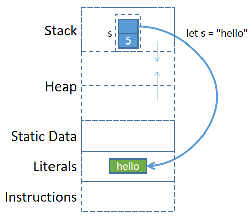
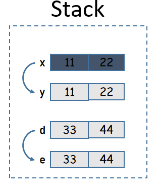
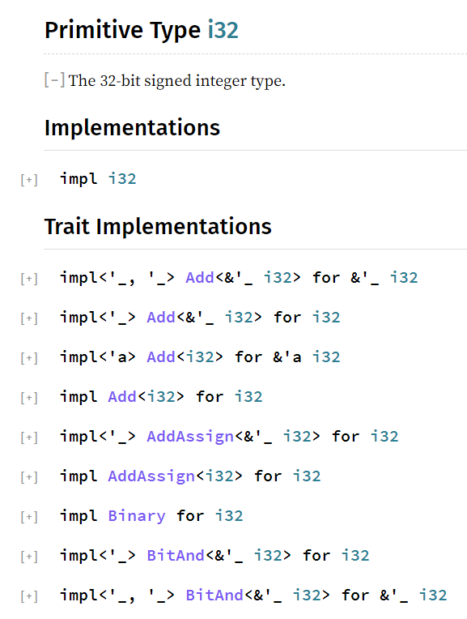

Rust入門祕籍(更新中)
這是一本Rust的入門書籍，相比官方書籍《The Rust Programming Language》，本書要更詳細、更具系統性，本書也儘量追求準確性。
但本人能力有限、見識有限、時間有限，我也不敢保證所寫內容完全準確，如有發現錯誤之處，還請在博客www.junmajinlong.com/rust/index/的評論中指出，在此先行謝過。
本書目前還在不斷更新中。
Rust入門第一課
注：本節暫時沒有具體內容，是留在最後來補寫的，目前只是列了一些todo
Rust是靜態、編譯、內存安全、可完全0運行時環境、可脫離操作系統、可編寫操作系統的語言。同時也是非常嚴格的語言。學習Rust和寫Rust代碼都非常消耗腦力。
編譯器是最好的資料、最嚴格的老師，程序員絕大多數時候都在和編譯器對抗。它，亦師亦友亦敵。
- main(){}
- rustc
- cargo run --release
- cargo build --release
- 註釋：// ///
- 分號結尾，表示這是一行Rust代碼，Rust以行為最小單位來解析代碼
- print!()
- println!() {} {:?} {:p}
- assert!()、assert_eq!()
Rust是基於表達式的語言
Rust是基於表達式的語言，幾乎所有代碼都可以看作是表達式。
表達式計算後有返回值，例如3+4是一個表達式，它返回計算結果7。
與表達式對應的概念是語句，語句沒有返回值或者不關心其返回值。例如Rust中變量賦值的代碼let a=3;是語句。
在Rust中，可以在表達式結尾加上分號;來將表達式轉換為【語句】。例如：
fn main(){ 3 + 4; }
編譯器發現表達式後有分號結尾時，在編譯期間會自動修改代碼，它會在分號的後面加上一個小括號()。單獨的小括號是一個特殊的值，表示什麼也不做。
所以，以上代碼實際上等價於：
fn main(){ 3+4;() }
帶有分號表示這是一行Rust代碼，Rust會先執行3+4得到7，然後忽略或丟棄該表達式的返回值7，再然後執行下一行代碼，即一個單獨的小括號，小括號表示什麼也不做，直接跳過。
所以，代碼3+4;從原本的表達式轉變成了不關心返回值的【語句】。
除了在表達式尾部加分號的代碼是語句之外，還有另外一種情況的代碼是語句而非表達式：用於聲明或定義的代碼都是語句。例如let聲明變量、fn定義函數、struct聲明結構體等。
Rust很多地方都會結合表達式和語句來做變量賦值。例如，if結構也是一個表達式，所以它有返回值，可以將if的返回值賦值給變量，而它的返回值來自於它的大括號：當大括號最後執行的一條代碼不加分號結尾時，該代碼的計算結果就是if結構的返回值。
例如：
#![allow(unused)] fn main() { let x = if true { println!("true"); 33 // 分支的最後一條代碼計算結果賦值給x，不能分號結尾 } else { println!("false"); 44 // 分支的最後一條代碼計算結果賦值給x，不能分號結尾 }; // 這個結尾分號表示let語句的結尾分號 }
上面的else分支不能缺少，不能缺少else的原因留待後面的章節再解釋。
變量聲明和函數定義
本章將介紹Rust中使用變量的細節以及定義函數的基礎知識。
理解Rust中的變量賦值
Rust中使用let聲明變量：
fn main(){ // 聲明變量name並初始化賦值 let name = "junmajinlong.com"; println!("{}", name); // println!()格式化輸出數據 }
Rust會對未使用的變量發出警告信息。如果確實想保留從未被使用過的變量，可在變量名前加上_前綴。
fn main(){ let name = "junmajinlong.com"; println!("{}", name); let gender = "male"; // 警告，gender未使用 let _age = 18; // 加_前綴的變量不被警告 }
Rust允許聲明未被初始化(即未被賦值)的變量，但不允許使用未被賦值的變量。多數情況下，都是聲明的時候直接初始化的。
fn main() { let name; // 只聲明，未初始化 // println!("{}", name); // 取消該行註釋，將編譯錯誤 name = "junmajinlong.com"; println!("{}", name); }
Rust允許重複聲明同名變量，後聲明的變量將遮蓋(shadow)前面已聲明的變量。需注意的是，遮蓋不是覆蓋，被遮蓋的變量仍然存在，而如果是被覆蓋則不再存在(也即，覆蓋時，原數據會被銷燬)。
fn main() { let name = "junmajinlong.com"; // 註釋下行，將警告：name變量未被使用 // 因為name仍然存在，只是被遮蓋了 println!("{}", name); let name = "gaoxiaofang.com"; // 遮蓋已聲明的name變量 println!("{}", name); }
變量遮蓋示意圖：
注：下圖內存佈局並不完全正確，此圖僅為說明變量遮蓋
+---------+ +--------------------+
| Stack | | Heap |
+---------+ +--------------------+
name --> | 0x56789 | ---> | "gaoxiaofang.com" |
| | +--------------------+
name --> | 0x01234 | ---> | "junmajinlong.com" |
+---------+ +--------------------+
變量初始化後，默認不允許再修改該變量。注意，修改變量是直接給變量賦值，而不是再次let聲明該變量，再次聲明變量是允許的，它會遮蓋原變量。
fn main() { let name = "junmajinlong.com"; // 取消下行註釋將編譯錯誤，默認不允許修改變量 // name = "gaoxiaofang.com"; let name = "gaoxiaofang.com"; // 再次聲明變量，遮蓋變量 println!("{}", name); }
如果想要修改變量的值，需要在聲明變量時加上mut標記(mutable)表示該變量是可修改的。
fn main() { let mut name = "junmajinlong.com"; println!("{}", name); name = "gaoxiaofang.com"; // 修改變量 println!("{}", name); }
Rust不僅對未被使用過的變量發出警告，還對賦值過但未被使用過的值發出警告。比如變量賦值後，尚未讀取該變量，就重新賦值了。
fn main() { let mut name = "junmajinlong.com"; // 警告值未被使用過 name = "gaoxiaofang.com"; println!("{}", name); }
Rust是靜態語言，聲明變量時需指定該變量將要保存的值的數據類型，這樣編譯器編譯時才知道為該變量將要保存的數據分配多少內存、允許存放什麼類型的數據以及如何存放數據。但Rust編譯器會根據所保存的值來推導變量的數據類型，推導得到確定的數據類型之後(比如第一次為該變量賦值之後)，就不再允許存放其他類型的數據。
fn main() { // 根據保存的值推導數據類型 // 推導結果：變量name為 &str 數據類型 let mut name = "junmajinlong.com"; //name = 32; // 再讓name保存i32類型的數據，報錯 }
當Rust無法推導類型時，或者聲明變量時就明確知道該變量要保存聲明類型的數據時，可明確指定該變量的數據類型。
fn main() { // 指定變量數據類型的語法：在變量名後加": TYPE" let age: i32 = 32; // 明確指定age為i32類型 println!("{}", name); // i32類型的變量想存儲u8類型數據，不允許 // age = 23_u8; }
雖然Rust是基於表達式的語言，但變量聲明的let代碼是語句而非表達式。這意味著let操作沒有返回值，因此無法使用let來連續賦值。
fn main(){ let a = (let b = 1); // 錯誤 }
可以使用tuple的方式同時為多個變量賦值，並且可以使用下劃線_佔位表示忽略某個變量的賦值過程。
#![allow(unused)] fn main() { // x = 11, y = 22, 忽略33 let (x, y, _) = (11, 22, 33); }
事實上，_佔位符比想象中還更會【偷懶】，其他語言中_表達的含義可能是丟棄其賦值結果(甚至不丟棄)，但Rust中的_會直接忽略變量賦值的過程。這導致了這樣一種看似奇怪的現象：使用普通變量名會導致報錯的變量賦值行為，使用_卻不會報錯。
例如，下面(1)不會報錯，而(2)會報錯。這裡涉及到了後面所有權轉移的內容，如果看不懂請先跳過，只需記住結論：_會直接忽略賦值的過程。
#![allow(unused)] fn main() { // (1) let s1 = "junmajinlong.com".to_string(); let _ = s1; println!("{}", s1); // 不會報錯 // (2) let s2 = "junmajinlong.com".to_string(); let ss = s2; println!("{}", s2); // 報錯 }
最後要說明的是，Rust中變量賦值操作實際上是Rust中的一種模式匹配，在後面的章節中將更系統、更詳細地介紹Rust模式匹配功能。
Rust中定義函數
Rust中使用fn關鍵字定義函數，定義函數時需指定參數的數據類型，如果有返回值，則需要指明返回值的數據類型。
fn關鍵字、函數名、函數參數及其類型、返回值類型組成函數簽名。例如fn fname(a: i32, b: i32)->i32是一個函數簽名。
定義函數參見如下幾個簡單的示例：
// 沒有參數、沒有返回值 fn f0(){ println!("first function_0"); println!("first function_1"); } // 有參數，沒有返回值 fn f1(a: i32, b: i32) { println!("a: {}, b: {}", a, b); } // 有參數，有返回值 fn f2(a: i32, b: i32) -> i32 { return a + b; } // 調用函數 fn main(){ f0(); f1(1,2); f2(3,4); }
函數也可以直接定義在函數內部。例如在函數a中定義函數b，這樣函數b就只能在函數a中訪問或調用：
fn f0(){ println!("first function_0"); println!("first function_1"); fn f1(a: i32, b: i32) { println!("a: {}, b: {}", a, b); } f1(2,3); } fn main(){ f0(); }
Rust有兩種方式指定函數返回值：
- 使用return來指定返回值，此時return後要加上分號結尾，使得return成為一個語句
- return關鍵字不指定返回值時，默認返回
()
- return關鍵字不指定返回值時，默認返回
- 不使用return，將返回最後一條執行的表達式計算結果，該表達式尾部不能帶分號
- 不使用return，但如果最後一條執行的是一個分號結尾的語句，則返回
()
- 不使用return，但如果最後一條執行的是一個分號結尾的語句，則返回
參考如下函數定義：
#![allow(unused)] fn main() { fn f0(a: i32) -> i32{ if a > 0 { // 使用return來返回，結尾處必須不能缺少分號 return a * 2; } // 最後執行的一條代碼，使用表達式的結果作為函數返回值 // 結尾必須不能帶分號 a * 2 } }
Rust原始數據類型
官方手冊：https://doc.rust-lang.org/beta/std/index.html#primitives。
理解什麼是原始數據類型(primitive type)
有些數據就是簡簡單單的，比如數字3，它就是一個數值3，編譯器或解釋器不需要任何其他信息來識別它，只要看到3就知道它是一個數值類型。
但是有些數據類型稍微複雜一點，除了要存儲數據本身之外，編譯器或解釋器還需要再多保存一點關於該數據的元數據信息。比如數組類型，除了存儲數組中各元素數據之外，還需要額外存儲數組的長度信息，這樣編譯器或解釋器才知道數組到哪裡結束，這裡數組的長度就是數組類型的元數據。
所謂原始數據類型，就是該類型的數據只需要數據本身即可，沒有額外元數據。
Rust有很多種原始數據類型(primitive type)，這些原始數據類型都是Rust內置的類型(在核心庫core中定義而非標準庫std中定義的類型)。包括數據大小固定的機器類型(Machine Type)、某些組合類型和其他一些Rust語言必要的內置類型。
包括：
- 機器類型(大小是固定的)
- bool
- u8、u16、u32、u64、u128、usize
- i8、i16、i32、i64、i128、isize
- f32、f64
- char
- 組合類型
- Tuple
- Array
- 其他語言必要類型
- Slice，即切片類型
- str，即字符串切片類型
- !，即never類型
- ()，即Unit類型
- reference，即引用類型
- pointer，即裸指針類型
- fn，即函數指針類型
本章會介紹其中一些原始數據類型，還會額外簡單地介紹一個非原始數據類型：String類型。
數值類型
Rust的數值類型包括整數和浮點數。有如下幾種類型：
| 長度 | 有符號 | 無符號 | 浮點數 |
|---|---|---|---|
| 8-bit | i8 | u8 | |
| 16-bit | i16 | u16 | |
| 32-bit | i32(默認) | u32 | f32 |
| 64-bit | i64 | u64 | f64(默認) |
| 128-bit | i128 | u128 | |
| word | isize | usize |
注: word表示一個機器字長，通常是一個指針的大小，大小和機器有關。64位機器的word是64-bit，32位機器的word是32-bit。
可以在數值字面量後加上類型來表示該類型的數值。例如：
fn main(){ let _a = 33i32; // 直接加類型後綴 let _b = 33_i32; // 使用_分隔數值和類型 let _c = 33_isize; let _d = 33_f32; }
如果數值較長，可以在任意位置處使用下劃線_劃分數值，增加可讀性。
fn main(){ let _a = 33_333_33_i32; let _b = 3_333_333_i32; let _c = 3_333_333f32; }
當不明確指定變量的類型，也不明確指定數值字面量的類型後綴，Rust默認將整數當作i32類型，浮點數當作f64類型。
fn main(){ // 等價於 let _a: i32 = 33_i32; let _a = 33; // 等價於let _b: f64 = 64.123_f64; let _b = 64.123; }
每種數值類型都有所能存儲的最大數值和最小數值。當超出類型的有效範圍時，Rust將報錯(panic)。例如u8類型的範圍是0-255，它無法存儲256。
fn main() { let n: i32 = std::i32::MAX; // i32類型的最大值 println!("{}", n + 1); // 編譯錯誤，溢出 }
Rust允許使用0b 0o 0x來表示二進制、八進制和十六進制的整數。
fn main(){ let a = 0b101_i32; // 二進制整數，i32類型 let b = 0o17; // 八進制整數，i32類型 let c = 0xac; // 十六進制整數，i32類型 println!("{}, {}, {}", a, b, c); // 5, 15, 172 }
數值類型之間默認不會隱式轉換，如果需要轉換數值類型，可手動使用as進行轉換(as主要用於原始數據類型間的類型轉換)。例如3_i32 as u8表示將i32類型的3轉換為u8類型。需注意，寬類型數值轉為窄類型數值時，如果溢出，則從高位截斷。
fn main(){ assert_eq!(10_i8 as u16, 10_u16); assert_eq!(2525_u16 as i16, 2525_i16); // 有符號類型->有符號類型 assert_eq!(-1_i16 as i32, -1_i32); // 有符號到無符號類型 assert_eq!(-1_i32 as u8, 255_u8); // 範圍溢出，截斷 assert_eq!(1000_i16 as u8, 232_u8); // 浮點數轉整數，小數部分被丟棄 assert_eq!(33.33_f32 as u8, 33_u8); }
Rust數值是一種類型的值，每種類型有自己的方法，因此數值也可以調用它們具有的方法。
fn main(){ // 需注意，下面的數值都加上了類型後綴。 // 這是因為在調用方法的時候，需要知道值的 // 所屬類型才能找到這種類型具有的方法 println!("{}", 3_u8.pow(2)); // 9 println!("{}", (-3_i32).abs()); // 3 // 4，計算45的二進制中有多少個1 println!("{}", 45i32.count_ones()); // 4 }
Rust將字節字面量存儲為u8類型，字節字面量的表示方式為b'X'(b後面使用單引號包圍單個ASCII字符)。
例如A的ASCII碼為65，那麼b'A'完全等價於65u8。
fn main(){ let a = b'A'; // a的類型自動推導為u8 let b = a - 65; // b的類型也自動推導為u8 println!("{}, {}", a, b); // 65, 0 }
需注意，某些特殊ASCII字符需要使用反斜線轉義，例如b'\n', b'\'', b'\\'。有些控制類的字符無法直接寫出來，此時可以使用十六進制法來表示，例如b'\x1b'表示ESC按鍵的控制符。
布爾類型
Rust中的Boolean類型有兩個值：true和false。
類似於if、while等的控制語句以及邏輯運算符|| && !都需要進行條件判斷，Rust只允許在條件判斷處使用布爾類型。
例如，要判斷x是否等於0，在其他語言中可能允許如下寫法：
#![allow(unused)] fn main() { if x { ... } }
但在Rust中，不允許上面的寫法(除非x的值自身就是true或false)。
Rust中必須得在條件判斷處寫返回值為true/false的表達式。例如寫成如下形式：
#![allow(unused)] fn main() { if x == 0 { ... } }
Rust的布爾值可以使用as操作符轉換為各種數值類型，false對應0，true對應1。但數值類型不允許轉換為bool值。再次提醒，as操作符常用於原始數據類型之間的類型轉換。
fn main() { println!("{}", true as u32); println!("{}", false as u8); // println!("{}", 1_u8 as bool); // 編譯錯誤 }
char類型
char官方手冊：https://doc.rust-lang.org/beta/std/primitive.char.html
char類型是Rust的一種基本數據類型，用於存放單個unicode字符，佔用4字節空間(32bit)。
在存儲char類型數據時，會將其轉換為UTF-8編碼的數據(即Unicode代碼點)進行存儲。
char字面量是單引號包圍的任意單個字符，例如'a'、'我'。注意：char和單字符的字符串String是不同的類型。
允許使用反斜線對某些特殊字符轉義：
字符名 字節字面量
--------------------
單引號 '\''
反斜線 '\\'
換行符 '\n'
換頁符 '\r'
製表符 '\t'
Rust不會自動將char類型轉換為其他類型，但可以進行顯式轉換：
- 可使用
as將char轉為各種整數類型，目標類型小於4字節時，將從高位截斷 - 可使用
as將u8類型轉char- 之所以不支持其他整數類型，是因為其他整數類型的值可能無法轉換為char(即不在UTF-8編碼表範圍的整數值)
- 可使用
std::char::from_u32將u32整數類型轉char，返回值Option<char>- 如果傳遞的u32數值不是有效的Unicode代碼點，則
from_u32返回None - 否則返回
Some(c)，c就是char類型的字符
- 如果傳遞的u32數值不是有效的Unicode代碼點，則
- 可使用
std::char::from_digit(INT, BASE)將十進制的INT轉換為BASE進制的char- 如果INT參數不是有效的進制數，返回None
- 如果BASE超出進制數的合理範圍
[1,36]，將panic - 否則返回
Some(c)，c就是char類型的字符
例如：
#![allow(unused)] fn main() { // char -> Integer println!("{}", '我' as i32); // 25105 println!("{}", '是' as u16); // 26159 println!("{}", '是' as u8); // 47，被截斷了 // u8 -> char println!("{}", 97u8 as char); // a // std::char use std::char; println!("{}", char::from_u32(0x2764).unwrap()); // ❤ assert_eq!(char::from_u32(0x110000), None); // true println!("{}", char::from_digit(4,10).unwrap()); // '4' println!("{}", char::from_digit(11,16).unwrap()); // 'b' assert_eq!(char::from_digit(11,10),None); // true }
字符串
Rust中的字符串是一個難點，此處先簡單介紹關於字符串的一部分內容，更多細節和用法留到後面再單獨解釋。
Rust有兩種字符串類型：str和String。其中str是String的切片類型，也就是說，str類型的字符串值是String類型的字符串值的一部分或全部。
字符串字面量
字符串字面量使用雙引號包圍。
fn main(){ let s = "junmajinlong.com"; println!("{}", s); }
上面賦值變量時進行了變量推導，推導出的變量數據類型為&str。因此，上述代碼等價於：
fn main(){ let s: &str = "junmajinlong.com"; println!("{}", s); }
實際上，字符串字面量的數據類型均為&str，其中str表示str類型，&表示該類型的引用，即一個指針。因此，&str表示的是一個指向內存中str類型數據的指針，該指針所指向的內存位置處保存了字符串數據"junmajinlong.com"。
至於為什麼字符串字面量的類型是&str而不是str，後文再解釋。
String類型的字符串
String類型的字符串沒有對應的字面量構建方式，只能通過Rust提供的方法來構建。
例如，可以通過字符串字面量(即&str類型的字符串)來構建。
fn main(){ // 類型自動推導為: String let s = String::from("junmajinlong.com"); let s1 = "junmajinlong".to_string(); println!("{},{}", s, s1); }
String類型的字符串可以原地修改。例如：
fn main(){ let mut s = String::from("junmajinlong"); s.push('.'); // push()可追加單個char字符類型 s.push_str("com"); // push_str()可追加&str類型的字符串 println!("{}", s); // 輸出：junmajinlong.com }
理解str和String的聯繫和區別
注：這部分內容對剛接觸Rust的人來說較難理解，可先跳過，等閱讀了後面一些章節再回來看。
str類型的字符串和String類型的字符串是有聯繫的：str字符串是String類型字符串的切片(slice)類型。關於切片類型，參考Slice類型。
例如，變量s保存了String類型的字符串junma，那麼s[0..1]就是str類型的字符串j，s[0..3]就是str類型的字符串jun。
例如：
fn main(){ let s = String::from("junmajinlong.com"); // 自動推導數據類型為&str // s[0..3]的類型為str // &s[0..3]的類型為&str let s_str = &s[0..3]; // 等價於&(s[0..3])而不是(&s)[0..3] // 現在s_str通過胖指針引用了源String字符串中的局部數據 println!("{}", s_str); // 輸出：jun }
前面說過，字符串字面量的類型是&str類型。也就是說，字符串字面量實際上是字符串切片類型的引用類型。
fn main(){ // IDE中可看到下面的變量推導出的數據類型為&str let s = "hello"; }
那麼字符串字面量是如何存儲的呢？
對於字面量"hello"來說，並不是先在內存中以String類型的方式存儲"hello"，然後再創建該String數據的引用來得到了一個&str的。
編譯器對字符串字面量做了特殊處理：編譯器編譯的時候直接將字符串字面量以硬編碼的方式寫入程序二進制文件中，當程序被加載時，字符串字面量被放在內存的某個位置(不在堆中也不在棧中，而是在類似於靜態數據區的全局字面量區)。當程序執行到let s="hello";準備將其賦值給變量s時(注：s在棧上)，直接將字面量內存區的該數據地址保存到&str類型的s中。

理解了這一點，再理解let s = String::from("hello");這樣的代碼就很容易了。編譯器將"hello"硬編碼寫入程序二進制文件，程序加載期間字符串字面量被放入字面量內存區，當程序運行到let s = String::from()操作時，從字面量內存區將其拷貝到堆內存中，然後將堆內存中該數據的地址保存到棧內變量s中。
tuple類型
Rust的tuple類型可以存放0個、1個或多個任意數據類型的數據。使用tup.N的方式可以訪問索引為N的元素。
#![allow(unused)] fn main() { let n = (11, 22, 33); println!("{}", n.0); // 11 println!("{}", n.1); // 22 println!("{}", n.2); // 33 }
注意，訪問tuple元素的索引必須是編譯期間就能確定的數值，而不能是變量。
#![allow(unused)] fn main() { let n = (11, 22, 33); let a: usize = 2; println!("{}", n.a); // 錯誤 }
實際上，n.a會被Rust解析為對Struct類型的變量n的a字段的訪問。
tuple通常用來作為簡單的數據組合體。
例如：
fn main(){ // 表示一個人的name和age let p_name = "junmajinlong"; let p_age = 23; println!("{}, {}", p_name, p_age); // 與其將有關聯的數據分開保存到多個變量中， // 不如保存在一個結構中 let p = ("junmajinlong", 23); // 同時存放&str和i32類型的數據 println!("{}, {}", p.0, p.1); }
Rust中經常會將tuple類型的各元素賦值給各變量，方式如下：
fn main(){ let p = ("junmajinlong", 23); // 也可以類型推導：let (name,age) = p; let (name, age): (&str, i32) = p; // 比 let name = p.0; let age = p.1; 更簡潔 println!("{}, {}", name, age); }
有時候tuple裡只會保存一個元素，此時必須不能省略最後的逗號：
#![allow(unused)] fn main() { let p = ("junmajinlong",); }
unit類型
不保存任何數據的tuple表示為()。在Rust中，它是特殊的，它有自己的類型：unit。
unit類型的寫法為()，該類型也只有一個值，寫法仍然是()。參考下面的寫法應該能搞清楚。
#![allow(unused)] fn main() { // 將值()保存到類型為()的變量x中 // 類型 值 let x: () = (); }
unit類型通常用在那些不關心返回值的函數中。在其他語言中，那些不寫return語句或return不指定返回內容的的函數，一般表示不關心返回值。在Rust中可將這種需求寫為return ()。
Array類型
Rust中的數組和其他語言中的數組不太一樣，Rust數組長度固定、元素類型相同。
數組的數據類型表示方式為[Type; N]，其中：
- Type是該數組要存儲什麼類型的數據，數組中的所有元素類型都必須是Type
- N是數組的長度，Rust不會自動伸縮數組的長度
數組字面量使用中括號[]表示，例如[1,2,3]。還有一種特殊的表示數組字面量的方式是[val; N]，這有點像數組類型的描述方式[Type; N]，不過這裡表示的是該數組長度為N，並且這N個元素的值都初始化為val。
例如：
fn main(){ // 自動推導類型為：[i32; 4] let _arr = [11,22,33,44]; let _arr1: [&str; 3] = ["junma", "jinlong", "gaoxiao"]; // 自動推導類型為：[u8; 1024] // 該數組初始化為1024個u8類型的0 // 可將之當作以0填充的1K的buf空間 let _arr2 = [0_u8; 1024]; }
注意，[Type; N]是用來描述數據類型的，所以其中的N必須在編譯期間就能確認，因此N不能是一個變量。
fn main(){ let n = 3; // 編譯錯誤，提示n不是常量值 let _arr1: [&str; n] = ["junma", "jinlong", "gaoxiao"]; }
可以迭代數組，不過不能直接for i in arr{}，而是for i in &arr{}或者for i in arr.iter(){}。例如：
fn main(){ let arr = [11,22,33,44]; for i in arr.iter() { println!("{}", i); } }
數組有很多方法可以使用，例如len()方法可以獲取數組的長度。
fn main(){ let arr = [11,22,33,44]; println!("{}", arr.len()); // 4 }
實際上，數組的方法都來自Slice類型。Slice類型後面會詳細介紹。
Rust中的引用類型
本節簡單介紹Rust中的引用，混個臉熟，後面會專門詳細介紹引用以及引用更細節更底層的內容。
Rust中，使用&T表示類型T的引用類型(reference type)。
例如，&String表示String的引用類型，&i32表示i32的引用類型，&&i32表示i32引用的引用類型。
引用類型是一種數據類型，它表示其所保存的值是一個引用。
值的引用寫法和引用類型的寫法類似。例如&33表示的是33這個值的引用。
引用，通常來說是指向其他數據的一個指針或一個胖指針(有額外元數據的指針)。例如&33表示的是一個指向數據值33的一個指針。
因此，引用類型保存值的引用。
例如：
#![allow(unused)] fn main() { let n: &i32 = &33_i32; }
這裡變量n的類型是引用類型&i32，它所保存的值必須是i32類型數據的引用，例如上面的&33_i32就是33_i32的引用。
可以將保存了引用的變量賦值給其他變量，這樣就有多個變量擁有同一份數據的引用。
fn main(){ let n = 33; let n_ref1 = &n; // n_ref1指向33 let n_ref2 = n_ref1; // n_ref2也指向33 }
可以使用std::ptr::eq()來判斷兩個引用是否指向同一個地址，即判斷所指向的數據是否是同一份數據。
fn main(){ let n = 33; let n_ref1 = &n; let n_ref2 = n_ref1; println!("{}", std::ptr::eq(n_ref1, n_ref2)); // true }
可變引用
直接使用&創建出來的引用是隻讀的，這意味著可以通過該引用去讀取其指向的數據，但是不能通過引用去修改指向的數據。
如果想要通過引用去修改源數據，需要使用&mut v來創建可修改源數據v的可變引用。
注意，想要通過&mut引用去修改源數據，要求原變量是可變的。這很容易理解，&mut是一個對源數據的引用，如果源數據本身就不允許修改，當然也無法通過&mut去修改這份數據。
因此，使用&mut的步驟大致如下：
#![allow(unused)] fn main() { let mut x = xxxx; let x_ref = &mut x; }
例如，下面聲明的變量n是不可變的，即使創建&mut n，也無法修改原始數據。實際上，這會導致編譯錯誤。
fn main(){ let n = 33; let n_ref = &mut n; // 編譯錯誤 }
因此，改為如下代碼可編譯通過：
fn main(){ let mut n = 33; let n_ref = &mut n; }
解引用
解引用表示解除引用，即通過引用獲取到該引用所指向的原始值。
解引用使用*T表示，其中T是一個引用(如&i32)。
例如：
fn main(){ let s = String::from("junma"); let s_ref = &s; // s_ref是指向"junma"的一個引用 // *s_ref表示通過引用s_ref獲取其指向的"junma" // 因此s和*s_ref都指向同一個"junma"，它們是同一個東西 assert_eq!(s, *s_ref); // true }
再例如：
fn main(){ let mut n = 33; let n_ref = &mut n; n = *n_ref + 1; println!("{}", n); }
Rust絕大多數時候不會自動地解除引用。但在某些環境下，Rust會自動進行解引用。
自動解引用的情況有(結論先總結在此，混臉熟，以後涉及到時再來)：
- (1).使用
.操作符時(包括取屬性值和方法調用)，會隱式地儘可能解除或創建多層引用 - (2).使用比較操作符時，若比較的兩邊是相同類型的引用，則會自動解除引用到它們的值然後比較
對於(1)，Rust會自動分析func()的參數，並在需要的時候自動創建或自動解除引用。例如以abc.func()有可能會自動轉換為&abc.func()，反之，&abc.func()也有可能會自動轉換為abc.func()。
對於(2)，例如有引用類型的變量n，那麼n > &30和*n > 30的效果是一樣的。
Slice類型
Slice類型通常翻譯為切片，它表示從某個包含多個元素的容器中取得局部數據，這個過程稱為切片操作。不同語言對切片的支持有所不同，比如有些語言只允許取得連續的局部元素，而有些語言可以取得離散元素，甚至有些語言可以對hash結構進行切片操作。
Rust也支持Slice操作，Rust中的切片操作只允許獲取一段連續的局部數據，切片操作獲取到的數據稱為切片數據。
Rust常見的數據類型中，有三種類型已支持Slice操作：String類型、Array類型和Vec類型(本文介紹的Slice類型自身也支持切片操作)。實際上，用戶自定義的類型也可以支持Slice操作，只要自定義的類型滿足一些條件即可，相關內容以後再介紹。
slice操作
有以下幾種切片方式：假設s是可被切片的數據
s[n1..n2]：獲取s中index=n1到index=n2(不包括n2)之間的所有元素s[n1..]：獲取s中index=n1到最後一個元素之間的所有元素s[..n2]：獲取s中第一個元素到index=n2(不包括n2)之間的所有元素s[..]：獲取s中所有元素- 其他表示包含範圍的方式，如
s[n1..=n2]表示取index=n1到index=n2(包括n2)之間的所有元素
例如，從數據s中取第一個元素和取前三個元素的切片示意圖如下：

切片操作允許使用usize類型的變量作為切片的邊界。例如，n是一個usize類型的變量，那麼s[..n]是允許的切片操作。
slice作為數據類型
和其他語言的Slice不同，Rust除了支持切片操作，還將Slice上升為一種原始數據類型(primitive type)，切片數據的數據類型就是Slice類型。
Slice類型是一個胖指針，它包含兩份元數據：
- 第一份元數據是指向源數據中切片起點元素的指針
- 第二份元數據是切片數據中包含的元素數量，即切片的長度
例如，對於切片操作s[3..5]，其起點指針指向s中index=3處的元素，切片長度為2。
Slice類型的描述方式為[T]，其中T為切片數據的數據類型。例如對存放了i32類型的數組進行切片，切片數據的類型為[i32]。
由於切片數據的長度無法在編譯期間得到確認(比如切片操作的邊界是變量時s[..n])，而編譯器是不允許使用大小不定的數據類型的，因此無法直接去使用切片數據(比如無法直接將它賦值給變量)。
fn main(){ let arr = [11,22,33,44,55]; let n: usize = 3; // 編譯錯誤，無法直接使用切片類型 let arr_s = arr[0..n]; }
也因此，在Rust中幾乎總是使用切片數據的引用。切片數據的引用對應的數據類型描述為&[T]或&mut [T]，前者不可通過Slice引用來修改源數據，後者可修改源數據。
注意區分Slice類型和數組類型的描述方式。
數組類型表示為
[T; N]，數組的引用類型表示為&[T; N]，Slice類型表示為[T]，Slice的引用類型表示為&[T]。
例如，對一個數組arr做切片操作，取得它的不可變引用arr_slice1和可變引用arr_slice2，然後通過可變引用去修改原數組的元素。
fn main(){ let mut arr = [11,22,33,44]; // 不可變slice let arr_slice1 = &arr[..=1]; println!("{:?}", arr_slice1); // [11,22]; // 可變slice let arr_slice2 = &mut arr[..=1]; arr_slice2[0] = 1111; println!("{:?}", arr_slice2);// [1111,22]; println!("{:?}", arr);// [1111,22,33,44]; }
需要說明的一點是，雖然[T]類型和&[T]類型是有區別的，前者是切片類型，後者是切片類型的引用類型，但因為幾乎總是通過切片類型的引用來使用切片數據，所以通常會去混用這兩種類型(包括一些書籍也如此)，無論是[T]還是&[T]都可以看作是切片類型。
特殊對待的str切片類型
需要特別注意的是，String的切片和普通的切片有些不同。
一方面，String的切片類型是str，而非[String]，String切片的引用是&str而非&[String]。
另一方面，Rust為了保證字符串總是有效的Unicode字符，它不允許用戶直接修改字符串中的字符，所以也無法通過切片引用來修改源字符串，除非那是ASCII字符(ASCII字符總是有效的unicode字符)。
事實上，Rust只為&str提供了兩個轉換ASCII大小寫的方法來修改源字符串，除此之外，沒有為字符串切片類型提供任何其他原地修改字符串的方法。
fn main(){ let mut s = String::from("HELLO"); let ss = &mut s[..]; // make_ascii_lowercase() // make_ascii_uppercase() ss.make_ascii_lowercase(); println!("{}", s); // hello }
Array類型自動轉換為Slice類型
在Slice的官方手冊中，經常會看到將Array的引用&[T;n]當作Slice來使用。
例如：
#![allow(unused)] fn main() { let arr = [11,22,33,44]; let slice = &arr; // &arr將自動轉換為slice類型 // 調用slice類型的方法first()返回slice的第一個元素 println!("{}", slice.first().unwrap()); // 11 }
所以，可以直接將數組的引用當成slice來使用。即&arr和&mut arr當作不可變slice和可變slice來使用。
另外，在調用方法的時候，由於.操作符會自動創建引用或解除引用，因此Array可以直接調用Slice的所有方法。
例如：
#![allow(unused)] fn main() { let arr = [11, 22, 33, 44]; // 點運算符會自動將arr.first()轉換為&arr.first() // 而&arr又會自動轉換為slice類型 println!("{}", arr.first().unwrap()); }
這裡需要記住這個用法，但目前請忽略以上自動轉換行為的內部原因，其涉及到尚未介紹的類型轉換機制。
Slice類型支持的方法
Slice支持很多方法，這裡介紹幾個比較常用的方法，更多方法可參考官方手冊：https://doc.rust-lang.org/std/primitive.slice.html#impl。
注：這些方法都不適用於String Slice，String Slice可用的方法較少，上面給出官方手冊中，除了方法名中有"ascii"的方法(如is_ascii()方法)是String Slice可使用的方法外，其他方法都不能被String Slice調用。
一些常見方法：
- len()：取slice元素個數
- is_empty()：判斷slice是否為空
- contains()：判斷是否包含某個元素
- repeat()：重複slice指定次數
- reverse()：反轉slice
- join()：將各元素壓平(flatten)並通過指定的分隔符連接起來
- swap()：交換兩個索引處的元素，如
s.swap(1,3) - windows()：以指定大小的窗口進行滾動迭代
- starts_with()：判斷slice是否以某個slice開頭
例如：
#![allow(unused)] fn main() { let arr = [11,22,33]; println!("{}", arr.len()); // 3 println!("{:?}", arr.repeat(2)); // [11, 22, 33, 11, 22, 33] println!("{:?}", arr.contains(&22)); // true // reverse() let mut arr = [11,22,33]; arr.reverse(); println!("{:?}",arr); // [33,22,11] // join() println!("{}", ["junma","jinlong"].join(" ")); // junma jinlong println!("{:?}", [[1,2],[3,4]].join(&0)); // [1,2,0,3,4] // swap() let mut arr = [1,2,3,4]; arr.swap(1,2); println!("{:?}", arr); // [1,3,2,4] // windows() let arr = [10, 20, 30, 40]; for i in arr.windows(2) { println!("{:?}", i); // [10,20], [20,30], [30,40] } // starts_with()，相關的方法還有ens_with() let arr = [10, 20, 30, 40]; println!("{}", arr.starts_with(&[10])); // true println!("{}", arr.starts_with(&[10, 20])); // true println!("{}", arr.starts_with(&[30])); // false }
Rust操作符和流程控制語句
本章將介紹Rust中的一些操作符以及流程控制結構。
Rust操作符
操作符(Operator)通常是由一個或多個特殊的符號組成(也有非特殊符號的操作符，如as)，比如+ - * / % & *等等，每個操作符都代表一種動作(或操作)，這種動作作用於操作數之上。簡單來說，就是對操作數執行某種操作，然後返回操作後得到的結果。
比如加法操作3 + 2，這裡的+是操作符，加號兩邊的3和2是操作數，加法符號的作用是對操作數3加上操作數2，得到計算結果5，然後返回5。
此處僅列出一部分操作符並給出它們的含義，剩下其他的操作符將在後面章節涉及到的時候再介紹。
| 操作符類別 | 操作符及描述 | 示例 |
|---|---|---|
| 一元運算符 | -：取負(加負號) | -x |
!：對整數值是位取反，對布爾值是邏輯取反 | !x | |
| 算術運算符 | + - * / %：加、減、乘、除、取模 | x + y |
| 位運算符 | `& | ^ ! << >>`：位與、位或、位異或、位取反、左移、右移 |
| 邏輯運算符 | `& && | |
| 賦值操作符 | = | x = y |
| 複合賦值操作符 | `+= -= *= /= %= &= | = ^= <<= >>=` |
| 等值比較運算符 | == !=：相等和不等 | x == y |
| 大小比較運算符 | < <= > >=：小於、小於等於、大於、大於等於 | x > y |
以上操作符有幾點需要說明：
-
各種運算符有優先級，可使用小括號
()來強制改變多個運算符運算時的優先級，如(x + y) * z -
! & |操作符有兩種意思，根據上下文決定：- 操作數是整數值時：按位取反、按位與、按位或
- 操作數是布爾值時：邏輯取反、邏輯與、邏輯或
-
& &&都表示邏輯與，但後者會短路計算。同理| ||都表示邏輯或，但後者會短路計算例如，
false & true在知道左邊的操作數是false後，仍然會計算右邊的操作數，而false && true知道左邊是false後，已經能夠確定整個表達式的結果是false，它會直接返回false，而不會再計算右邊的操作數。#![allow(unused)] fn main() { // 不會panic報錯退出，因為不會評估 || 運算符右邊的操作數 if true || panic!("not bang!!!") {} // 會panic報錯退出，因為會評估 | 運算符右邊的操作數 if true | panic!("bang!!!") {} }
範圍(Range)表達式
Rust支持範圍操作符，有以下幾種表示範圍的操作符：
| 範圍表達式 | 類型 | 表示的範圍 |
|---|---|---|
| start..end | std::ops::Range | start ≤ x < end |
| start.. | std::ops::RangeFrom | start ≤ x |
| ..end | std::ops::RangeTo | x < end |
| .. | std::ops::RangeFull | - |
| start..=end | std::ops::RangeInclusive | start ≤ x ≤ end |
| ..=end | std::ops::RangeToInclusive | x ≤ end |
例如，1..5表示1、2、3、4共四個整數，1..=5表示1、2、3、4、5共五個整數。
需注意的是其中表示全範圍的表達式..，它表示可以儘可能地生成下一個數，直到無法生成為止。
在生成Slice的時候，需要使用到範圍表達式。例如，從數組生成Slice：
#![allow(unused)] fn main() { let arr = [11, 22, 33, 44, 55]; let s1 = &arr[0..3]; // [11,22,33] let s2 = &arr[1..=3]; // [22, 33, 44] let s3 = &arr[..]; // [11, 22, 33, 44, 55] }
範圍表達式也常被用於迭代操作。例如for語句：
#![allow(unused)] fn main() { for i in 1..5 { println!("{}", i); // 1 2 3 4 } }
另外，範圍表達式和對應類型的實例是等價的。例如，下面兩個表示範圍的方式是等價的：
#![allow(unused)] fn main() { let x = 0..5; let y = std::ops::Range {start: 0, end: 5}; }
流程控制結構
流程控制結構包括：
- if條件判斷結構
- loop循環
- while循環
- for..in迭代
除此之外，還有其他幾種本節暫不介紹的控制結構。
需要說明的是，Rust中這些結構都是表達式，它們都有默認的返回值()，且if結構和loop循環結構可以指定返回值。
注：【這些結構的默認返回值是
()】的說法是不嚴謹的之所以可以看作是默認返回
()，是因為Rust會在每個分號結尾的語句後自動加上小括號()，使得語句看上去也有了返回值。為了行文簡潔，下文將直接描述為默認返回值。
if..else
if語句的語法如下：
#![allow(unused)] fn main() { if COND1 { ... } else if COND2 { ... } else { ... } }
其中，條件表達式COND不需要加括號，且COND部分只能是布爾值類型。另外，else if分支是可選的，且可以有多個，else分支也是可選的，但最多隻能有一個。
由於if結構是表達式，它有返回值，所以可以將if結構賦值給一個變量(或者其他需要值的地方)。
但是要注意，if結構默認返回Unit類型的()，這個返回值是沒有意義的。如果要指定為其他有意義的返回值，要求：
- 分支最後執行的那一行代碼不使用分號結尾，這表示將最後執行的這行代碼的返回值作為if結構的返回值
- 每個分支的返回值類型相同，這意味著每個分支最後執行的代碼都不能使用分號結尾
- 必須要有else分支，否則會因為所有分支條件判斷都不通過而直接返回if的默認返回值
()
下面用幾個示例來演示這幾個要求。
首先是一段正確的代碼片段：
#![allow(unused)] fn main() { let x = 33; // 將if結構賦值給變量a // 下面if的每個分支，其返回值類型都是i32類型 let a = if x < 20 { // println!()不是該分支最後一條語句，要加結尾分號 println!("x < 20"); // x+10是該分支最後一條語句， // 不加分號表示將其計算結果返回，返回類型為i32 x + 10 } else if x < 30 { println!("x < 30"); x + 5 // 返回x + 5的計算結果，返回類型為i32 } else { println!("x >= 30"); x // 直接返回x，返回類型為i32 }; // if最後一個閉大括號後要加分號，這是let的分號 }
下面是一段將if默認返回值()賦值給變量的代碼片段：
#![allow(unused)] fn main() { let x = 33; // a被賦值為`()` let a = if x < 20 { println!("x < 20"); }; println!("{:?}", a); // () }
下面不指定else分支，將報錯：
#![allow(unused)] fn main() { let x = 33; // if分支返回i32類型的值 // 但如果沒有執行if分支，則返回默認值`()` // 這使得a的類型不是確定的，因此報錯 let a = if x < 20 { x + 3 // 該分支返回i32類型 }; }
下面if分支和else if分支返回不同類型的值，將報錯：
#![allow(unused)] fn main() { let x = 33; let a = if x < 20 { x + 3 // i32類型 } else if x < 30 { "hello".to_string() // String類型 } else { x // i32類型 }; }
由於if的條件表達式COND部分要求必須是布爾值類型，因此不能像其他語言一樣編寫類似於if "abc" {}這樣的代碼。但是，卻可以在COND部分加入其他語句，只要保證COND部分的返回值是bool類型即可。
例如下面的代碼。注意下面使用大括號{}語句塊包圍了if的COND部分，使得可以先執行其他語句，在語句塊的最後才返回bool值作為if的分支判斷條件。
#![allow(unused)] fn main() { let mut x = 0; if {x += 1; x < 3} { println!("{}", x); } }
這種用法在if結構上完全是多此一舉的，但COND的這種用法也適用於while循環，有時候會有點用處。
while循環
while循環的語法很簡單：
#![allow(unused)] fn main() { while COND { ... } }
其中，條件表達式COND和if結構的條件表達式規則完全一致。
如果要中途退出循環，可使用break關鍵字，如果要立即進入下一輪循環，可使用continue關鍵字。
例如：
#![allow(unused)] fn main() { let mut x = 0; while x < 5 { x += 1; println!("{}", x); if x % 2 == 0 { continue; } } }
根據前文對if的條件表達式COND的描述，COND部分允許加入其他語句，只要COND部分最後返回bool類型即可。例如：
#![allow(unused)] fn main() { let mut x = 0; // 相當於do..while while {println!("{}", x);x < 5} { x += 1; if x % 2 == 0 { continue; } } }
最後，while雖然有默認返回值()，但()作為返回值是沒有意義的。因此，不考慮while的返回值問題。
loop循環
loop表達式是一個無限循環結構。只有在loop循環體內部使用break才能終止循環。另外，也使用continue可以直接跳入下一輪循環。
例如，下面的循環結構將輸出1、3。
#![allow(unused)] fn main() { let mut x = 0; loop { x += 1; if x == 5 { break; } if x % 2 == 0 { continue; } println!("{}", x); } }
loop也有默認返回值()，可以將其賦值給變量。例如，直接將上例的loop結構賦值給變量a：
#![allow(unused)] fn main() { let mut x = 0; let a = loop { ... }; println!("{:?}", a); // () }
作為一種特殊情況，當在loop中使用break時，break可以指定一個loop的返回值。
#![allow(unused)] fn main() { let mut x = 0; let a = loop { x += 1; if x == 5 { break x; // 返回跳出循環時的x，並賦值給變量a } if x % 2 == 0 { continue; } println!("{}", x); }; println!("var a: {:?}", a); // 輸出 var a: 5 }
注意，只有loop中的break才能指定返回值，在while結構或for迭代結構中使用的break不具備該功能。
for迭代
Rust中的for只具備迭代功能。迭代是一種特殊的循環，每次從數據的集合中取出一個元素是一次迭代過程，直到取完所有元素，才終止迭代。
例如，Range類型是支持迭代的數據集合，Slice類型也是支持迭代的數據集合。
但和其他語言不一樣，Rust數組不支持迭代，要迭代數組各元素，需將數組轉換為Slice再進行迭代。
#![allow(unused)] fn main() { // 迭代Range類型：1..5 for i in 1..5 { println!("{}", i); } let arr = [11, 22, 33, 44]; // arr是數組，&arr轉換為Slice，Slice可迭代 for i in &arr { println!("{}", i); } }
標籤label
可以為loop結構、while結構、for結構指定標籤，break和continue都可以指定標籤來確定要跳出哪一個層次的循環結構。
例如：
#![allow(unused)] fn main() { // 'outer和'inner是標籤名 'outer: loop { 'inner: while true { break 'outer; // 跳出外層循環 } } }
需注意，loop結構中的break可以同時指定標籤和返回值，語法為break 'label RETURN_VALUE。
例如：
#![allow(unused)] fn main() { let x = 'outer: loop { 'inner: while true { break 'outer 3; } }; println!("{}", x); // 3 }
理解Rust內存管理
Rust是內存安全、沒有GC(垃圾回收)的高效語言。使用Rust，需要正確理解Rust管理內存的方式。
本章簡單介紹一些有關於Rust內存的內容，更多細節則分散在其他各知識點中。
Rust沒有嚴格定義其使用的內存模型(即沒有相關規範說明)，但可以粗略理解為使用下圖內存佈局：
堆空間和棧空間
Rust語言區分堆空間和棧空間，雖然它們都是內存中的空間，但使用堆和棧的方式不一樣，這也使得使用堆和棧的效率有所區別。
棧空間和棧幀
棧空間和棧幀都是屬於操作系統的概念，操作系統負責管理棧空間，負責創建、釋放棧幀。
棧空間採用後進先出的方式存放數據(就像疊盤子)。每次調用函數，都會在棧的頂端創建一個棧幀(stack frame)，用來保存該函數的上下文數據。比如該函數內部聲明的局部變量通常會保存在棧幀中。當該函數返回時，函數返回值也保留在該棧幀中。當函數調用者從棧幀中取得該函數返回值後，該棧幀被釋放(實際上不會真的釋放棧幀的空間，無效的棧幀可以被複用)。
實際上，有一個ESP寄存器專門用來跟蹤棧幀，該寄存器中保存了當前最頂端的棧幀地址。當調用函數創建新的棧幀時(棧幀總是在棧頂創建)，ESP寄存器的值更新為此棧幀的地址，當函數返回且返回值已被讀取後，該函數棧幀被移除出棧，出棧的方式很簡單，只需更新ESP寄存器使其指向上一個棧幀的地址即可。
不僅棧空間中的棧幀是後進先出的，棧幀內部的數據也是後進先出的。比如函數內先創建的局部變量在棧幀的底部，後創建的局部變量在棧幀的頂部。當然，上下順序並非一定會如此，這和編譯器有關，但編寫程序時可如此理解。
實際上，有一個EBP寄存器專門用來跟蹤調用者棧幀的位置。當在函數a中調用函數b時，首先創建函數a的棧幀，當開始調用函數b時，將在棧頂創建函數b的棧幀，並拷貝上一個ESP的值到EBP，這樣EBP寄存器就保存了函數a的棧幀地址，當函數b返回時通過EBP就可以回到函數a的棧幀。
在編寫代碼的時候，通常不考慮屬於操作系統的棧空間和棧幀的概念，而是這樣思考：有一塊內存，這塊內存中存放數據的方式是後進先出。比如，調用函數時，函數內部的局部變量可以說成【存放在棧中或棧空間中】，而不將其具體到【存放在該函數的棧幀中】。也就是說，此時可以混用棧和棧空間的說法，且重在描述(主要是為了將棧和堆區分開來)而不是側重於其準確性。後文也都如此混用棧和棧空間。
堆內存
不同於棧空間由操作系統跟蹤管理，堆內存是一片無人管理的自由內存區，需要時要手動申請，不需要時要手動釋放，如果不釋放已經無用的堆內存，將導致內存洩漏，內存洩漏過多(比如在某個循環內不斷洩漏)，可能會耗盡內存。
手動申請、手動釋放堆內存是一件非常難的事，特別是程序較大時，判斷在何處編寫釋放內存的代碼更是難上加難。所以有一些語言提供了垃圾回收器(GC)來自動管理堆內存的回收。
Rust沒有提供GC，也無需手動申請和手動釋放堆內存，但Rust是內存安全的。這是因為Rust使用了自己的一套內存管理機制，只要能夠編譯通過，多數情況下可以保證程序沒有內存問題。
其中機制之一是作用域：Rust中所有的大括號都是一個獨立的作用域，作用域內的變量在離開作用域時會失效，而變量綁定的數據(無論綁定的是堆內數據還是棧中數據)則自動被釋放。
fn main(){ { // 大括號，一個獨立的作用域 let n = 33; println!("{}", n); } // 變量n在此失效，其綁定的數據33被釋放 // 此處無法再使用變量n // println!("{}", n); // 編譯錯誤 }
關於Rust更多的內存管理機制(如所有權系統、生命週期等)，放在後面的章節再解釋。
Rust如何使用堆和棧
有些數據適合存放於堆，有些數據適合存放於棧。
(1).棧適合存放存活時間短的數據。
比如函數內部的局部變量適合存放在棧中，因為函數返回後，該函數中聲明的局部變量就沒有意義了，隨著函數棧幀的釋放，該棧中的所有數據也隨之消失。
與之對應的，存活時間長的數據通常應該存放在堆空間中。比如多個函數(有不同棧幀)共用的數據應該存放在堆中，這樣即使一個函數返回也不會銷燬這份數據。
(2).數據要存放於棧中，要求數據所屬數據類型的大小是已知的。因為只有這樣，Rust編譯器才知道在棧中為該數據分配多少內存。
與之對應的，如果無法在編譯期間得知數據類型的大小，該數據將不允許存放在棧中，只能存放在堆中。
例如，i32類型的數據存放在棧中，因為i32類型的大小是固定的，無論對它做什麼操作，只要它仍然是i32類型，那麼它的大小就一定是4字節。而String類型的數據是存放在堆中的，因為String類型的字符串是可變而非固定大小的，最初初始化的時候可能是空字符串，但可以在後期向此空字符串中加入任意長度的字符串，編譯器顯然無法在編譯期間就得知字符串的長度。
(3).使用棧的效率要高於使用堆。
將數據存放於棧中時，因為編譯器已經知道將要存放於棧中數據的大小，所以編譯器總是在棧幀中分配合適大小的內存來存放數據。另一方面，棧中數據的存放方式是後進先出。這相當於編譯器總是找好各種大小合適的盒子來存放數據並將盒子放在棧的頂部，而釋放棧中數據的方式則是從棧頂拿走盒子。
與之對應的是將數據存放於堆中時，當程序運行時會向操作系統申請一片空閒的堆內存空間，然後將數據存放進去。但是堆內存空間是無人管理的自由內存區，操作系統想要從堆中找到空閒空間需要做一些額外操作。更嚴重的是堆中有大量碎片內存的情況，操作系統可能會將多份小的碎片空閒內存通過鏈表的方式連接起來組成一個大的空閒空間分配給程序，這樣的效率是非常低的。
對比堆和棧的使用方式，顯然以【盒子】為操作單位且總是跟蹤棧頂的棧內存管理方式的效率要遠高於堆。
其實，可以將棧理解為將物品放進大小合適的紙箱並將紙箱按規律放進儲物間，將堆理解為在儲物間隨便找一個空位置來放置物品。顯然，以紙箱為單位來存取物品的效率要高的多，而直接將物品放進凌亂的儲物間的效率要低的多，而且儲物間隨意堆放的東西越多，空閒位置就越零碎，存取物品的效率就越低，且空間利用率就越低。
用一張圖來描述它們：

(4).Rust將哪些數據存放於棧中？
Rust中各種類型的值默認都存儲在棧中，除非顯式地使用Box::new()將它們存放在堆上。
但數據要存放在棧中，要求其數據類型的大小已知。對於靜態大小的類型，可直接存儲在棧上。
例如如下類型的數據存放在棧中：
- 裸指針(一個機器字長)、普通引用(一個機器字長)、胖指針(除了指針外還包含其他元數據信息，智能指針也是一種帶有額外功能的胖指針，而胖指針實際上又是Struct結構)
- 布爾值
- char
- 各種整數、浮點數
- 數組(Rust數組的元素數據類型和數組長度都是固定不變的)
- 元組
對於動態大小的類型(如Vec、String)，則數據部分分佈在堆中(被稱為allocate buffer)，並在棧中留下胖指針(Struct方式實現)指向實際的數據，棧中的那個胖指針結構是靜態大小的(換句話說，動態類型以Vec為例，Vec類型的值理應是那些連續的元素，但因為這樣的連續內存的大小是不確定的，所以改變了它的行為，它的值是那個棧中的胖指針，而不是存儲在allocatge buffer中的實際數據)。
以上分類需要注意幾點：
- 將棧中數據賦值給變量時，數據直接存放在棧中。比如i32類型的33，33直接存放在棧內，而不是在堆中存放33並在棧中存放指向33的指針
- 因為類型的值默認都分佈在棧中(即便是動態類型的數據，但也通過胖指針改變了該類型的值的表現形式)，所以創建某個變量的引用時，引用的是棧中的那個值
- 有些數據是0字節的，不需要佔用空間，比如
() - 儘管【容器】結構中(如數組、元組、Struct)可以存放任意數據，但保存在容器中的要麼是原始類型的棧中值，要麼是指向堆中數據的引用，所以這些容器類型的值也在棧中。例如，對於
struct User {name: String}，name字段存儲的是String類型的胖指針，String類型實際的數據則在堆中 - 儘管
Box::new(T)可以將類型T的數據放入堆中，但Box類型本身是一個struct，它是一個胖指針(更嚴格地說是智能指針)，它在棧中
實際上，對於理解來說，只有Box才能讓數據存放到堆中，但對於實現上，只有調用alloc才能申請堆內存並將數據存放在堆中。比如，自己想實現一個類型，將某些數據明確存放在堆中，那麼必須要在實現代碼中調用alloc來分配堆內存，但同時，要實現的這個類型本身，它的值是在棧中的。
(5).Rust除了使用堆棧，還使用全局內存區(靜態變量區和字面量區)。
Rust編譯器會將全局內存區的數據直接嵌入在二進制程序文件中，當啟動並加載程序時，嵌入在全局內存區的數據被放入內存的某個位置。
全局內存區的數據是編譯期間就可確定的，且存活於整個程序運行期間。
字符串字面量、static定義的靜態變量(相當於全局變量)都會硬編碼嵌入到二進制程序的全局內存區。
例如：
fn main(){ let _s = "hello"; // (1) let _ss = String::from("hello"); // (2) let _arr = ["hello";3]; // (3) let _tuple = ("hello",); // (4) // ... }
上面代碼中的幾個變量都使用了字符串字面量，且使用的都是相同的字面量"hello"，在編譯期間，它們會共用同一個"hello"，該"hello"會硬編碼到二進制程序文件中。當程序被加載到內存時，該被放入到全局內存區，它在全局內存區有自己的內存地址，當運行到以上各行代碼時：
- 代碼(1)、(3)、(4)，將根據地址取得其引用，並分別保存到變量
_s、_arr各元素、_tuple元素中 - 代碼(2)，將根據地址取得數據並將其拷貝到堆中(轉換為
Vec<u8>的方式存儲，它是String類型的底層存儲方式)
(6).Rust中允許使用const定義常量。常量將在編譯期間直接以硬編碼的方式內聯(inline)插入到使用常量的地方。
所謂內聯，即將它代表的值直接替換到使用它的地方。
比如，定義了常量ABC=33，在第100行和第300行處都使用了常量ABC，那麼在編譯期間，會將33硬編碼到第100行和第300行處。
Rust中，除了const定義的常量會被內聯，某些函數也可以被內聯。將函數進行內聯，表示將該函數對應的代碼體直接展開並插入到調用該函數的地方，這樣就沒有函數調用的開銷(比如沒有調用函數時申請棧幀、在寄存器保存某些變量等的行為)，效率會更高一些。但只有那些頻繁調用的短函數才適合被內聯，並且內聯會導致程序的代碼膨脹。
Rust位置表達式和值
在Rust中，非常有必要理解的概念是位置表達式和值，或者簡化為位置和值，理解這兩個概念，對理解Rust的內存佈局、引用、指針、變量等等都有很大幫助。
位置就是某一塊內存位置，它有自己的地址，有自己的空間，有自己所保存的值。每一個位置，可能位於棧中，可能位於堆中，也可能位於全局內存區。
值就是存儲到位置中的數據(即保存在內存中的數據)。值的類型有多種，如數值類型的值、字符類型的值、指針類型的值(包括裸指針和胖指針)，等等。
通過示例來理解變量、位置和值的關係
最簡單的，let聲明變量時，需要產生一個位置來存放數據。
對於下面的代碼：
#![allow(unused)] fn main() { let n = 33; }
對應的內存如下圖左側所示。
其中：
- n稱為變量名。變量名是語言層面上提供的一個別名，它是對內存位置的一個人類可讀的代號名稱，在編譯期間，變量名會被移除掉並替換為更低級的代號甚至替換為內存地址
- 這裡的變量名n對應棧中的一個位置，這個位置中保存了值33
- 位置有自己的內存地址，如圖中的
0x123 - 有時候，會將這種聲明變量時的位置看作是變量(注意不是變量名)，或者將變量看作是位置。無論如何看待兩者，我們內心需要明確的是，變量或這種位置，是棧中的一塊內存
- 每個位置(或變量)，都是它所存放的值的所有者。因為每個值都只能存放在一個位置中，所以每個值都只能有一個所有者

上面是將數值33賦值給變量，Rust中的i32是原始數據類型，默認i32類型的值直接保存在棧中。因此，左圖的內存位置中，僅僅只是保存了一個數值33。
如果賦值給變量的是保存在堆中的數據(例如Vec類型)，那麼變量中保存的是該數據的胖指針。
#![allow(unused)] fn main() { let v = vec![1, 2, 3, 4]; }
其內存佈局如右圖所示。在右圖中，有兩個位置：一個位置在堆內存中，用於存放實際數據，它是由一連串空間連續的小位置組成的一個大位置，每個小位置存放了對應的值；第二個位置在棧中，它存放的是Vec的胖指針。
這兩個位置都有自己的地址，都有自己的值。其中，棧中的那個位置，是變量聲明時顯式創建的位置，這個位置代表的是Vec類型的變量，而堆中的位置是自動隱式產生的，這個位置和變量沒有關係，唯一的關聯是棧中的那個位置中有一根指針指向這個堆中的位置。
需要說明的是，對於上面的Vec示例，Vec的值指的是存放在棧中那個位置內的數據，而不是堆中的存放的實際數據。也就是說，變量v的值是那個胖指針，而不是堆中的那串實際數據。更嚴格地說，Vec類型的值，指的是那個胖指針數據，而不是實際數據，變量v的值是那個胖指針而不是實際數據，變量v是胖指針這個值的所有者，而不是實際數據的所有者。這種變量和值之間的關係和其它某些語言可能有所不同。
理解變量的引用
Rust中的引用是一種指針，只不過Rust中還附帶了其它編譯期特有的含義，例如是引用會區分是否可變、引用是借用概念的實現形式。
但不管如何，Rust中的引用是一種原始數據類型，它的位置認在棧中，保存的值是一種地址值，這個地址指向它所引用的目標。
關鍵問題，引用所指向的這個目標是誰呢？這裡有幾種讓人疑惑的指向可能：
- (1).指向它所指向的那個變量(即指向位置)
- (2).指向位置中的值
- (3).指向原始數據
在Rust中，正確的答案是：指向位置。(參考鏈接：Operator expressions - The Rust Reference (rust-lang.org))
例如：
#![allow(unused)] fn main() { let n = 33; let nn = &n; }
在這個示例中，變量n對應棧中的一個位置，這個位置中保存了數據值33，這個位置有一個地址0xabc，而對於變量nn，它也對應棧中的一個位置，這個位置中保存了一個地址值，這個地址的值為0xabc，即指向變量n的位置。
實際上，上面的三種可能中，(1)和(2)沒有區別，因為值和位置是綁定的，指向值和指向位置本就是相同的，但是有的地方說是指向值的，理由是不能對未賦值過的的變量進行引用，不能對值被移走的變量進行引用(所以位置和某個值不總是綁定在一起的)。但換一個角度思考，Rust編譯器會在建立引用的時候先推斷好此刻能否引用，只要能成功建立引用，(1)和(2)就沒有區別。
為什麼引用中的地址不是指向原始數據呢？例如，對於下面的示例，變量v為什麼不是指向堆中的那個位置的？
#![allow(unused)] fn main() { let vv = vec![1, 2, 3, 4]; let v = &vv; }
從位置和值的角度來理解。例如上面的let v = &vv;，vv是一個位置，這個位置保存的是Vec的胖指針數據，也就是說，vv的值是這個胖指針而不是堆中的那塊實際數據，所以v引用vv時，引用的是vv的位置，而不是實際數據。
此外，Rust的宗旨之一就是保證安全，不允許存在對堆中同一個內存的多個指向，因為這可能會導致重複釋放同一塊堆內存的危險。換句話說，至始至終，只有最初創建這塊堆內存的vv變量才指向堆中這塊數據。當然，vv中的值(即棧中位置中保存的值)可能會被移給另外一個變量，那麼這個接收變量就會成為唯一一個指向堆中數據的變量。
為什麼不允許對堆中同一個內存的多個指向，卻允許對棧中同一個數據的多個指向呢？例如，下面的代碼中，變量x和變量y中保存的地址都指向變量n的位置：
#![allow(unused)] fn main() { let n = 33; let x = &n; let y = &n; }
這是因為棧內存由編譯器負責維護，編譯器知道棧中的某個內存是否安全(比如判斷變量是否離開作用域被銷燬、判斷生命週期)，而堆內存是由程序員負責維護，程序員的行為是不安全的。
說了這麼多，大概也能體會到一點Rust的行為模式了：儘可能地讓涉及到內存安全的概念實現在棧上，儘可能讓程序員遠離對堆內存的操作。
何時創建位置和值
以下幾種常見的情況會產生位置：
- 變量初始化時會產生位置(嚴格來說，是變量聲明後產生位置，但未賦值的變量不能使用，且會被優化掉)
- 調用函數時的參數和返回值會產生位置
- 模式匹配過程中如果使用了變量則也會產生位置
- 引用和解引用也會產生位置
作為總結：
- 會產生變量的時候，就會產生位置
- 需要保存某個值的時候，就會產生位置
- 會產生新值的時候(例如引用會新產生一個地址值，解引用會產生對應的結果值)，就會產生位置
- 使用值的時候，就會產生位置
其中有的位置是臨時的中間變量，例如引用產生值會先保存在臨時變量中。
以上是顯式產生位置的方式，還有隱式產生的位置。例如，在初始化一個vec並賦值給變量時，堆內存中的那個位置就是隱式創建的。本文中出現的位置，指的都是棧中的位置，也就是由編譯器負責維護的位置，本文完全不考慮堆內存中的位置，因為堆中的位置和我們理解Rust的各種規則沒有關係，Rust暴露給程序員的、需要程序員理解的概念，幾乎都在棧中。
為什麼要理解何時產生位置呢？這涉及到了Move語義和Copy語義。如果不知道何時會產生位置，在對應情況下可能就會不理解為什麼會發生移動行為。
例如，match模式匹配時，在分支中使用了變量，可能會發生移動。
#[derive(Debug)] struct User { vip: VIP, } #[derive(Debug)] enum VIP { VIP0, VIP1, VIP2, VIP3, } fn main() { let user = User {vip: VIP::VIP0}; match user.vip { VIP::VIP0 => println!("not a vip"), a => println!("vip{:?}", a), // "聲明"了變量a，發生move // ref a => println!(), // 借用而不move } println!("{:?}", user); // 報錯 }
在上面的match匹配代碼中，第二個分支使用了變量a，儘管匹配時會匹配第一個分支，但Rust編譯器並不知道匹配的結果如何，因此編譯器會直接move整個user到這個分支(注：從Rust 2021開始，不會再因為要移動某個內部元素而移動整個容器結構，因此Rust 2021版中，不再move整個user，而是隻move單獨的user.vip字段)。
位置一旦初始化賦值，就會有一個永遠不變的地址，直到銷燬。換句話說，變量一旦初始化，無論它之後保存的數據發生了什麼變化，它的地址都是固定不變的。也說明了，編譯器在編譯期間就已經安排好了所有位置的分配。
fn main() { let mut n = "hello".to_string(); // n是一個棧中的位置，保存了一個胖指針指向堆中數據 println!("n: {:p}", &n); // &n產生一個位置，該位置中保存指向位置n的地址值 let m = n; // 將n中的胖指針移給了m，m保存胖指針指向堆中數據，n變回未初始化狀態 println!("m: {:p}", &m); // &m產生一個位置，該位置中保存指向位置m的地址值 n = "world".to_string(); // 重新為n賦值，位置n保存另一個胖指針，但位置n還是那個位置 println!("n: {:p}", &n); // &n產生一個位置，該位置中保存指向位置n的地址值 }
輸出結果：
n: 0x7ffe71c47d60
m: 0x7ffe71c47dd0
n: 0x7ffe71c47d60
它的內存分佈大概如下：

位置和值與Move語義、Copy語義的關聯
在Rust中，賦值操作，實際上是一種值的移動：將值從原來的位置移入到目標位置。如果類型實現了Copy trait，則Copy而非Move。
例如：
#![allow(unused)] fn main() { let x = 3; }
這個簡單的語句實際上會先聲明一個變量，剛聲明時的變量並未賦值(或者按照某種說法，被初始化為初始值)，在某個之後的地方才開始將數值數值3賦值給變量，這裡賦值的過程是一個移動操作。
大概過程如下：
#![allow(unused)] fn main() { let x i32; ... x = 3; }
將變量賦值給其它變量，就更容易理解了，要麼將源變量位置中的值(注意是位置中的值，不是實際數據)移動到目標位置，要麼將位置中的值拷貝到目標位置。
位置的狀態標記
比較複雜的是，位置不僅僅只是一個簡單的內存位置，它還有各種屬性和狀態，這些屬性和狀態都是編譯期間由編譯器維護的，不會保留到運行期間。
包括且可能不限於如下幾種行為：
- 位置具有類型(需注意，Rust中變量有類型，值也有類型)
- 位置保存它的值是否正在被引用以及它是共享引用還是獨佔引用的標記(borrow operators: The memory location is also placed into a borrowed state for the duration of the reference)
- 還能根據位置的類型是否實現了Copy Trait來決定該位置的值是移走還是拷貝走
更多關於借用和移動語義、拷貝語義，留待後文。
理解Rust的所有權和borrow規則
Rust的所有權系統是保證Rust內存安全最關鍵的手段之一，例如它使得Rust無需GC也無需手動釋放內存。
所有權系統影響整個Rust，它也使得Rust的很多編碼方式和其他語言不太一樣。因此，需要掌握好Rust的所有權規則，才能寫出可運行的、正確的Rust代碼，並且越熟悉所有權規則，在編碼過程中就越少犯錯。
Rust編譯器無論在哪方面都是最好且最嚴格的老師，編譯器的borrow checker組件會給出和所有權相關的所有錯誤。瞭解所有權規則後，只需跟著編譯器的報錯，就能知道錯在何處，以及如何改正錯誤。
理解Rust的變量作用域
Rust的所有權系統和作用域息息相關，因此有必要先理解Rust的作用域規則。
在Rust中，任何一個可用來包含代碼的大括號都是一個單獨的作用域。類似於Struct{}這樣用來定義數據類型的大括號，不在該討論範圍之內，本文後面所說的大括號也都不考慮這種大括號。
包括且不限於以下幾種結構中的大括號都有自己的作用域：
- if、while等流程控制語句中的大括號
- match模式匹配的大括號
- 單獨的大括號
- 函數定義的大括號
- mod定義模塊的大括號
例如，可以單獨使用一個大括號來開啟一個作用域：
#![allow(unused)] fn main() { { // s 在這裡無效, 它尚未聲明 let s = "hello"; // 從此處起，s是有效的 println!("{}", s); // 使用 s } // 此作用域已結束，s不再有效 }
上面的代碼中，變量s綁定了字符串字面值，在跳出作用域後，變量s失效，變量s所綁定的值會自動被銷燬。
注：上文【變量s綁定的值會被銷燬】的說法是錯誤的
實際上，變量跳出作用域失效時，會自動調用Drop Trait的drop函數來銷燬該變量綁定在內存中的數據，這裡特指銷燬堆和棧上的數據，而字符串字面量是存放在全局內存中的，它會在程序啟動到程序終止期間一直存在，不會被銷燬。可通過如下代碼驗證：
fn main(){ { let s = "hello"; println!("{:p}", s); // 0x7ff6ce0cd3f8 } let s = "hello"; println!("{:p}", s); // 0x7ff6ce0cd3f8 }因此，上面的示例中只是讓變量s失效了，僅此而已，並沒有銷燬s所綁定的字符串字面量。
但一般情況下不考慮這些細節，而是照常描述為【跳出作用域時，會自動銷燬變量所綁定的值】。
任意大括號之間都可以嵌套。例如可以在函數定義的內部再定義函數，在函數內部使用單獨的大括號，在函數內部使用mod定義模塊，等等。
fn main(){ fn ff(){ println!("hello world"); } ff(); let mut a = 33; { a += 1; } println!("{}", a); // 34 }
雖然任何一種大括號都有自己的作用域，但函數作用域比較特別。函數作用域內，無法訪問函數外部的變量，而其他大括號的作用域，可以訪問大括號外部的變量。
fn main() { let x = 32; fn f(){ // 編譯錯誤，不能訪問函數外面的變量x和y // println!("{}, {}", x, y); } let y = 33; f(); let mut a = 33; { // 可以訪問大括號外面的變量a a += 1; } println!("{}", a); }
在Rust中，能否訪問外部變量稱為【捕獲環境】。比如函數是不能捕獲環境的，而大括號可以捕獲環境。
對於可捕獲環境的大括號作用域，要注意Rust的變量遮蓋行為。
分析下面的代碼：
fn main(){ let mut a = 33; { a += 1; // 訪問並修改的是外部變量a的值 // 又聲明變量a，這會發生變量遮蓋現象 // 從此開始，大括號內訪問的變量a都是該變量 let mut a = 44; a += 2; println!("{}", a); // 輸出46 } // 大括號內聲明的變量a失效 println!("{}", a); // 輸出34 }
這種行為和其他語言不太一樣，因此這種行為需要引起注意。
懸垂引用
在支持指針操作的語言中，一不小心就會因為釋放內存而導致指向該數據的指針變成懸垂指針(dangling pointer)。
Rust的編譯器保證永遠不會出現懸垂引用：引用必須總是有效。即引用必須在數據被銷燬之前先失效，而不能銷燬數據後仍繼續持有該數據的引用。
例如，下面的代碼不會通過編譯：
fn main(){ let sf = f(); // f()返回值是一個無效引用 } fn f() -> &String { let s = String::from("hello"); &s // 返回s的引用 } // s跳出作用域，堆中String字符串被釋放
該示例報錯的原因很明顯，函數的返回值&s是一個指向堆中字符串數據的引用(注意，引用是一個實實在在的數據)，當函數結束後，s跳出作用域，其保存的字符串數據被銷燬，這使得返回值&s變成了一個無效的引用。
這裡的懸垂指針非常明顯，但很多時候會在非常隱晦的情況下導致懸垂指針，幸好Rust保證了絕不出現懸垂指針的問題。
Rust所有權規則概述
Rust的所有權(ownership)規則貫穿整個語言，幾乎每行代碼都涉及到所有權規則，因此需要對所有權規則非常熟悉才能更好地使用Rust。
Rust所有權規則可以總結為如下幾句話：
- Rust中的每個值都有一個被稱為其所有者的變量(即：值的所有者是某個變量)
- 值在任一時刻有且只有一個所有者
- 當所有者(變量)離開作用域，這個值將被銷燬
這裡對第三點做一些補充性的解釋，所有者離開作用域會導致值被銷燬，這個過程實際上是調用一個名為drop的函數來銷燬數據釋放內存。在前文解釋作用域規則時曾提到過，銷燬的數據特指堆棧中的數據，如果變量綁定的值是全局內存區內的數據，則數據不會被銷燬。
例如：
fn main(){ { let mut s = String::from("hello"); } // 跳出作用域，棧中的變量s將被銷燬，其指向的堆 // 中數據也被銷燬，但全局內存區的字符串字面量仍被保留 }
誰是誰的所有者
Rust中每個值都有一個所有者，但這個說法比較容易產生誤會。
例如：
#![allow(unused)] fn main() { let s = String::from("hello"); }
多數人可能會誤以為變量s是堆中字符串數據hello的所有者，但實際上不是。
前面介紹內存的文章中解釋過，String字符串的實際數據在堆中，但是String大小不確定，所以在棧中使用一個胖指針結構來表示這個String類型的數據，這個胖指針中的指針指向堆中的String實際數據。也就是說，變量s的值是那個胖指針，而不是堆中的實際數據。
因此，變量s是那個胖指針的所有者，而不是堆中實際數據的所有者。
但是，由於胖指針是指向堆中數據的，多數時候為了簡化理解簡化描述方式，也經常會說s是那個堆中實際數據的所有者。但無論如何描述，需要理解所有者和值之間的真相。
Rust中數據的移動
在其他語言中，有深拷貝和淺拷貝的概念，淺拷貝描述的是隻拷貝數據對象的引用，深拷貝描述的是根據引用遞歸到最終的數據並拷貝數據。
在Rust中沒有深淺拷貝的概念，但有移動(move)、拷貝(copy)和克隆(clone)的概念。
看下面的賦值操作，在其他語言中這樣賦值是正確的，但在Rust中這樣的賦值會報錯。
fn main(){ let s1 = String::from("hello"); let s2 = s1; // 將報錯error: borrow of moved value: `s1` println!("{},{}", s1, s2); }
上面的示例中，變量s1綁定了String字符串數據(再次提醒，String數據是胖指針結構而不是指堆中的那些實際數據)，此時該數據的所有者是s1。
當執行let s2 = s1;時，將不會拷貝堆中數據賦值給s2，也不會像其他語言一樣讓變量s2也綁定堆中數據(即，不會拷貝堆數據的引用賦值給s2)。
因此，下圖的內存引用方式不適用於Rust。

如果Rust採用這種內存引用方式，按照Rust的所有權規則，變量在跳出作用域後就銷燬堆中對應數據，那麼在s1和s2離開作用域時會導致二次釋放同一段堆內存，這會導致內存汙染。
Rust採用非常直接的方式，當執行let s2 = s1;時，直接讓s1無效(s1仍然存在，只是變成未初始化變量，Rust不允許使用未初始化變量，可重新為其賦值)，而是隻讓s2綁定堆內存的數據。也就是將s1移動到s2，也稱為值的所有權從s1移給s2。
如圖：

所有權移動後修改數據
定義變量的時候，加上mut表示變量可修改。當發生所有權轉移時，後擁有所有權的變量也可以加上mut。
#![allow(unused)] fn main() { let mut x = String::from("hello"); // x將所有權轉移給y，但y無法修改字符串 let y = x; // y.push('C'); // 本行報錯 let a = String::from("hello"); // 雖然a無法修改字符串，但轉移所有權後，b可修改字符串 let mut b = a; b.push('C'); // 本行不報錯 }
移動真的只是移動嗎？
比如下面的示例：
#![allow(unused)] fn main() { let s1 = String::from("hello"); let s2 = s1; }
上面已經分析過，值的所有權會從變量s1轉移到變量s2，所有權的轉移，涉及到的過程是拷貝到目標變量，同時重置原變量到未初始狀態，整個過程就像是進行了一次數據的移動。但注意，上面示例中拷貝的是棧中的胖指針，而不是拷貝堆中的實際數據，因此這樣的拷貝效率是相對較高的。
所有權轉移之後，將只有新的所有者才會指向堆中的實際數據，而原變量將不再指向堆中實際數據，因此所有權轉移之後仍然只有一個指針指向堆中數據。
Move不僅發生在變量賦值過程中，在函數傳參、函數返回數據時也會Move，因此，如果將一個大對象(例如包含很多數據的數組，包含很多字段的struct)作為參數傳遞給函數，是否會讓效率很低下？
按照上面的結論來說，確實如此。但Rust編譯器會對Move語義的行為做出一些優化，簡單來說，當數據量較大且不會引起程序正確性問題時，它會傳遞大對象的指針而非內存拷貝。
此外，對於胖指針類型的變量(如Vec、String)，即使發生了拷貝，其性能也不差，因為拷貝的只是它的胖指針部分。
總之，Move雖然發生了內存拷貝，但它的性能並不會太受影響。
此處部分結論參考：https://stackoverflow.com/questions/30288782/what-are-move-semantics-in-rust。
Copy語義
默認情況下，在將一個值保存到某個位置時總是進行值的移動(實際上是拷貝)，使得只有目標位置才擁有這個值，而原始變量將變回未初始化狀態，也就是暫時不可用的狀態。這是Rust的移動語義。
Rust還有Copy語義，和Move語義幾乎相同，唯一的區別是Copy後，原始變量仍然可用。
前面說過，Move實際上是進行了拷貝，只不過拷貝後讓原始變量變回未初始化狀態了，而Copy的行為，就是保留原始變量。
但Rust默認是使用Move語義，如果想要使用Copy語義，要求要拷貝的數據類型實現了Copy Trait。
例如，i32默認就已經實現了Copy Trait，因此它在進行所有權轉移的時候，會自動使用Copy語義，而不是Move語義。
#![allow(unused)] fn main() { let x = 3; // 3是原始數據類型，它直接存儲在棧中，所以x變量的值是3，x擁有3 let n = x; // Copy x的值(即3)到變量n，n現在擁有一個3，但x仍然擁有自己的3 }
Rust中默認實現了Copy Trait的類型，包括但不限於：
- 所有整數類型，比如u32
- 所有浮點數類型，比如f64
- 布爾類型，bool，它的值是true和false
- 字符類型，char
- 元組，當且僅當其包含的類型也都是Copy的時候。比如
(i32, i32)是Copy的，但(i32, String)不是 - 共享指針類型或共享引用類型
對於那些沒有實現Copy的自定義類型，可以手動去實現Copy(要求同時實現Clone)，方式很簡單：
#![allow(unused)] fn main() { #[derive(Copy, Clone)] struct Abc(i32, i32); }
下面是實現了Copy和未實現Copy時的一個對比示例：
#[derive(Debug)] struct Xyz(i32, i32); #[derive(Copy, Clone, Debug)] struct Def(i32, i32); fn main() { let x = Xyz(11, 22); let y = x; // println!("x: {}", x); // 報錯 println!("y: {:?}", y); let d = Def(33, 44); let e = d; println!("d: {:?}", d); println!("e: {:?}", e); }

克隆數據
雖然實現Copy Trait可以讓原變量繼續擁有自己的值，但在某些需求下，不便甚至不能去實現Copy。這時如果想要繼續使用原變量，可以使用clone()方法手動拷貝變量的數據，同時不會讓原始變量變回未初始化狀態。
fn main(){ let s1 = String::from("hello"); // 克隆s1，克隆之後，變量s1仍然綁定原始數據 let s2 = s1.clone(); println!("{},{}", s1, s2); }
但不是所有數據類型都可以進行克隆，只有那些實現了Clone Trait的類型才可以進行克隆(Trait類似於面嚮對象語言中的接口，如果不瞭解可先不管Trait是什麼)，常見的數據類型都已經實現了Clone，因此它們可以直接使用clone()來克隆。
對於那些沒有實現Clone Trait的自定義類型，需要手動實現Clone Trait。在自定義類型之前加上#[derive(Copy, Clone)]即可。例如：
#![allow(unused)] fn main() { #[derive(Copy, Clone)] struct Abc(i32, i32); }
這樣Abc類型的值就可以使用clone()方法進行克隆。
要注意Copy和Clone時的區別，如果不考慮自己實現Copy trait和Clone trait，而是使用它們的默認實現，那麼：
- Copy時，只拷貝變量本身的值，如果這個變量指向了其它數據，則不會拷貝其指向的數據
- Clone時，拷貝變量本身的值，如果這個變量指向了其它數據，則也會拷貝其指向的數據
也就是說，Copy是淺拷貝，Clone是深拷貝，Rust會對每個字段每個元素遞歸調用clone()，直到最底部。
例如：
fn main() { let vb0 = vec!["s1".to_string()]; let v = vec![vb0]; println!("{:p}", &v[0][0]); // 0x21c43a20c50 let vc = v.clone(); println!("{:p}", &vc[0][0]); // 0x21c43a20b70 }
所以，使用Clone的默認實現時，clone()操作的性能是較低的。但可以自己實現自己的克隆邏輯，也不一定總是會效率低。比如Rc，它的clone用於增加引用計數，同時只拷貝少量數據，它的clone效率並不低。
函數參數和返回值的所有權移動
函數參數類似於變量賦值，在調用函數時，會將所有權移動給函數參數。
函數返回時，返回值的所有權從函數內移動到函數外變量。
例如：
fn main(){ let s1 = String::from("hello"); // 所有權從s1移動到f1的參數 // 然後f1返回值的所有權移動給s2 let s2 = f1(s1); // 注意，println!()不會轉移參數s2的所有權 println!("{}", s2); let x = 4; f2(x); // 沒有移動所有權，而是拷貝一份給f2參數 } // 首先x跳出作用域， // 然後s2跳出作用域，並釋放對應堆內存數據， // 最後s1跳出作用域，s1沒有所有權，所以沒有任何其他影響 fn f1(s: String) -> String { let ss = String::from("world"); println!("{},{}", s,ss); s // 返回值s的所有權移動到函數外 } // ss跳出作用域 fn f2(i: i32){ println!("{}",i); } // i跳出作用域
很多時候，變量傳參之後丟失所有權是非常不方便的，這意味著函數調用之後，原變量就不可用了。為了解決這個問題，可以將變量的引用傳遞給參數。引用是保存在棧中的，它實現了Copy Trait，因此在傳遞引用時，所有權轉移的過程實際上是拷貝了引用，這樣不會丟失原變量的所有權，效率也更高。
引用和所有權借用
所有權不僅可以轉移(原變量會丟失數據的所有權)，還可以通過引用的方式來借用數據的所有權(borrow ownership)。
使用引用借用變量所有權時，【借完】之後會自動交還所有權，從而使得原變量不丟失所有權。至於什麼時候【借完】，尚無法在此深究。
例如：
fn main(){ { let s = String::from("hello"); let sf1 = &s; // 借用 let sf2 = &s; // 再次借用 println!("{}, {}, {}",s, sf1, sf2); } // sf2離開，sf1離開，s離開 }
注意，&s表示創建變量s的引用，為某個變量創建引用的過程不會轉移該變量所擁有的所有權。

(不可變)引用實現了Copy Trait，因此下面的代碼是等價的：
#![allow(unused)] fn main() { // 多次創建s的引用，並將它們賦值給不同變量 let sf1 = &s; let sf2 = &s; // 拷貝sf1，使得sf2也引用s， // 但sf1是引用，是可Copy的，因此sf1仍然有效，即仍然指向數據 let sf1 = &s; let sf2 = sf1; }
還可以將變量的引用傳遞給函數的參數，從而保證在調用函數時變量不會丟失所有權。
fn main(){ let s = String::from("hello"); let s1 = s.clone(); // s1丟失所有權，s1將回到未初始化狀態 f1(s1); // println!("{}", s1); // 傳遞s的引用，借用s所有權 let l = f2(&s); // 交還所有權 // s仍然可用 println!("{} size: {}", s, l); } fn f1(s: String){ println!("{}", s); } fn f2(s: &String)->usize{ s.len() // len()返回值類型是usize }
可變引用和不可變引用的所有權規則
變量的引用分為可變引用&mut var和不可變引用&var，站在所有權借用的角度來看，可變引用表示的是可變借用，不可變引用表示的是不可變借用。
- 不可變借用：借用只讀權，不允許修改其引用的數據
- 可變引用：借用可寫權(包括可讀權)，允許修改其引用的數據
- 多個不可變引用可共存(可同時讀)
- 可變引用具有排他性，在有可變引用時，不允許存在該數據的其他可變和不可變引用
- 這樣的說法不準確，短短几句話也無法描述清楚，因此留在後面再詳細解釋
前面示例中f2(&s)傳遞的是變量s的不可變引用&s，即借用了數據的只讀權，因此無法在函數內部修改其引用的數據值。
如要使用可變引用去修改數據值，要求：
- var的變量可變，即
let mut var = xxx - var的引用可變，即
let varf = &mut var
例如：
fn main(){ let mut x = String::from("junmajinlong"); let x_ref = &mut x; // 借用s的可寫權 x_ref.push_str(".com"); println!("{}", x); let mut s = String::from("hello"); f1(&mut s); // 借用s的可寫權 println!("{}", s); } fn f1(s: &mut String){ s.push_str("world"); }
容器集合類型的所有權規則
前面所介紹的都是標量類型的所有權規則，此處再簡單解釋一下容器類型(比如tuple/array/vec/struct/enum等)的所有權。
容器類型中可能包含棧中數據值(特指實現了Copy的類型)，也可能包含堆中數據值(特指未實現Copy的類型)。例如：
#![allow(unused)] fn main() { let tup = (5, String::from("hello")); }
容器變量擁有容器中所有元素值的所有權。
因此，當上面tup的第二個元素的所有權轉移之後，tup將不再擁有它的所有權，這個元素將不可使用，tup自身也不可使用，但仍然可以使用tup的第一個元素。
#![allow(unused)] fn main() { let tup = (5, String::from("hello")); // 5拷貝後賦值給x，tup仍有該元素的所有權 // 字符串所有權轉移給y，tup丟失該元素所有權 let (x, y) = tup; println!("{},{}", x, y); // 正確 println!("{}", tup.0); // 正確 println!("{}", tup.1); // 錯誤 println!("{:?}", tup); // 錯誤 }
如果想要讓原始容器變量繼續可用，要麼忽略那些沒有實現Copy的堆中數據，要麼clone()拷貝堆中數據後再borrow，又或者可以引用該元素。
#![allow(unused)] fn main() { // 方式一：忽略 let (x, _) = tup; println!("{}", tup.1); // 正確 // 方式二：clone let (x, y) = tup.clone(); println!("{}", tup.1); // 正確 // 方式三：引用 let (x, ref y) = tup; println!("{}", tup.1); // 正確 }
理解可變引用的排他性
本節內容完全屬於我個人推理，完全用我個人的理解來解釋結論，我不知道官方有沒有相關的術語，如果有，盼請告知。另外，如果結論錯誤，也盼請指正。
不可變引用可以共存，表示允許同時有多個不可變引用來訪問數據，這不難理解。
fn main(){ let x = String::from("junmajinlong"); let _x1 = &x; let _x2 = &x; let _x3 = &x; }
可變引用具有排他性，某數據在某一時刻只允許有一個可變引用，此時不允許有其他任何引用。這看上去似乎這也不難理解。
例如，下面的代碼會報錯：cannot borrow x as mutable more than once at a time。
#![allow(unused)] fn main() { let mut x = String::from("junmajinlong"); let x_mut1 = &mut x; // (1) let x_mut2 = &mut x; // (2) println!("{}", x_mut1); // (3) println!("{}", x_mut2); // (4) }
多數Rust書籍都只是像上面示例一樣對【可變引用具有排他性】的結論粗淺地驗證一遍。
但真相比這要複雜一點。比如，去掉上面的代碼(3)或者同時去掉代碼(3)和(4)，又或者將代碼(3)移到代碼(2)之前，得到的代碼都是可以正確執行的代碼：
#![allow(unused)] fn main() { // 可以正確執行 let mut x = String::from("junmajinlong"); let x_mut1 = &mut x; let x_mut2 = &mut x; println!("{}", x_mut2); // 也可以正確執行 let mut x = String::from("junmajinlong"); let x_mut1 = &mut x; let x_mut2 = &mut x; // 也可以正確執行 let mut x = String::from("junmajinlong"); let x_mut1 = &mut x; println!("{}", x_mut1); let x_mut2 = &mut x; println!("{}", x_mut2); }
從上面的測試來看，同一份數據的多個可變引用是可以共存的。可見，可變引用具有排他性的【排他性】，其含義體現在更深層次。
可以將可變引用看作是一把獨佔鎖。在當前作用域內，從第一次使用可變引用開始創建這把獨佔鎖，之後無論使用原始變量(即所有權擁有者)、可變引用還是不可變引用都會搶佔這把獨佔鎖，以保證只有一方可以訪問數據，每次搶得獨佔鎖後，都會將之前所有引用變量給鎖住(原始變量依然可用)，使它們變成不可用狀態。當離開當前作用域時，當前作用域內的所有獨佔鎖都被釋放。
因此，可變引用是搶佔且排他的，將其稱為搶佔式獨佔鎖更為合適。
換個角度來理解，自從第一次使用可變引用導致獨佔鎖出現後，可以隨時使用原始變量、可變引用或不可變引用來搶獨佔鎖，但搶鎖後以前的引用變量就不能再用，且當前持有的鎖也可以隨時被搶走。一切都由程序員控制，程序員可以在任意代碼位置通過原始變量或引用來搶鎖。
下面通過示例來分析上述規則。
fn main(){ let mut a = String::from("junmajinlong"); // 創建兩個不可變引用，不可變引用可以共存 // 此時還沒有獨佔鎖 let a_non_ref1 = &a; let a_non_ref2 = &a; // 可直接使用不可變引用 println!("{}", a_non_ref1); println!("{}", a_non_ref2); // 第一次使用可變引用，將出現獨佔鎖，a_ref1擁有獨佔鎖 let a_ref1 = &mut a; // 搶佔獨佔鎖後，前面兩個不可變引用變量將不能使用 // 因此下面兩行代碼報錯 // println!("{}", a_non_ref1); // println!("{}", a_non_ref2); // 再次使用不可變引用，a_non_ref3將獲得獨佔鎖 let a_non_ref3 = &a; // 搶佔獨佔鎖後，前面所有引用變量都不能使用 // 因此下面代碼會報錯 // println!("{}", a_ref1); // println!("{}", a_non_ref1); // 再次使用可變引用，a_ref2將獲得獨佔鎖 // 搶佔後前面所有該數據的引用都不可用 let a_ref2 = &mut a; // 但a_ref2是可用的 println!("{}", a_ref2); // 任何時候使用原始變量a，也會搶佔獨佔鎖 // 原始變量搶得獨佔鎖後，前面所有引用變量將不能使用 println!("{}", a); // 因此下面的代碼會報錯 // println!("{}", a_ref2); }
理解上面的分析後，再分析代碼是否錯誤以及為什麼將非常輕鬆。
例如，下面第一段代碼為什麼不報錯，而第二段代碼是錯誤的：
fn main(){ let mut x = String::from("junmajinlong"); // (1).下面這段代碼是正確的 let x1 = &mut x; // 獨佔鎖出現，x1擁有獨佔鎖 println!("{}", x1); // x1是可用的變量 let x2 = &mut x; // x2搶佔獨佔鎖，x1不可用 println!("{}", x2); // x2是可用的變量 // (2).下面這段代碼是錯誤的 let x3 = &mut x; // x3搶佔獨佔鎖 ff(&x); // &x搶佔獨佔鎖，參數s獲得鎖，使得x3不可用 println!("{}", x3); // 使用了x3，導致報錯，註釋本行將正確 } fn ff(s: &String){ println!("{}", s); }
再看下面這段代碼：
fn main(){ let mut x = 33; let y = &mut x; // y獲得獨佔鎖 x = *y + 1; // 使用y獲取數據後，x重新搶得獨佔鎖 // 賦值之後，x有效，y將失效 println!("{}", x); // 正確 // println!("{}", y); // 錯誤 }
如果從位置表達式和值的角度來理解引用，會更直觀更容易理解。在通過位置和值理解內存模型中說過，位置具有一些狀態標記，其中之一就是該位置當前是否正在被引用以及如何被引用的狀態標記。
對某個位置每建立一次引用就記錄一次，如果是建立共享引用，則簡單判斷即可，但對該位置進行可變引用之後，從此刻開始的任意時刻，這個位置將只能存在單一使用者，使用者可以是原始變量，可以是新的可變引用或不可變引用，使用者可以隨時更換，但保證任意時刻只能有一個使用者。
再次理解Move
前面對Move、Copy和所有權相關的內容做了詳細的解釋，相信變量賦值、函數傳參時的所有權問題應該不再難理解。
但是，所有權的轉移並不僅僅只發生在這兩種相對比較明顯的情況下。例如，解引用操作也需要轉移所有權。
#![allow(unused)] fn main() { let v = &vec![11, 22]; let vv = *v; }
上面會報錯：
error[E0507]: cannot move out of `*v` which is behind a shared reference
從位置表達式和值的角度來思考也不難理解：當產生了一個位置，且需要向位置中放入值，就會發生移動(Moved and copied types)。只不過，這個值可能來自某個變量，可能來自計算結果(即來自於中間產生的臨時變量)，這個值的類型可能實現了Copy Trait。
對於上面的示例來說，&vec![11, 22]中間產生了好幾個臨時變量，但最終有一個臨時變量是vec的所有者，然後對這個變量進行引用，將引用賦值給變量v。使用*v解引用時，也產生了一個臨時變量保存解引用得到的值，而這裡就出現了問題。因為變量v只是vec的一個引用，而不是它的所有者，它無權轉移值的所有權。
下面幾個示例，將不難理解：
#![allow(unused)] fn main() { let a = &"junmajinlong.com".to_string(); // let b = *a; // (1).取消註釋將報錯 let c = (*a).clone(); // (2).正確 let d = &*a; // (3).正確 let x = &3; let y = *x; // (4).正確 }
注意，不要使用println!("{}", *a);或類似的宏來測試，這些宏不是函數，它們真實的代碼中使用的是&(*a)，因此不會發生所有權的轉移。
雖說【當產生了一個位置，且需要向位置中放入值，就會發生移動】這句話很容易理解，但有時候很難發現深層次的移動行為。
被丟棄的move
下面是一個容易令人疑惑的示例：
fn main(){ let x = "hello".to_string(); x; // 發生Move println!("{}", x); // 報錯：value borrowed here after move }
從這個示例來看，【當值需要放進位置的時候，就會發生移動】，這句話似乎不總是正確，第三行的x;取得了x的值，但是它直接被丟棄了，所以x也被消耗掉了，使得println中使用x報錯。實際上，這裡也產生了位置，它等價於let _tmp = x;，即將值移動給了一個臨時變量。
如果上面的示例不好理解，那下面有時候會排上用場的示例，會有助於理解：
fn main() { let x = "hello".to_string(); let y = { x // 發生Move，注意沒有結尾分號 }; println!("{}", x); // 報錯：value borrowed here after move }
從結果上來看，語句塊將x通過返回值的方式移出來賦值給了y，所以認為x的所有權被轉移給了y。實際上，語句塊中那唯一的一行代碼本身就發生了一次移動，將x的所有權移動給了臨時變量，然後返回時又發生了一次移動。
什麼時候Move：使用值的時候
上面的結論說明了一個問題：雖然多數時候產生位置的行為是比較明確的，但少數時候卻非常難發現，也難以理解。
可以換個角度來看待：當使用值的時候，就會產生位置，就會發生移動。
如果翻閱Rust Reference文檔，就會經常性地看到類似這樣的說法(例如Negation operators)：
xxx are evaluated in value expression context so are moved or copied.
這裡需要明確：value expression表示的是會產生值的表達式，value expression context表示的是使用值的上下文。
有哪些地方會使用值呢？除了比較明顯的會移動的情況，還有一些隱式的移動(或Copy)：
- 方法調用的真實接收者，如
a.meth()，a會被移動(注意，a可能會被自動加減引用，此時a不是方法的真實接收者) - 解引用時會Move(注意，解引用會得到那個值，但不一定會消耗這個值，有可能只是藉助這個值去訪問它的某個字段、或創建這個值的引用，這些操作可以看作是借值而不是使用值)
- 字段訪問時會Move那個字段
- 索引訪問時，會Move那個元素
- 大小比較時，會Move(注意，
a > b比較時會先自動取a和b的引用，然後再增減a和b的引用直到兩邊類型相同，因此實際上Move(Copy)的是它們的某個引用，而不會Move變量本身)
更完整更細緻的描述，參考Expression - Rust Reference。
下面是幾個比較常見的容易疑惑的移動示例：
#![allow(unused)] fn main() { struct User {name: String} let user = User {name: "junmajinlong".to_string()}; let nane = (&user).name; // 報錯，想要移動name字段，但user正被引用著，此刻不允許移走它的一部分 let user1 = *(&user); // 報錯，解引用臨時變量時觸發移動，此時user正被引用著 let user2 = &(*user); // 不報錯，解引用得到值後，對這個值創建引用，不會消耗值 impl User { fn func(&self) { let xx = *self; // 報錯，解引用報錯，self自身不是所有者，例如user.func()時，user才是所有者 if (*self).name < "hello".to_string(){} // 不報錯，比較時會轉換為&((*self).name) < &("hello".to_string()) } } }
引用類型的Copy和Clone
引用類型是可Copy的，所以引用類型在Move的時候都會Copy一個引用的副本，Copy前後的引用都指向同一個目標值，這很容易理解。
#![allow(unused)] fn main() { let a = "hello world".to_string(); // b和c都是a的引用 let b = &a; let c = b; // Copy引用 }
引用類型也是可Clone的(實現Copy的時候要求也必須實現Clone，所以可Copy的類型也是可Clone的)，但是引用類型的clone()需注意。
例如：
#![allow(unused)] fn main() { struct Person; let a = Person; let b = &a; let c = b.clone(); // c的類型是&Person }
如果使用了clippy工具檢查代碼，clippy將對上面的b.clone()給出錯誤提示：
using `clone` on a double-reference; this will copy the reference of type `&strategy::Strategy::run::Person` instead of cloning the inner type
提示說明，對引用clone()時，將拷貝引用類型本身，而不是去拷貝引用所指向的數據本身，所以變量c的類型是&Person。這裡引用的clone()邏輯，看上去似乎沒有問題，但是卻發出了錯誤提示。
但如果，在引用所指向的類型上去實現Clone，再去clone()引用類型，將沒有錯誤提示。
#![allow(unused)] fn main() { #[derive(Clone)] struct Person; let a = Person; let b = &a; let c = b.clone(); // c的類型是Person，而不是&Person }
注意上面b.clone()得到的類型是引用所指向數據的類型，即Person，而不是像之前示例中的那樣得到&Person。
前後兩個示例的區別，僅在於引用所指向的類型Person有沒有實現Clone。所以得到結論：
- 沒有實現Clone時，引用類型的clone()將等價於Copy，但cilppy工具的錯誤提示說明這很可能不是我們想要的克隆效果
- 實現了Clone時，引用類型的clone()將克隆並得到引用所指向的類型
同一種類型的同一個方法，調用時卻產生兩種效果，之所以會有這樣的區別，是因為：
- 方法調用的符號
.會自動解引用 - 方法調用前會先查找方法，查找方法時有優先級，找得到即停。由於解引用的前和後是兩種類型(解引用前是引用類型，解引用後是引用指向的類型)，如果這兩種類型都實現了同一個方法(比如
clone())，Rust編譯器將按照方法查找規則來決定調用哪個類型上的方法，參考(https://rustc-dev-guide.rust-lang.org/method-lookup.html?highlight=lookup#method-lookup)
為什麼clone引用的時候，clippy工具會提示這很可能不是我們想要的行為呢？一方面，拷貝一個引用得到另一個引用副本是很常見的需求，但是這個需求有Copy就夠了，另一方面，正如clippy所提示的，能夠拷貝引用背後的數據也是非常有必要的。
例如，某方法要求返回Person類型，但在該方法內部卻只能取得Person的引用類型(比如從HashMap的get()方法只能返回值的引用)，所以需要將引用&Person轉換為Person，直接解引用是一種可行方案，但是對未實現Copy的類型去解引用，將會執行Move操作，很多時候這是不允許的，比如不允許將已經存入HashMap中的值Move出來，此時最簡單的方式，就是通過克隆引用的方式得到Person類型。
提醒：正因為從集合(比如HashMap、BTreeMap等)中取數據後很有可能需要對取得的數據進行克隆，因此建議不要將大體量的數據存入集合，如果確實需要克隆集合中的數據的話，這將會嚴重影響性能。
作為建議，可以考慮先將大體量的數據封裝在智能指針(比如Box、Rc等)的背後，再將智能指針存入集合。
其它語言中集合類型的使用可能非常簡單直接，但Rust中需要去關注這一點。
Vec類型
Rust中數組的長度不可變，這是很受限制的。
Rust在標準庫中提供了Vector類型(向量)。Vec類型和數組類型的區別在於前者的長度動態可變。
Vec的數據類型描述方式為Vec<T>，其中T代表vec中所存放元素的類型。例如，存放i32類型的vec，它的數據類型為Vec<i32>。
vec的基本使用
創建向量有幾種方式：
Vec::new()創建空的vecVec::with_capacity()創建空的vec，並將其容量設置為指定的數量vec![]宏創建並初始化vec(中括號可以換為小括號或大括號)vec![v;n]創建並初始化vec，共n個元素，每個元素都初始化為v
fn main(){ let mut v1 = Vec::new(); // 追加元素時，將根據所追加的元素推導v1的數據類型Vec<i32> v1.push(1); // push()向vec尾部追加元素 v1.push(2); v1.push(3); v1.push(4); assert_eq!(v1, [1,2,3,4]) // vec可以直接和數組進行比較 // v2的類型推導為：Vec<i32> let v2 = vec![1,2,3,4]; assert_eq!(v2, [1,2,3,4]); let v3 = vec!(3;4); // 等價於vec![3,3,3,3] assert_eq!(v3, [3,3,3,3]); // 創建容量為10的空vec let mut v4 = Vec::with_capacity(10); v4.push(33); }
訪問和遍歷vec
可以使用索引來訪問vec中的元素。索引越界訪問時，將在運行時panic報錯。
索引是usize類型的值，因此不接受負數索引。
fn main(){ let v = vec![11,22,33,44]; let n: usize = 3; println!("{},{}", v[0], v[n]); // 越界，報錯 // 運行錯誤而非編譯錯誤，因為運行期間才知道vec長度 // println!("{}", v[9]); }
如果不想要在越界訪問vec時panic中斷程序，可使用：
get()來獲取指定索引處的元素引用或範圍內元素的引用，如果索引越界，返回None。get_mut()來獲取元素的可變引用或範圍內元素的可變引用，如果索引越界，返回None。
這兩個方法的返回值可能是所取元素的引用，也可能是None，此處不對None展開介紹，相關的細節要留到Option類型中介紹。這裡只需要知道，當所調用函數的返回值可能是一個具體值，也可能是None時，需要對這兩種可能的返回值進行處理。比較簡單的一種處理方式是在該函數返回結果上使用unwrap()方法：當成功返回具體值時，unwrap()將返回該值，當返回None時， unwrap()將panic報錯退出。
例如：
fn main(){ let v = [11,22,33,44]; // 取得index=3處元素，成功，於是unwrap()提取得到44 let n = v.get(3).unwrap(); println!("{}", n); // 取得index=4處元素，失敗，於是panic報錯 // let nn = v.get(4).unwrap(); }
另外，Vec是可迭代的，可以直接使用for x in vec {}來遍歷vec。
#![allow(unused)] fn main() { let v = vec![11,22,33,44]; for i in v { println!("{}", i); } }
Vec的內存佈局
Vec所存儲的數據部分在堆內存中，同時在棧空間中存放了該vec的胖指針。胖指針包括三部分元數據：
- 指向堆的指針(一個機器字長)
- 當前vec元素數量(即長度，usize，一個機器字長)
- vec的容量(即當前vec最多可存放多少元素，usize，一個機器字長)
因此，vec的內存佈局大致如下：
vec擴容：重新分配內存
當向vec插入新元素時，如果沒有空閒容量，則會重新申請一塊內存，大小為原來vec內存大小的兩倍(官方手冊指明目前Rust並沒有確定擴容的策略，以後可能會改變)，然後將原vec中的元素拷貝到新內存位置處，同時更新vec的胖指針中的元數據。
例如，有一個容量為10、長度為0的空vec，向該vec中插入前10個元素時不會重新分配內存，但在插入第11個元素時，因容量不夠，會重新申請一塊內存，容量為20，然後將前10個元素拷貝到新內存位置並將第11個元素放入其中。
通過vec的len()方法可獲取該vec當前的元素數量，capacity()方法可獲取該vec當前的容量大小。
fn main(){ let mut v1 = vec![11,22,33]; // len: 3, cap: 3 println!("len: {}, cap: {}", v1.len(), v1.capacity()); // push()向vec中插入一個元素，將導致擴容， // 擴容將導致重新分配vec的內存 v1.push(44); // len: 4, cap: 6 println!("len: {}, cap: {}", v1.len(), v1.capacity()); }
顯然，當頻繁擴容或者當元素數量較多且需要擴容時，大量的內存拷貝會降低程序的性能。
因此，如果可以的話，可以採取如下方式：
- 在創建vec的時候使用
Vec::with_capacity()指定一個足夠大的容量值，以此來儘量減少可能的內存拷貝。 - 通過
reserve()方法來調整已存在的vec容量，使之至少有指定的空閒容量數，以此來儘量減少可能的內存拷貝。
例如：
fn main(){ // 創建一個容量為3的空vec let mut v1 = Vec::with_capacity(3); v1.push(11); v1.push(22); v1.push(33); // len: 3, cap: 3 println!("len: {}, cap: {}", v1.len(), v1.capacity()); // 調整v1，使其至少要有10個空閒位置 v1.reserve(10); // len: 3, cap: 13 println!("len: {}, cap: {}", v1.len(), v1.capacity()); // 當空閒容量足夠時，reserve()什麼也不做 v1.reserve(5); println!("len: {}, cap: {}", v1.len(), v1.capacity()); }
另外，可以使用shrink_to_fit()方法來釋放剩餘的容量。一般情況下，不會主動去釋放容量。
vec的常用方法
vec自身有很多方法，另外vec還可以調用所有Slice類型的方法。
下面是vec自身提供的一些常見的方法，更多方法和它們更詳細的用法，參考官方手冊：https://doc.rust-lang.org/std/vec/struct.Vec.html。
- len()：返回vec的長度(元素數量)
- is_empty()：vec是否為空
- push()：在vec尾部插入元素
- pop()：刪除並返回vec尾部的元素，vec為空則返回None
- insert()：在指定索引處插入元素
- remove()：刪除指定索引處的元素並返回被刪除的元素，索引越界將panic報錯退出
- clear()：清空vec
- append()：將另一個vec中的所有元素追加移入vec中，移動後另一個vec變為空vec
- truncate()：將vec截斷到指定長度，多餘的元素被刪除
- retain()：保留滿足條件的元素，即刪除不滿足條件的元素
- drain()：刪除vec中指定範圍的元素，同時返回一個迭代該範圍所有元素的迭代器
- split_off()：將vec從指定索引處切分成兩個vec，索引左邊(不包括索引位置處)的元素保留在原vec中，索引右邊(包括索引位置處)的元素在返回的vec中
這些方法的用法都非常簡單，下面舉一些示例來演示它們。
len()和is_empty()：
#![allow(unused)] fn main() { let v = vec![11,22,33]; assert_eq!(v.len(), 3); assert!(!v.is_empty()); }
push()、pop()、insert()、remove()和clear()：
#![allow(unused)] fn main() { let mut v = vec![11,22]; v.push(33); // [11,22,33] assert_eq!(v.pop(), Some(33)); assert_eq!(v.pop(), Some(22)); assert_eq!(v.pop(), Some(11)); assert_eq!(v.pop(), None); v.insert(0, 111); // [111] v.insert(1, 222); // [111,222] v.insert(2, 333); // [111,222,333] assert_eq!(v.remove(1), 222); v.clear(); // [] }
append()：
#![allow(unused)] fn main() { let mut v = vec![11,22]; let mut vv = [33,44,55].to_vec(); v.append(&mut vv); println!("{:?}", v); // [11,22,33,44,55] println!("{:?}", vv); // [] }
truncate()：截斷到指定長度，多餘的元素被刪除，如果目標長度大於當前長度，則不做任何事
#![allow(unused)] fn main() { let mut v = vec![11,22,33,44]; v.truncate(2); println!("{:?}", v); // [11, 22] v.truncate(5); // 不做任何事 }
retain()：
#![allow(unused)] fn main() { let mut v = vec![11, 22, 33, 44]; v.retain(|x| *x > 20); println!("{:?}", v); // [22,33,44] }
drain()：刪除指定範圍的元素，同時返回該範圍所有元素的迭代器。如果刪除迭代器，則丟棄迭代器中剩餘的元素
#![allow(unused)] fn main() { let mut v = vec![11, 22, 33, 44, 55]; let mut vv = v.clone(); // 刪除中間3個元素，同時獲取到這些元素的迭代器 // 直接丟棄迭代器，所以迭代器中的元素也直接被丟棄 // 這相當於直接刪除指定範圍的元素 v.drain(1..=3); println!("{:?}", v); // [11, 55] // 將迭代器中的元素轉換為Vec<i32> let a: Vec<i32> = vv.drain(1..=3).collect(); println!("{:?}", a); // [22, 33, 44] println!("{:?}", vv); // [11, 55] }
split_off()：
#![allow(unused)] fn main() { let mut v = vec![11, 22, 33, 44, 55]; let vv = v.split_off(2); println!("{:?}", v); // [11, 22] println!("{:?}", vv); // [33, 44, 55] }
Struct類型
Struct是Rust中非常重要的一種數據類型，它可以容納各種類型的數據，並且在存放數據的基本功能上之外還提供一些其他功能，比如可以為Struct類型定義方法。
實際上，Struct類型類似於面向對象的類，Struct的實例則類似於對象。Struct的實例和麵向對象中的對象都可以看作是使用key-value模式的hash結構去存儲數據，同時附帶一些其他功能。
Struct的基本使用
使用struct關鍵字定義Struct類型。
具名Struct
具名Struct(named Struct)表示有字段名稱的Struct。Struct的字段(Field)也可以稱為Struct的屬性(Attribute)。
例如，定義一個名為Person的Struct結構體，Person包含三個屬性，分別是name、age和email，每個屬性都需要指定數據類型，這樣可以限制各屬性允許存放什麼類型的數據。
#![allow(unused)] fn main() { struct Person{ name: String, age: u32, email: String, // 最後一個字段的逗號可省略，但建議保留 } }
定義Struct後，可創建Struct的實例對象，為其各個屬性指定對應的值即可。
例如，構造Person結構體的實例對象user1，
#![allow(unused)] fn main() { let user1 = Person { name: String::from("junmajinlong"), email: String::from("[email protected]"), age: 23, }; }
創建user1實例對象後，可以通過user1.name訪問它的name字段的值，user1.age訪問它的age字段的值。
以下是一段完整的代碼：
struct Person{ name: String, age: u32, email: String, } fn main(){ let user1 = Person{ name: String::from("junmajinlong"), email: String::from("[email protected]"), age: 23, }; // 訪問user1實例name字段、age字段和email字段的值 println!( "name: {}, age: {}, email: {}", user1.name, user1.age, user1.email ); }
構造struct的簡寫方式
當要構造的Struct實例的字段值來自於變量，且這個變量名和字段名相同，則可以簡寫該字段。
struct Person{ name: String, age: u32, email: String, } fn main(){ let name = String::from("junmajinlong"); let email = String::from("[email protected]"); let user1 = Person{ name, // 簡寫，等價於name: name email, // 簡寫，等價於email: email age: 23, }; }
有時候會基於一個Struct實例構造另一個Struct實例，Rust允許通過..xx的方式來簡化構造struct實例的寫法：
#![allow(unused)] fn main() { let name = String::from("junmajinlong"); let email = String::from("[email protected]"); let user1 = Person{ name, email, age: 23, }; let mut user2 = Person{ name: String::from("gaoxiaofang"), email: String::from("[email protected]"), ..user1 }; }
上面的..user1表示讓user2借用或拷貝user1的某些字段值，由於user2中已經手動定義了name和email字段，因此..user1只借用了user1的age字段，即user2.age也是23。
注意，如果..base借用於base的字段是可Copy的，那麼在借用時會自動Copy，這樣在借用字段之後，base中的字段仍然有效。但如果借用的字段不是Copy的，那麼在借用時會將base中字段的所有權轉移走，使得base中的該字段無效。
例如，同時借用user1中的age字段和email字段，由於age是i32類型，是Copy的，所以user1.age仍然可用，但由於String類型不是Copy的，所以user1.email不可用。
#![allow(unused)] fn main() { let name = String::from("junmajinlong"); let email = String::from("[email protected]"); let user1 = Person{ name, email, age: 23, }; let mut user2 = Person{ name: String::from("gaoxiaofang"), ..user1 }; // 報錯，user1.email字段值的所有權已借給user2 // println!("{}", user1.email); // println!("{}", user1); // 報錯 println!("{}", user1.name); // 正確 println!("{}", user1.age); // 正確 }
如果確實要借用user1的email屬性，可以使用..user1.clone()先拷貝堆內存中的user1，這樣就不會借用原始的user1中的email所有權。
#![allow(unused)] fn main() { let user2 = Person{ name: String::from("ggg"), ..user1.clone() } }
tuple struct
除了named struct外，Rust還支持沒有字段名的struct結構體，稱為元組結構體(tuple struct)。
例如：
#![allow(unused)] fn main() { struct Color(i32, i32, i32); struct Point(i32, i32, i32); let black = Color(0, 0, 0); let origin = Point(0, 0, 0); }
black和origin值的類型不同，因為它們是不同的結構體的實例。在其他方面，元組結構體實例類似於元組：可以將其解構，也可以使用.後跟索引來訪問單獨的值，等等。
unit-like struct
類單元結構體(unit-like struct)是沒有任何字段的空struct。
#![allow(unused)] fn main() { struct St; }
調試輸出Struct
在開發過程中，很多時候會想要查看某個struct實例中的數據，但直接輸出是不行的：
struct Person{ name: String, age: i32, } fn main(){ let p = Person{ name: String::from("junmajinlong"), age: 23, }; // 直接輸出p會報錯 println!("{}", p); }
這時需要在struct Person前加上#[derive(Debug)]，然後使用{:?}或{:#?}進行調試輸出。
#[derive(Debug)] struct Person{ name: String, age: i32, } fn main(){ let p = Person{ name: String::from("junmajinlong"), age: 23, }; println!("{:?}", p); println!("{:#?}", p); }
輸出結果：
Person { name: "junmajinlong", age: 23 }
Person {
name: "junmajinlong",
age: 23,
}
定義Struct的方法
Struct就像面向對象的類一樣，Rust允許為Struct定義實例方法和關聯方法，實例方法可被所有實例對象訪問調用，關聯方法類似於其他語言中的類方法或靜態方法。
定義Struct的方法的語法為impl Struct_Name {}，所有方法定義在大括號中。
定義Struct的實例方法
實例方法是所有實例對象可訪問、調用的方法。
例如：
struct Rectangle{ width: u32, height: u32, } impl Rectangle { fn area(&self) -> u32 { self.width * self.height } fn perimeter(&self) -> u32 { (self.width + self.height) * 2 } } fn main() { let rect1 = Rectangle{width: 30, height: 50}; println!("{},{}", rect1.area(), rect1.perimeter()); }
也可以將方法定義在多個impl Struct_Name {}中。如下：
#![allow(unused)] fn main() { impl Rectangle { fn area(&self) -> u32 { self.width * self.height } fn perimeter(&self) -> u32 { (self.width + self.height) * 2 } } impl Rectangle { fn include(&self, other: &Rectangle) -> bool { self.width > other.width && self.height > other.height } } }
所有Struct的實例方法的第一個參數都是self(的不同形式)。self表示調用方法時的Struct實例對象(如rect1.area()時，self就是rect1)。有如下幾種self形式：
fn f(self)：當obj.f()時，轉移obj的所有權，調用f方法之後，obj將無效fn f(&self)：當obj.f()時，借用而非轉移obj的只讀權，方法內部不可修改obj的屬性，調用f方法之後，obj依然可用fn f(&mut self)：當obj.f()時，借用obj的可寫權，方法內部可修改obj的屬性，調用f方法之後，obj依然可用
定義方法時很少使用第一種形式fn f(self)，因為這會使得調用方法後對象立即消失。但有時候也能派上場，例如可用於替換對象：調用方法後原對象消失，但返回另一個替換後的對象。
如果仔細觀察的話，會發現方法的第一個參數self(或其他形式)沒有指定類型。實際上，在方法的定義中，self的類型為Self(首字母大寫)。例如，為Rectangle定義方法時，Self類型就是Rectangle類型。因此，下面幾種定義方法的方式是等價的：
#![allow(unused)] fn main() { fn f(self) fn f(self: Self) fn f(&self) fn f(self: &Self) fn f(&mut self) fn f(self: &mut Self) }
Rust的自動引用和解引用
在C/C++語言中，有兩個不同的運算符來調用方法：.直接在對象上調用方法，->在一個對象指針上調用方法，這時需要先解引用(dereference)指針。
換句話說，如果obj是一個指針，那麼obj->something()就像(*obj).something()一樣。更典型的是Perl，Perl的對象總是引用類型，因此它調用方法時總是使用obj->m()形式。
Rust不會自動引用或自動解除引用，但有例外：當使用.運算符和比較操作符(如= > >=)時，Rust會自動創建引用和解引用，並且會盡可能地解除多層引用：
- (1).方法調用
v.f()會自動解除引用或創建引用 - (2).屬性訪問
p.name或p.0會自動解除引用 - (3).比較操作符的兩端如果都是引用類型，則自動解除引用
- (4).能自動解除的引用包括普通引用
&x、Box<T>、Rc<T>等
對於(1)，方法調用時的自動引用和自動解除引用，它是這樣工作的：當使用ob.something()調用方法時，Rust會根據所調用方法的簽名進行推斷(即根據方法的接收者self參數的形式進行推斷)，然後自動為object添加&, &mut來創建引用或添加*來自動解除引用，其目的是讓obj與方法簽名相匹配。
也就是說，當distance方法的第一個形參是&self或&mut self時，下面代碼是等價的，但第一行看起來簡潔的多：
#![allow(unused)] fn main() { p1.distance(&p2); (&p1).distance(&p2); }
關聯函數(associate functions)
關聯函數是指第一個參數不是self(的各種形式)但和Struct有關聯關係的函數。關聯方法類似於其他語言中類方法或靜態方法的概念。
調用關聯方法的語法StructName::func()。例如，String::from()就是在調用String的關聯方法from()。
例如，可以定義一個專門用於構造實例對象的關聯函數new。
struct Rectangle { width: u32, height: u32, } impl Rectangle { // 關聯方法new：構造Rectangle的實例對象 fn new(width: u32, height: u32) -> Rectangle { Rectangle { width, height } } } impl Rectangle { fn area(&self) -> u32 { self.width * self.height } } fn main() { // 調用關聯方法 let rect1 = Rectangle::new(30, 50); let rect2 = Rectangle::new(20, 50); println!("{}", rect1.area()); println!("{}", rect2.area()); }
實際上，實例方法也屬於關聯方法，也可以採用關聯方法的形式去調用，只不過這時需要手動傳遞第一個self參數。例如：
#![allow(unused)] fn main() { // 調用Rectangle的area方法，並傳遞參數&self Rectangle::area( &rect1 ); }
Enum類型
枚舉(Enum)類型通常用來歸納多種可窮舉的具體事物。簡單點說，枚舉是一種包含零個、一個或多個具體值的數據類型。
比如，下面列出的幾種情況都可以定義為枚舉類型：
- 【性別】包含男和女
- 【月份】包含一月、二月、......、十二月
- 【星期】包含星期一、星期二、......、星期日
- 【會員】包含免費會員、vip1、vip2、vip3
- 【方向鍵】包含上、下、左、右
- 【方向】包含東、南、西、北
但枚舉類型不能用來描述無法窮舉的事物。例如【整數】雖然包含0、1、2、......，但這樣的值無窮無盡，此時不應該直接用枚舉類型，而應該使用具有概括性的方式去描述它們，比如枚舉正整數、0、負整數這三種情況，也可以枚舉所需的1、2、3後，再用一個額外的Other來通配所有其他情況。
Rust支持枚舉類型，且Rust的枚舉類型比其他語言的枚舉類型更為強大。
Enum的基本使用
Rust使用enum關鍵字定義枚舉類型(Enum)。
例如，定義一個用來描述性別的枚舉類型，名為Gender，它只枚舉兩種值：Male(表示男)，Female(表示女)。
#![allow(unused)] fn main() { enum Gender { Male, // 男 Female, // 女 } }
Enum作為一種數據類型，可以用來限制允許存放的數據。比如某變量的數據類型是Gender類型，那麼該變量只允許存放指定的兩種值：Male或Female，不允許存放其他任何值。也就是說，枚舉類型的每個實例都是從枚舉類型中進行多選一的值。
#![allow(unused)] fn main() { let g1: Gender = Gender::Male; let g2: Gender = Gender::Female; // let g3: Gender = "male"; // 不允許 }
注意上面變量的類型為Gender，引用Enum內部值的方式為Gender::Male。
Gender類型內部的Male和Female稱為枚舉類型的值或者枚舉類型的成員，還可以稱為是枚舉類型的實例。反過來思考，不管是Male成員還是Female成員，它們都屬於Gender類型，是Gender類型的一種值。就像12_u8是u8類型的其中一個值，屬於u8類型。
例如：
enum Gender { Male, Female, } // 參數類型為Gender fn is_male(g: Gender) -> bool { // ...some code... } fn main() { // 可傳遞Gender已枚舉的值作為參數 assert!(is_male(Gender::Male)); assert!(is_male(Gender::Female)); }
再比如，定義一個Choice枚舉類型，用來枚舉由用戶所作出的所有可能選擇。
#![allow(unused)] fn main() { enum Choice { One, Two, Three, Other, } }
Choice枚舉四種可能的值，其中第四種Other表示除前三種選擇之外的所有其他選擇行為，包括錯誤的選擇(比如通過某種手段選擇了不存在的選項)。
Rust中經常會看到類似於Choice的這種用法，在枚舉類型中額外使用一個可以歸納剩餘所有可能的成員，正如上面的Other歸納了所有其他可能的選擇。
其實，前文定義的枚舉類型，其每個成員都有對應的數值。默認第一個成員對應的數值為0，第二個成員的對應的數值為1，後一個成員的數值總是比其前一個數值大1。並且，可以使用=為成員指定數值，但指定值時需注意，不同成員對應的數值不能相同。
例如：
#![allow(unused)] fn main() { enum E { A, // 對應數值0 B, // 自動加1，對應1 C = 33, // 對應33 D, // 自動加1，對應34 } }
定義之後，可使用as將enum成員轉換為對應的數值。
例如，定義英文的星期和數值相對應的枚舉。
enum Week { Monday = 1, // 1 Tuesday, // 2 Wednesday, // 3 Thursday, // 4 Friday, // 5 Saturday, // 6 Sunday, // 7 } fn main(){ // mon等於1 let mon = Week::Monday as i32; }
可在enum定義枚舉類型的前面使用#[repr]來指定枚舉成員的數值範圍，超出範圍後將編譯錯誤。當不指定類型限制時，Rust儘量以可容納數據大小的最小類型。例如，最大成員值為100，則用一個字節的u8類型，最大成員值為500，則用兩個字節的u16。
#![allow(unused)] fn main() { // 最大數值不能超過255 #[repr(u8)] // 限定範圍為`0..=255` enum E { A, B = 254, C, D, // 256，超過255，編譯報錯 } }
定義Enum的完整語法
enum創建枚舉類型有多種方式，其每個成員的定義都類似於創建Struct結構的語法。
例如：
#![allow(unused)] fn main() { enum E { F1, // 該成員類似於unit-like struct F2(i32, u64), // 該成員類似於tuple struct F3{x: i32, y: u64}, // 該成員類似於named struct } }
F1成員這種定義方式自無需再多做介紹，前文定義的枚舉類型都是這種類型的成員。
F2成員的定義類似於tuple struct，F2成員包含兩個字段，這兩個字段類型分別是i32和u64。也就是說，枚舉類型E的F2成員，是一個包含了具體數據的成員。
F3成員的定義類似於named struct，F3成員包含x和y兩個字段，字段類型分別是i32和u64。也就是說，枚舉類型E的F3成員，也是一個包含了具體數據的成員。
正是因為枚舉類型允許定義F2和F3這種包含數據的成員，使得枚舉類型在Rust中扮演的角色變得更為重要。
例如，Rust要實現一個Json解析工具，只需定義一個枚舉類型去枚舉Json允許的數據類型，參考如下代碼。
#![allow(unused)] fn main() { enum Json { Null, Boolean(bool), Number(f64), String(String), Array(Vec<Json>), Object(Box<HashMap<String, Json>>), } }
不可否認，Rust語言的表達能力很強。例如這裡的枚舉類型，僅僅這樣一個簡單的數據結構就表達出很多內容，而在其它語言中，這可能需要定義很多方法來表達出這些內容。
為枚舉類型定義方法
和Struct類型一樣，也可以使用impl關鍵字為枚舉類型定義方法。
例如，定義包含星期一到星期日的枚舉類型Week，然後定義一個方法來判斷給定的某一天是否是週末。
#[derive(Copy, Clone)] enum Week { Monday = 1, Tuesday, Wednesday, Thursday, Friday, Saturday, Sunday, } impl Week { fn is_weekend(&self) -> bool { if (*self as u8) > 5 { return true; } false } } fn main(){ let d = Week::Thursday; println!("{}", d.is_weekend()); }
模式匹配
模式匹配官方手冊參考：https://doc.rust-lang.org/reference/patterns.html。
Rust中經常使用到的一個強大功能是模式匹配(pattern match)，例如let變量賦值本質上就是在進行模式匹配。得益於Rust模式匹配功能的強大，使用模式匹配比不使用模式匹配，往往會減少很多代碼。
模式匹配的基本使用
可在如下幾種情況下使用模式匹配：
- let變量賦值
- 函數參數傳值時的模式匹配
- match分支
- if let
- while let
- for迭代的模式匹配
let變量賦值時的模式匹配
let變量賦值時的模式匹配：
#![allow(unused)] fn main() { let PATTERN = EXPRESSION; }
變量是一種最簡單的模式，變量名位於Pattern位置，賦值時的過程：將表達式與模式進行比較匹配，並將任何模式中找到的變量名進行對應的賦值。
例如：
#![allow(unused)] fn main() { let x = 5; let (x, y) = (1, 2); }
第一條語句，變量x是一個模式，在執行該語句時，將表達式5賦值給找到的變量名x。變量賦值總是可以匹配成功。
第二條語句，將表達式(1,2)和模式(x,y)進行匹配，匹配成功，於是為找到的變量x和y進行賦值：x=1,y=2。
如果模式中的元素數量和表達式中返回的元素數量不同，則匹配失敗，編譯將無法通過。
#![allow(unused)] fn main() { let (x,y,z) = (1,2); // 失敗 }
函數參數傳值時的模式匹配
為函數參數傳值和使用let變量賦值是類似的，本質都是在做模式匹配的操作。
例如：
#![allow(unused)] fn main() { fn f1(i: i32){ // xxx } fn f2(&(x, y): &(i32, i32)){ // yyy } }
函數f1的參數i就是模式，當調用f1(88)時，88是表達式，將賦值給找到的變量名i。
函數f2的參數&(x,y)是模式，調用f2( &(2,8) )時，將表達式&(2,8)與模式&(x,y)進行匹配，併為找到的變量名x和y進行賦值：x=2,y=8。
match分支匹配
match分支匹配的用法非常靈活，此處只做基本的用法介紹，後文還會繼續深入其用法。
它的語法為：
#![allow(unused)] fn main() { match VALUE { PATTERN1 => EXPRESSION1, PATTERN2 => EXPRESSION2, PATTERN3 => EXPRESSION3, } }
其中=>左邊的是各分支的模式，VALUE將與這些分支逐一進行匹配，=>右邊的是各分支匹配成功後執行的代碼。每個分支後使用逗號分隔各分支，最後一個分支的結尾逗號可以省略(但建議加上)。
match會從前先後匹配各分支，一旦匹配成功則不再繼續向下匹配。
例如：
#![allow(unused)] fn main() { let x = (11, 22); match x { (22, a) => println!("(22, {})", a), // 匹配失敗 (a, b) => println!("({}, {})", a, b), // 匹配成功，停止匹配 (a, 11) => println!("({}, 11)", a), // 匹配失敗 } }
如果某分支對應的要執行的代碼只有一行，則直接編寫該行代碼，如果要執行的代碼有多行，則需加上大括號包圍這些代碼。無論加不加大括號，每個分支都是一個獨立的作用域。
因此，上述match的語法可衍生為如下兩種語法：
#![allow(unused)] fn main() { match VALUE { PATTERN1 => code1, PATTERN2 => code2, PATTERN3 => code3, } match VALUE { PATTERN1 => { code line 1 clod line 2 }, PATTERN2 => { code line 1 clod line 2 }, PATTERN3 => code1, } }
另外，match結構自身也是表達式，它有返回值，且可以賦值給變量。match的返回值由每個分支最後執行的那行代碼決定。Rust要求match的每個分支返回值類型必須相同，且如果是一個單獨的match表達式而不是賦值給變量時，每個分支必須返回()類型。
例如：
#![allow(unused)] fn main() { let x = (11,22); // 正確，match沒有賦值給變量，分支必須返回Unit值() match x { (a, b) => println!("{}, {}", a, b), // 返回Unit值() // 其他正確寫法：{println!("{}, {}", a, b);}, // 錯誤寫法： println!("{}, {}", a, b);, } // 正確，每個分支都返回Unit值() match x { (a,11) => println!("{}", a), // 該分支匹配失敗 (a,b) => println!("{}, {}", a, b), // 將匹配該分支 } // match返回值賦值給變量，每個分支必須返回相同的類型：i32 let y = match x { (a,11) => { println!("{}", a); a // 該分支的返回值：i32類型 }, (a,b) => { println!("{}, {}", a, b); a + b // 該分支的返回值：i32類型 }, }; }
match也經常用來窮舉Enum類型的所有成員。此時要求窮盡所有成員，如果有遺漏成員，編譯將失敗。可以將_作為最後一個分支的PATTERN，它將匹配剩餘所有成員。
enum Direction { Up, Down, Left, Right, } fn main(){ let dir = match Direction::Down { Direction::Up => 1, Direction::Down => 2, Direction::Right => 3, _ => 4, }; println!("{}", dir); }
if let
if let是match的一種特殊情況的語法糖：當只關心一個match分支，其餘情況全部由_負責匹配時，可以將其改寫為更精簡if let語法。
#![allow(unused)] fn main() { if let PATTERN = EXPRESSION { // xxx } }
這表示將EXPRESSION的返回值與PATTERN模式進行匹配，如果匹配成功，則為找到的變量進行賦值，這些變量在大括號作用域內有效。如果匹配失敗，則不執行大括號中的代碼。
例如：
#![allow(unused)] fn main() { let x = (11, 22); // 匹配成功，因此執行大括號內的代碼 // if let是獨立作用域，變量a b只在大括號中有效 if let (a, b) = x { println!("{},{}", a, b); } // 等價於如下代碼 let x = (11, 22); match x { (a, b) => println!("{},{}", a, b), _ => (), } }
if let可以結合else if、else if let和else一起使用。
#![allow(unused)] fn main() { if let PATTERN = EXPRESSION { // XXX } else if { // YYY } else if let PATTERN = EXPRESSION { // zzz } else { // zzzzz } }
這時候它們和match多分支類似。但實際上有很大的不同：使用match分支匹配時，要求分支之間是有關聯(例如枚舉類型的各個成員)且窮盡的，但Rust編譯器不會檢查if let的模式之間是否有關聯關係，也不檢查if let是否窮盡所有可能情況，因此，即使在邏輯上有錯誤，Rust也不會給出編譯錯誤提醒。
例如，下面是一個使用了if let..else if let的示例，該示例窮舉了Enum類型的所有成員，還包括該枚舉類型之外的情況，但即使去掉任何一個分支，也都不會報錯。
enum Direction { Up, Down, Left, Right, } fn main() { let dir = Direction::Down; if let Direction::Left = dir { println!("Left"); } else if let Direction::Right = dir { println!("Right"); } else { println!("Up or Down or wrong"); } }
while let
只要while let的模式匹配成功，就會一直執行while循環內的代碼。
例如：
#![allow(unused)] fn main() { let mut stack = Vec::new(); stack.push(1); stack.push(2); stack.push(3); while let Some(top) = stack.pop() { println!("{}", top); } }
當stack.pop成功時，將匹配Some(top)成功，並將pop返回的值賦值給top，當沒有元素可pop時，返回None，匹配失敗，於是while循環退出。
for迭代
for迭代也有模式匹配的過程：為控制變量賦值。例如：
#![allow(unused)] fn main() { let v = vec!['a','b','c']; for (idx, value) in v.iter().enumerate(){ println!("{}: {}", idx, value); } }
模式的兩種形式：refutable和irrefutable
從前文介紹的幾種模式匹配可知，模式匹配的方式不唯一：
- (1).模式匹配必須匹配成功，匹配失敗就報錯，主要是變量賦值型的(let/for/函數傳參)模式匹配
- (2).模式匹配可以匹配失敗，匹配失敗時不執行相關代碼
Rust中為這兩種匹配模式定義了專門的稱呼：
- 不可反駁的模式(irrefutable)：一定會匹配成功，否則編譯錯誤
- 可反駁的的模式(refutable)：可以匹配成功，也可以匹配失敗，匹配失敗的結果是不執行對應分支的代碼
let變量賦值、for迭代、函數傳參這三種模式匹配只接受不可反駁模式。if let和while let只接受可反駁模式。
match則支持兩種模式：
- 當明確給出分支的Pattern時，必須是可反駁模式，這些模式允許匹配失敗
- 使用
_作為最後一個分支時，是不可反駁模式，它一定會匹配成功 - 如果只有一個Pattern分支，則可以是不可反駁模式，也可以是可反駁模式
當模式匹配處使用了不接受的模式時，將會編譯錯誤或給出警告。
#![allow(unused)] fn main() { // let變量賦值時使用可反駁的模式(允許匹配失敗)，編譯失敗 let Some(x) = some_value; // if let處使用了不可反駁模式，沒有意義(一定會匹配成功)，給出警告 if let x = 5 { // xxx } }
對於match來說，以下幾個示例可說明它的使用方式：
#![allow(unused)] fn main() { match value { Some(5) => (), // 允許匹配失敗，是可反駁模式 Some(50) => (), _ => (), // 一定會匹配成功，是不可反駁模式 } match value { // 當只有一個Pattern分支時，可以是不可反駁模式 x => println!("{}", x), _ => (), } }
完整的模式語法
下面系統性地介紹Rust中的Pattern語法。
字面量模式
模式部分可以是字面量：
#![allow(unused)] fn main() { let x = 1; match x { 1 => println!("one"), 2 => println!("two"), _ => println!("anything"), } }
模式帶有變量名
例如：
fn main() { let x = (11, 22); let y = 10; match x { (22, y) => println!("Got: (22, {})", y), (11, y) => println!("y = {}", y), // 匹配成功，輸出22 _ => println!("Default case, x = {:?}", x), } println!("y = {}", y); // y = 10 }
上面的match會匹配第二個分支，同時為找到的變量y進行賦值，即y=22。這個y只在第二個分支對應的代碼部分有效，跳出作用域後，y恢復為y=10。
多選一模式
使用|可組合多個模式，表示邏輯或(or)的意思。
#![allow(unused)] fn main() { let x = 1; match x { 1 | 2 => println!("one or two"), 3 => println!("three"), _ => println!("anything"), } }
範圍匹配模式
Rust支持數值和字符的範圍，有如下幾種範圍表達式：
| Production | Syntax | Type | Range |
|---|---|---|---|
| RangeExpr | start..end | std::ops::Range | start ≤ x < end |
| RangeFromExpr | start.. | std::ops::RangeFrom | start ≤ x |
| RangeToExpr | ..end | std::ops::RangeTo | x < end |
| RangeFullExpr | .. | std::ops::RangeFull | - |
| RangeInclusiveExpr | start..=end | std::ops::RangeInclusive | start ≤ x ≤ end |
| RangeToInclusiveExpr | ..=end | std::ops::RangeToInclusive | x ≤ end |
但範圍作為模式匹配的Pattern時，只允許使用全閉合的..=範圍語法，其他類型的範圍類型都會報錯。
例如：
#![allow(unused)] fn main() { // 數值範圍 let x = 79; match x { 0..=59 => println!("不及格"), 60..=89 => println!("良好"), 90..=100 => println!("優秀"), _ => println!("error"), } // 字符範圍 let y = 'c'; match y { 'a'..='j' => println!("a..j"), 'k'..='z' => println!("k..z"), _ => (), } }
模式解構賦值
模式匹配時可用於解構賦值，可解構的類型包括struct、enum、tuple、slice等等。
解構賦值時，可使用_作為某個變量的佔位符，使用..作為剩餘所有變量的佔位符(使用..時不能產生歧義，例如(..,x,..)是有歧義的)。當解構的類型包含了命名字段時，可使用fieldname簡化fieldname: fieldname的書寫。
解構struct
解構Struct時，會將待解構的struct各個字段和Pattern中的各個字段進行匹配，併為找到的字段變量進行賦值。
當Pattern中的字段名和字段變量同名時，可簡寫。例如P{name: name, age: age}和P{name, age}是等價的Pattern。
struct Point2 { x: i32, y: i32, } struct Point3 { x: i32, y: i32, z: i32, } fn main(){ let p = Point2{x: 0, y: 7}; // 等價於 let Point2{x: x, y: y} = p; let Point2{x, y} = p; println!("x: {}, y: {}", x, y); // 解構時可修改字段變量名: let Point2{x: a, y: b} = p; // 此時，變量a和b將被賦值 let ori = Point{x: 0, y: 0, z: 0}; match ori{ // 使用..忽略解構後剩餘的字段 Point3 {x, ..} => println!("{}", x), } }
解構enum
例如：
enum IPAddr { IPAddr4(u8,u8,u8,u8), IPAddr6(String), } fn main(){ let ipv4 = IPAddr::IPAddr4(127,0,0,1); match ipv4 { // 丟棄解構後的第四個值 IPAddr(a,b,c,_) => println!("{},{},{}", a,b,c), IPAddr(s) => println!("{}", s), } }
解構元組
#![allow(unused)] fn main() { let ((feet, inches), Point {x, y}) = ((3, 1), Point { x: 3, y: -1 }); }
@綁定變量名
當解構後進行模式匹配時，如果某個值沒有對應的變量名，則可以使用@手動綁定一個變量名。
例如：
#![allow(unused)] fn main() { struct S(i32, i32); match S(1, 2) { // 如果匹配1成功，將其賦值給變量z // 如果匹配2成功，也將其賦值給變量z S(z @ 1, _) | S(_, z @ 2) => assert_eq!(z, 1), _ => panic!(), } }
再例如，匹配並解構一個數組：
#![allow(unused)] fn main() { let arr = ["x", "y", "z"]; match arr { [.., "!"] => println!("!!!"), // 匹配成功，start = ["x", "y"] [start @ .., "z"] => println!("starts: {:?}", start), ["a", end @ ..] => println!("ends: {:?}", end), rest => println!("{:?}", rest), } }
ref和mut修飾模式中的變量
當進行解構賦值時，很可能會將變量擁有的所有權轉移出去，從而使得原始變量變得不完整或直接失效。
struct Person{ name: String, age: i32, } fn main(){ let p = Person{name: String::from("junmajinlong"), age: 23}; let Person{name, age} = p; println!("{}", name); println!("{}", age); println!("{}", p.name); // 錯誤，name字段所有權已轉移 }
如果想要在解構賦值時不丟失所有權，有以下幾種方式：
#![allow(unused)] fn main() { // 方式一：解構表達式的引用 let Person{name, age} = &p; // 方式二：解構表達式的克隆，適用於可調用clone()方法的類型 // 但Person struct沒有clone()方法 // 方式三：在模式的某些字段或元素上使用ref關鍵字修飾變量 let Person{ref name, age} = p; let Person{name: ref n, age} = p; }
在模式中使用ref修飾變量名相當於對被解構的字段或元素上使用&進行引用。
#![allow(unused)] fn main() { let x = 5_i32; // x的類型：i32 let x = &5_i32; // x的類型：&i32 let ref x = 5_i32; // x的類型：&i32 let ref x = &5_i32; // x的類型：&&i32 }
因此，使用ref修飾了模式中的變量後，解構賦值時對應值的所有權就不會發生轉移，而是以只讀的方式借用給該變量。
如果想要對解構賦值的變量具有數據的修改權，需要使用mut關鍵字修飾模式中的變量，但這樣會轉移原值的所有權，此時可不要求原變量是可變的。
#[derive(Debug)] struct Person { name: String, age: i32, } fn main() { let p = Person { name: String::from("junma"), age: 23, }; match p { Person { mut name, age } => { name.push_str("jinlong"); println!("name: {}, age: {}", name, age) }, } //println!("{:?}", p); // 錯誤 }
如果不想在可修改數據時丟失所有權，可在mut的基礎上加上ref關鍵字，就像&mut xxx一樣。
#[derive(Debug)] struct Person { name: String, age: i32, } fn main() { let mut p = Person { // 這裡要改為mut p name: String::from("junma"), age: 23, }; match p { // 這裡要改為ref mut name Person { ref mut name, age } => { name.push_str("jinlong"); println!("name: {}, age: {}", name, age) }, } println!("{:?}", p); }
注意，使用ref修飾變量只是借用了被解構表達式的一部分值，而不是借用整個值。如果要匹配的是一個引用，則使用&。
#![allow(unused)] fn main() { let a = &(1,2,3); // a是一個引用 let (t1,t2,t3) = a; // t1,t2,t3都是引用類型&i32 let &(x,y,z) = a; // x,y,z都是i32類型 let &(ref xx,yy,zz) = a; // xx是&i32類型，yy,zz是i32類型 }
最後，也可以將match value{}的value進行修飾，例如match &mut value {}，這樣就不需要在模式中去加ref和mut了。這對於有多個分支需要解構賦值，且每個模式中都需要ref/mut修飾變量的match非常有用。
fn main() { let mut s = "hello".to_string(); match &mut s { // 對可變引用進行匹配 // 匹配成功時，變量也是對原數據的可變引用 x => x.push_str("world"), } println!("{}", s); }
匹配守衛(match guard)
匹配守衛允許匹配分支添加額外的後置條件：當匹配了某分支的模式後，再檢查該分支的守衛後置條件，如果守衛條件也通過，則成功匹配該分支。
#![allow(unused)] fn main() { let x = 33; match x { // 先範圍匹配，範圍匹配成功後，再檢查是否是偶數 // 如果範圍匹配沒有成功，則不會檢查後置條件 0..=50 if x % 2 == 0 => { println!("x in [0, 50], and it is an even"); }, 0..=50 => println!("x in [0, 50], but it is not an even"), _ => (), } }
注意，後置條件的優先級很低。例如：
#![allow(unused)] fn main() { // 下面兩個分支的寫法等價 4 | 5 | 6 if bool_expr => println!("yes"), (4 | 5 | 6) if bool_expr => println!("yes"), }
注意(1)：對引用進行解構賦值時
在解構賦值時，如果解構的是一個引用，則被匹配的變量也將被賦值為對應元素的引用。
#![allow(unused)] fn main() { let t = &(1,2,3); // t是一個引用 let (t0,t1,t2) = t; // t0,t1,t2的類型都是&i32 let t0 = t.0; // t0的類型是i32而不是&i32，因為t.0等價於(*t).0 let t0 = &t.0; // t0的類型是&i32而不是i32，&t.0等價於&(t.0)而非(&t).0 }
因此，當使用模式匹配語法for i in t進行迭代時：
- 如果t不是一個引用，則t的每一個元素都會move給i
- 如果t是一個引用，則i將是每一個元素的引用
- 同理，
for i in &mut t和for i in mut t也一樣
注意(2)：對解引用進行匹配時
當match VALUE的VALUE是一個解引用*xyz時(因此，xyz是一個引用)，可能會發生所有權的轉移，此時可使用xyz或&*xyz來代替*xyz。具體原因請參考：解引用(deref)的所有權轉移問題。
下面是一個示例：
fn main() { // p是一個Person實例的引用 let p = &Person { name: "junmajinlong".to_string(), age: 23, }; // 使用&*p或p進行匹配，而不是*p // 使用*p將報錯，因為會轉移所有權 match &*p { Person {name, age} =>{ println!("{}, {}",name, age); }, _ => (), } } struct Person { name: String, age: u8, }
Trait和Trait Object
從多種數據類型中抽取出這些類型之間可通用的方法或屬性，並將它們放進另一個相對更抽象的類型中，是一種很好的代碼複用方式，也是多態的一種體現方式。
在面嚮對象語言中，這種功能一般通過接口(interface)實現。在Rust中，這種功能通過Trait實現。Trait類似於其他語言中接口的概念。例如，Trait可以被其他具體的類型實現(implement)，也可以在Trait中定義一些方法，實現該Trait的類型都必須實現這些方法。
嚴格來說，Rust中Trait的作用主要體現在兩方面：
- Trait類型：用於定義抽象行為，抽取那些共性的屬性，主要表現是作為泛型的數據類型(對泛型進行限制)
- Trait對象：即Trait Object，能用於多態
總之，Trait很重要，說是Rust的基石也不為過，它貫穿於整個Rust。本章介紹Trait最基本的內容，更多內容將在後面的泛型章節中展開。
Trait通常翻譯為【特性】、【特徵】、【特質】，但這些翻譯都很尷尬，特別是將特性或特質等這種名詞寫進文章時，更顯彆扭。
因此對於Trait這種重要的術語，我不打算做任何轉換，直接在文中使用英文原單詞。
Trait的基本用法
Trait最基本的作用是從多種類型中抽取出共性的屬性或方法，並定義這些方法的規範(即方法簽名)。
例如，對於Audio類型和Video類型，它們有幾個具有共性的方法：
- play方法用於播放
- pause方法用於暫停
- get_duration方法用於顯示媒體的總時長
為了抽取這些共性方法，可定義一個名為Playable的Trait，並在其中規範好這些方法的簽名。
自定義Trait類型時，使用trait關鍵字。如：
#![allow(unused)] fn main() { trait Playable { fn play(&self); fn pause(&self) { println!("pause"); } fn get_duration(&self) -> f32; } }
注意上面的play方法和get_duration方法都僅僅只規範了它們的方法簽名，並沒有為它們定義方法體，而pause方法則指定了函數簽名且定義了方法體，這個方法體是pause方法的默認方法體。
定義好Playable Trait後，先讓Audio類型去實現Playable：
#![allow(unused)] fn main() { struct Audio { name: String, duration: f32, } impl Playable for Audio { fn play(&self) { println!("listening audio: {}", self.name); } fn get_duration(&self) -> f32 { self.duration } } }
注意，上面impl Playable for Audio表示為Audio類型實現Playable Trait。Audio實現Playable Trait時，Trait中的所有沒有提供默認方法體的方法(即play方法和get_duration方法)都需要實現。對於提供了默認方法體的方法，可實現可不實現，如果實現了則覆蓋默認方法體，如果沒有實現，則使用默認方法體。
下面再為Video類型實現Playable Trait，這裡也實現了有默認方法體的pause方法：
#![allow(unused)] fn main() { struct Video { name: String, duration: f32, } impl Playable for Video { fn play(&self) { println!("watching video: {}", self.name); } fn pause(&self) { println!("video paused"); } fn get_duration(&self) -> f32 { self.duration } } }
當Audio類型和Video類型實現了Playable Trait後，這兩個類型的實例對象自然可以去調用它們各自定義的方法。而對於Audio沒有定義的pause方法，則會從其所實現的Trait中尋找。
fn main() { let audio = Audio{ name: "telephone.mp3".to_string(), duration: 4.32, }; audio.play(); audio.pause(); println!("{}", audio.get_duration()); let video = Video { name: "Yui Hatano.mp4".to_string(), duration: 59.59, }; video.play(); video.pause(); println!("{}", video.get_duration()); }
再多理解一點Trait
從前面示例來看，某類型實現某Trait時，需要定義該Trait中指定的所有方法，定義之後，該類型也會擁有這些方法，似乎看上去和直接為各類型定義這些方法沒什麼區別。
但是Trait是對多種類型之間的共性進行的抽象，它只規定實現它的類型要定義哪些方法以及這些方法的簽名，至於方法體的邏輯則不關心。
也可以換個角度來看待Trait。Trait描述了一種通用功能，這種通用功能要求具有某些行為，這種通用功能可以被很多種類型實現，每個實現了這種通用功能的類型，都可以被稱之為是【具有該功能的類型】。
例如，Clone Trait是一種通用功能，描述可克隆的行為，i32類型、i64類型、Vec類型都實現了Clone Trait，那麼就可以說i32類型、i64類型、Vec類型具有Clone的功能，可以調用clone()方法。
甚至，數值類型(包括i32、u32、f32等等)的加減乘除功能，也都是通過實現各種對應的Trait而來的。比如，為了支持加法操作+，這些數值類型都實現了std::ops::Add這個Trait。可以這樣理解，std::ops::Add Trait是一種通用功能，只要某個類型(包括自定義類型)實現了std::ops::Add這個Trait，這個類型的實例對象就可以使用加法操作。同理，對減法、除法、乘法、取模等等操作，也都如此。
一個類型可以實現很多種Trait，使得這個類型具有很多種功能，可以調用這些Trait的方法。比如，原始數據類型、Vec類型、HashMap類型等等已經定義好可直接使用的類型，都已經實現好了各種各樣的Trait(具體實現了哪些Trait需查各自的文檔)，可以調用這些Trait中的方法。
例如，查看i32類型的官方文檔，會發現i32類型實現了非常非常多的Trait，下面截圖是i32類型所實現的一部分Trait。

i32類型的絕大多數功能都來自於其實現的各種Trait，用術語來說，那就是i32類型的大多數功能是組合(composite)其他各種Trait而來的(組合優於繼承的組合)。
因此，Rust是一門支持組合的語言：通過實現Trait而具備相應的功能，是組合而非繼承。
derive Traits
對於Struct類型、Enum類型，需要自己手動去實現各Trait。
但對於一些常見的Trait，可在Struct類型或Enum類型前使用#[derive()]簡單方便地實現這些Trait，Rust會自動為Struct類型和Enum類型定義好這些Trait所要求實現的方法。
例如，為下面的Struct類型、Enum類型實現Copy Trait、Clone Trait。
#![allow(unused)] fn main() { #[derive(Copy, Clone)] struct Person { name: String, age: u8, } #[derive(Copy, Clone)] enum Direction { Up, Down, Left, Right, } }
現在，Person類型和Direction類型就都實現了Copy Trait和Clone Trait，具備了這兩個Trait的功能：所有權轉移時是可拷貝的、可克隆的。
trait作用域
Rust允許在任何時候為任何類型實現任何Trait。例如，在自己的代碼中為標準庫Vec類型實現trait A。
#![allow(unused)] fn main() { // 偽代碼 impl A for Vec { fn ff(&self){...} } }
這使得編程人員可以非常方便地為某類型添加功能，無論這個功能來自自定義的Trait還是Rust中已存在的Trait，也無論這個類型是自定義類型還是Rust內置類型。
這和Ruby的一些功能有些相似，Ruby可以在任意位置處使用include添加代表功能的模塊，可以在任意位置重新打開類、重新打開對象來定義臨時方法。
但對於Rust而言，當類型A實現了Trait T時，想要通過A的實例對象來調用來自於T的方法時，要求Trait T必須在當前作用域內，否則報錯。例如：
#![allow(unused)] fn main() { // Vec類型已經實現了std::io::Write let mut buf: Vec<u8> = vec![]; buf.write_all(b"hello")?; // 報錯：未找到write_all方法 }
上面的代碼報錯是因為Vec雖然實現了Trait Write，但Write並未在作用域內，因此調用來自Write的方法write_all會查找不到該方法。
根據編譯錯誤提示，加上use std::io::Write即可：
#![allow(unused)] fn main() { use std::io::Write; let mut buf: Vec<u8> = vec![]; buf.write_all(b"hello")?; }
為什麼Rust要做如此要求呢？這可以避免衝突。比如張三可以在他的代碼中為u8類型實現Trait A，並定義了實現A所需的方法f，張三導入使用的第三方包中可能也為u8類型實現了Trait A，畢竟Rust允許在任何位置為某類型實現某Trait。因此，張三執行(3_u8).f()的時候，Rust必須要能夠區分調用的這個f方法來自於何處。
Trait繼承
通過讓某個類型去實現某個Trait，使得該類型具備該Trait的功能，是組合(composite)的方式。
經常和組合放在一起討論的是繼承(inheritance)。繼承通常用來描述屬於同種性質的父子關係(is a)，而組合用來描述具有某功能(has a)。
例如，支持繼承的語言，可以讓轎車類型(Car)繼承交通工具類型(Vehicle)，表明轎車是一種(is a)交通工具，它們是同一種性質的東西。而如果是支持組合的語言，可以定義可駕駛功能Drivable，然後將Driveable組合到轎車類型、輪船類型、飛機類型、卡車類型、玩具車類型，等等，表明這些類型具有(has a)駕駛功能。
Rust除了支持組合，還支持繼承。但Rust只支持Trait之間的繼承，比如Trait A繼承Trait B。實現繼承的方式很簡單，在定義Trait A時使用冒號加上Trait B即可。
例如：
#![allow(unused)] fn main() { trait B{} trait A: B{} }
如果Trait A繼承Trait B，當類型C想要實現Trait A時，將要求同時也要去實現B。
#![allow(unused)] fn main() { trait B{ fn func_in_b(&self); } // Trait A繼承Trait B trait A: B{ fn func_in_a(&self); } struct C{} // C實現Trait A impl A for C { fn func_in_a(&self){ println!("impl: func_in_a"); } } // C還要實現Trait B impl B for C { fn func_in_b(&self){ println!("impl: func_in_b"); } } }
現在，C的實例對象將可以調用func_in_a()和func_in_b()：
fn main(){ let c = C{}; c.func_in_a(); c.func_in_b(); }
理解Trait Object和vtable
Trait的另一個作用是Trait Object。
理解Trait Object也簡單：當Car、Boat、Bus實現了Trait Drivable後，在需要Drivable類型的地方，都可以使用實現了Drivable的任意類型，如Car、Boat、Bus。從場景需求來說，需要Drivable的地方，其要求的是具有可駕駛功能，而實現了Drivable的Car、Bus等類型都具有可駕駛功能。
所以，只要能保護唐僧去西天取經，是選孫悟空還是選六耳獼猴，這是無關緊要的，重要的是要求具有保護唐僧的能力。
這和鴨子模型(Duck Typing)有點類似，只要叫起來像鴨子，它就可以當成鴨子來使用。也就是說，真正需要的不是鴨子，而是鴨子的叫聲。
再看Rust的Trait Object。按照上面的說法，當B、C、D類型實現了Trait A後，就可以將類型B、C、D當作Trait A來使用。這在概念上來說似乎是正確的，但根據Rust語言的特性，Rust沒有直接實現這樣的用法。原因之一是，Rust中不能直接將Trait當作數據類型來使用。
例如，Audio類型實現了Trait Playable，在創建Audio實例對象時不能將數據類型指定為Trait Playable。
#![allow(unused)] fn main() { // Trait Playable不能作為數據類型 let x: Playable = Audio{ name: "telephone.mp3".to_string(), duration: 3.42, }; }
這很容易理解，因為一種類型可能實現了很多種Trait，將其實現的其中一種Trait作為數據類型，顯然無法代表該類型。
Rust真正支持的用法是：雖然Trait自身不能當作數據類型來使用，但Trait Object可以當作數據類型來使用。因此，可以將實現了Trait A的類型B、C、D當作Trait A的Trait Object來使用。也就是說，Trait Object是Rust支持的一種數據類型，它可以有自己的實例數據，就像Struct類型有自己的實例對象一樣。
可以將Trait Object和Slice做對比，它們在不少方面有相似之處。
-
對於類型T，寫法
[T]表示類型T的Slice類型，由於Slice的大小不固定，因此幾乎總是使用Slice的引用方式&[T]，Slice保存在棧中，包含兩份數據：Slice所指向數據的起始指針和Slice的長度。 -
對於Trait A，寫法
dyn A表示Trait A的Trait Object類型，由於Trait Object的大小不固定，因此幾乎總是使用Trait Object的引用方式&dyn A，Trait Object保存在棧中，包含兩份數據：Trait Object所指向數據的指針和指向一個虛表vtable的指針。
上面所描述的Trait Object，還有幾點需要解釋：
- Trait Object大小不固定：這是因為，對於Trait A，類型B可以實現Trait A，類型C也可以實現Trait A，因此Trait Object沒有固定大小
- 幾乎總是使用Trait Object的引用方式：
- 雖然Trait Object沒有固定大小，但它的引用類型的大小是固定的，它由兩個指針組成，因此佔用兩個指針大小，即兩個機器字長
- 一個指針指向實現了Trait A的具體類型的實例，也就是當作Trait A來用的類型的實例，比如B類型的實例、C類型的實例等
- 另一個指針指向一個虛表vtable，vtable中保存了B或C類型的實例對於可以調用的實現於A的方法。當調用方法時，直接從vtable中找到方法並調用。之所以要使用一個vtable來保存各實例的方法，是因為實現了Trait A的類型有多種，這些類型擁有的方法各不相同，當將這些類型的實例都當作Trait A來使用時(此時，它們全都看作是Trait A類型的實例)，有必要區分這些實例各自有哪些方法可調用
- Trait Object的引用方式有多種。例如對於Trait A，其Trait Object類型的引用可以是
&dyn A、Box<dyn A>、Rc<dyn A>等
簡而言之，當類型B實現了Trait A時，類型B的實例對象b可以當作A的Trait Object類型來使用，b中保存了作為Trait Object對象的數據指針(指向B類型的實例數據)和行為指針(指向vtable)。
一定要注意，此時的b被當作A的Trait Object的實例數據，而不再是B的實例對象，而且，b的vtable只包含了實現自Trait A的那些方法，因此b只能調用實現於Trait A的方法，而不能調用類型B本身實現的方法和B實現於其他Trait的方法。也就是說，當作哪個Trait Object來用，它的vtable中就包含哪個Trait的方法。
其實，可以對比著來理解Trait Object，比如v是包含i32類型數據的Vec，v的類型是Vec而不是i32，但v中保存了i32類型的實例數據，另外v也只能調用Vec部分的方法，而不能調用i32相關的方法。
例如：
trait A{ fn a(&self){println!("from A");} } trait X{ fn x(&self){println!("from X");} } // 類型B同時實現trait A和trait X // 類型B還定義自己的方法b struct B{} impl B {fn b(&self){println!("from B");}} impl A for B{} impl X for B{} fn main(){ // bb是A的Trait Object實例， // bb保存了指向類型B實例數據的指針和指向vtable的指針 let bb: &dyn A = &B{}; bb.a(); // 正確，bb可調用實現自Trait A的方法a() bb.x(); // 錯誤，bb不可調用實現自Trait X的方法x() bb.b(); // 錯誤，bb不可調用自身實現的方法b() }
使用Trait Object類型
瞭解Trait Object之後，使用它就不再難了，它也只是一種數據類型罷了。
例如，前文的Audio類型和Video類型都實現Trait Playable：
#![allow(unused)] fn main() { // 為了排版，調整了代碼格式 trait Playable { fn play(&self); fn pause(&self) {println!("pause");} fn get_duration(&self) -> f32; } // Audio類型，實現Trait Playable struct Audio {name: String, duration: f32} impl Playable for Audio { fn play(&self) {println!("listening audio: {}", self.name);} fn get_duration(&self) -> f32 {self.duration} } // Video類型，實現Trait Playable struct Video {name: String, duration: f32} impl Playable for Video { fn play(&self) {println!("watching video: {}", self.name);} fn pause(&self) {println!("video paused");} fn get_duration(&self) -> f32 {self.duration} } }
現在，將Audio的實例或Video的實例當作Playable的Trait Object來使用：
fn main() { let x: &dyn Playable = &Audio{ name: "telephone.mp3".to_string(), duration: 3.42, }; x.play(); let y: &dyn Playable = &Video{ name: "Yui Hatano.mp4".to_string(), duration: 59.59, }; y.play(); }
此時，x的數據類型是Playable的Trait Object類型的引用，它在棧中保存了一個指向Audio實例數據的指針，還保存了一個指向包含了它可調用方法的vtable的指針。同理，y也一樣。
再比如，有一個Playable的Trait Object類型的數組，在這個數組中可以存放所有實現了Playable的實例對象數據：
use std::fmt::Debug; fn main() { let a:&dyn Playable = &Audio{ name: "telephone.mp3".to_string(), duration: 3.42, }; let b: &dyn Playable = &Video { name: "Yui Hatano.mp4".to_string(), duration: 59.59, }; let arr: [&dyn Playable;2] = [a, b]; println!("{:#?}", arr); } trait Playable: Debug {} #[derive(Debug)] struct Audio {} impl Playable for Audio {} #[derive(Debug)] struct Video {...} impl Playable for Video {...}
注意，上面為了使用println!的調試輸出格式{:#?}，要讓Playable實現名為std::fmt::Debug的Trait，因為Playable自身也是一個Trait，所以使用Trait繼承的方式來繼承Debug。繼承Debug後，要求實現Playable Trait的類型也都要實現Debug Trait，因此在Audio和Video之前使用#[derive(Debug)]來實現Debug Trait。
上面實例的輸出結果：
#![allow(unused)] fn main() { [ Audio { name: "telephone.mp3", duration: 3.42, }, Video { name: "Yui Hatano.mp4", duration: 59.59, }, ] }
泛型
在編程語言中，變量名是對編程人員友好的名稱，在編譯期間，變量名會被轉換為可被機器識別的內存地址，變量保存了什麼數據，變量名就被替換為該數據的內存地址。也就是說，有了變量，編程人員可以使用更友好的變量名而不是使用內存地址來操作內存中的數據。
也可以將變量理解為是對內存中數據的抽象，無論是什麼數據值，在編寫代碼的階段，都可以用變量來表示這些數據，而在編譯階段，變量則會被替換為它所代表的內存數據。
除了可以使用變量來代表數據，在支持泛型(Generic)的編程語言中，還可以使用泛型來代表各種各樣可能的數據類型。泛型之於數據類型，和變量之於內存數據，是類似的。在編寫代碼階段，泛型可以表示各種各樣的數據類型，(對於Rust來說)在編譯階段，泛型會被替換為它所代表的數據類型。
本章將介紹泛型相關的內容。
泛型的基本使用
通過泛型系統，可以減少很多冗餘代碼。
例如，不使用泛型時，定義一個參數允許為u8、i8、u16、i16、u32、i32......等類型的double函數時：
fn double_u8(i: u8) -> u8 { i + i } fn double_i8(i: i8) -> i8 { i + i } fn double_u16(i: u16) -> u16 { i + i } fn double_i16(i: i16) -> i16 { i + i } fn double_u32(i: u32) -> u32 { i + i } fn double_i32(i: i32) -> i32 { i + i } fn double_u64(i: u64) -> u64 { i + i } fn double_i64(i: i64) -> i64 { i + i } fn main(){ println!("{}",double_u8(3_u8)); println!("{}",double_i16(3_i16)); }
上面定義了一堆double函數，函數的邏輯部分是完全一致的，僅在於類型的不同。
泛型可以用於解決這樣因類型而代碼冗餘的問題。使用泛型時：
use std::ops::Add; fn double<T>(i: T) -> T where T: Add<Output=T> + Clone + Copy { i + i } fn main(){ println!("{}",double(3_i16)); println!("{}",double(3_i32)); }
上面的字母T就是泛型(和變量x的含義是相同的)，它用來代表各種可能的數據類型。多數時候泛型使用單個大寫字母來表示，但也可以使用多個字母來表示。
對於double函數簽名的前一部分：
#![allow(unused)] fn main() { fn double<T>(i: T) -> T }
函數名稱後面的<T>表示在函數作用域內定義一個泛型T，這個泛型只能在函數簽名和函數體內使用，就跟在一個作用域內定義一個變量，這個變量只能在該作用域內使用是一樣的。而且，泛型本就是代表各種數據類型的變量。
參數部分i: T表示參數i的類型是泛型T。
返回值部分-> T表示該函數的返回值類型是泛型T。
因此，上面這部分函數簽名表達的含義是：傳入某種數據類型的參數，也返回這種數據類型的返回值，且這種數據類型可以是任意的類型。
對於第一次接觸泛型的人來說，這可能很難理解。但是，換成類似的使用普通變量的代碼，可能就容易理解了：
# 偽代碼：傳入一個數據，返回這個數據
function f(x) {return x}
對泛型進行限制
但注意，double函數期待的是對數值進行加法操作，但泛型卻可以代表各種類型，因此，還需要對泛型T進行限制，否則在調用double函數時就允許傳遞字符串類型、Vec類型、Person類型等值作為函數參數，這偏離了期待。
例如，在double的函數體內需要對泛型T的值i進行加法操作，但只有實現了std::ops::Add Trait的類型才能使用+進行加法操作。因此要限制泛型T是那些實現了std::ops::Add的數據類型。
限制泛型也叫做Trait綁定(Trait Bound)，其語法有兩種：
- 在定義泛型類型T時，使用類似於
T: Trait_Name這種語法進行限制 - 在返回值後面、大括號前面使用where關鍵字，如
where T: Trait_Name
因此，下面兩種寫法是等價的：
#![allow(unused)] fn main() { fn f<T: Clone + Copy>(i: T) -> T{} fn f<T>(i: T) -> T where T: Clone + Copy {} // 更復雜的示例： fn query<M: Mapper + Serialize, R: Reducer + Serialize>( data: &DataSet, map: M, reduce: R) -> Results { ... } // 此時，下面寫法更友好、可讀性更高 fn query<M, R>(data: &DataSet, map: M, reduce: R) -> Results where M: Mapper + Serialize, R: Reducer + Serialize { ... } }
其中，T: Trait_Name表示將泛型T限制為那些實現了Trait_Name Trait的數據類型。因此T: std::ops::Add表示泛型T只能代表那些實現了std::ops::Add Trait的數據類型，比如各種數值類型都實現了Add Trait，因此T可以代表數值類型，而Vec類型沒有實現Add Trait，因此T不能代表Vec類型。
觀察指定變量數據類型的寫法i: i32和限制泛型的寫法T: Trait_Name，由此可知，Trait其實是泛型的數據類型，Trait限制了泛型所能代表的類型，正如數據類型限制了變量所能存放的數據。
有時候需要對泛型做多重限制，這時使用+即可。例如T: Add<Output=T>+Copy+Clone，表示限制泛型T只能代表那些同時實現了Add、Copy、Clone這三種Trait的數據類型。
之所以要做多重限制，是因為有時候限制少了，泛型所能代表的類型不夠精確或者缺失某種功能。比如，只限制泛型T是實現了std::ops::Add Trait的類型還不夠，還要限制它實現了Copy Trait以便函數體內的參數i被轉移所有權時會自動進行Copy，但Copy Trait是Clone Trait的子Trait，即Copy依賴於Clone，因此限制泛型T實現Copy的同時，還要限制泛型T同時實現Clone Trait。
簡而言之，要對泛型做限制，一方面的原因是函數體內需要某種Trait提供的功能(比如函數體內要對i執行加法操作，需要的是std::ops::Add的功能)，另一方面的原因是要讓泛型T所能代表的數據類型足夠精確化(如果不做任何限制，泛型將能代表任意數據類型)。
泛型的引用類型
如果參數是一個引用，且又使用泛型，則需要使用泛型的引用&T或&mut T。
例如：
#![allow(unused)] fn main() { use std::fmt::Display; fn f<T: Display>(i: &T) { println!("{}", *i); } }
零運行開銷的泛型：泛型代碼膨脹
rustc在編譯代碼時，會將所有的泛型替換成它所代表的具體數據類型，就像編譯期間會將變量名替換成它所代表數據的內存地址一樣。
例如，對於下面這個泛型函數：
use std::ops::Add; fn double_me<T>(i: T) -> T where T: Add<Output=T> + Clone + Copy { i + i } fn main() { println!("{}", double_me(3u32)); println!("{}", double_me(3u8)); println!("{}", double_me(3i8)); }
在編譯期間，rustc會根據調用double_me()時傳遞的具體數據類型進行替換。上面示例使用了u32、u8和i8三種類型的值傳遞給泛型參數，那麼編譯期間，編譯器會對應生成三個double_me()函數，它們的參數類型分別是u32、u8和i8。
$ rustc src/main.rs
$ strings main | grep "double_me"
_ZN4main9double_me17h6d861a9e8ab36c42E
_ZN4main9double_me17ha214a9977249a1bfE
_ZN4main9double_me17hbc458c5fab68c203E
由於編譯期間，編譯器會對泛型類型進行替換，這會導致泛型代碼膨脹(code bloat)，從一個函數膨脹為零個、一個或多個具體數據類型的函數。有時候這種膨脹會導致編譯後的程序文件變大很多。不過，多數情況下，代碼膨脹的問題都不是大問題。
另一方面，由於編譯期間已經將泛型替換成了具體的數據類型，因此，在程序運行期間，直接調用對應類型的函數即可，不需要再消耗任何額外的資源去計算泛型所代表的具體類型。因此，Rust的泛型是零運行時開銷的。
使用泛型的位置
不僅僅是函數的參數可以指定泛型，任何需要指定數據類型的地方，都可以使用泛型來替代具體的數據類型，以此來表示此處可以使用比某種具體類型更為通用的數據類型。
而且，可以同時使用多個泛型，只要將不同的泛型定義為不同的名稱即可。例如，HashMap類型是保存鍵值對的類型，它的key是一種泛型類型，它的值也是一種泛型類型。它的定義如下：
#![allow(unused)] fn main() { // 使用了三個泛型，分別是K、V、S，並且泛型S的默認類型是RandomState struct HashMap<K, V, S = RandomState> { base: base::HashMap<K, V, S>, } }
實際上，Struct、Enum、impl、Trait等地方都可以使用泛型，仍然要注意的是，需要在類型的名稱後或者impl後先聲明泛型，才能使用已聲明的泛型。
下面是一些簡單的示例。
Struct使用泛型：
#![allow(unused)] fn main() { struct Container_tuple<T> (T) struct Container_named<T: std::fmt::Display> { field: T, } }
例如，Vec類型就是泛型的Struct類型，其官方定義如下：
#![allow(unused)] fn main() { pub struct Vec<T> { buf: RawVec<T>, len: usize, } }
Enum使用泛型：
#![allow(unused)] fn main() { enum Option<T> { Some(T), None, } }
impl實現類型的方法時使用泛型：
#![allow(unused)] fn main() { struct Container<T>{ item: T, } // impl後的T是聲明泛型T // Container<T>的T對應Struct類型Container<T> impl<T> Container<T> { fn new(item: T) -> Self { Container {item} } } }
Trait使用泛型：
#![allow(unused)] fn main() { // 表示將某種類型T轉換為當前類型 trait From<T> { fn from(T) -> Self; } }
某數據類型impl實現Trait時使用泛型：
#![allow(unused)] fn main() { use std::fmt::Debug; trait Eatable { fn eat_me(&self); } #[derive(Debug)] struct Food<T>(T); impl<T: Debug> Eatable for Food<T> { fn eat_me(&self) { println!("Eating: {:?}", self); } } }
注意，上面impl時指定了T: Debug，它表示了Food<T>類型的T必須實現了Debug。為什麼不直接在定義Struct時，將Food定義為struct Food<T: Debug>而是在impl Food時才限制泛型T呢？
通常，應當儘量不在定義類型時限制泛型的範圍，除非確實有必要去限制。這是因為，泛型本就是為了描述更為抽象、更為通用的類型而存在的，限制泛型將使得類型變得更具體化，適用場景也更窄。但是在impl類型時，應當去限制泛型，並且遵守缺失什麼功能就添加什麼限制的規範，這樣可以使得所定義的方法不會過度泛化，也不會過度具體化。
簡單來說，儘量不去限制類型是什麼，而是限制類型能做什麼。
另一方面，即使定義struct Food<T: Debug>，在impl Food<T>時，也仍然要在impl時指定泛型的限制，否則將編譯錯誤。
#![allow(unused)] fn main() { #[derive(Debug)] struct Food<T: Debug>(T); impl<T: Debug> Eatable for Food<T> {} }
也就是說，如果某個泛型類型有對應的impl，那麼在定義類型時指定的泛型限制很可能是多餘的。但如果沒有對應的impl，那麼可能有必要在定義泛型類型時加上泛型限制。
Trait對象和泛型
對比一下Trait對象和泛型：
- Trait對象可以被看作一種數據類型，它總是以引用的方式被使用，在運行期間，它在棧中保存了具體類型的實例數據和實現自該Trait的方法。
- 泛型不是一種數據類型，它可被看作是數據類型的參數形式或抽象形式，在編譯期間會被替換為具體的數據類型
Trait Objecct方式也稱為動態分派(dynamic dispatch)，它在程序運行期間動態地決定具體類型。而Rust泛型是靜態分派，它在編譯期間會代碼膨脹，將泛型參數轉變為使用到的每種具體類型。
例如，類型Square和類型Rectangle都實現了Trait Area以及方法get_area，現在要創建一個vec，這個vec中包含了任意能夠調用get_area方法的類型實例。這種需求建議採用Trait Object方式：
fn main(){ let mut sharps: Vec<&dyn Area> = vec![]; sharps.push(&Square(3.0)); sharps.push(&Rectangle(3.0, 2.0)); println!("{}", sharps[0].get_area()); println!("{}", sharps[1].get_area()); } trait Area{ fn get_area(&self)->f64; } struct Square(f64); struct Rectangle(f64, f64); impl Area for Square{ fn get_area(&self) -> f64 {self.0 * self.0} } impl Area for Rectangle{ fn get_area(&self) -> f64 {self.0 * self.1} }
在上面的示例中，Vec sharps用於保存多種不同類型的數據，只要能調用get_area方法的數據都能存放在此，而調用get_area方法的能力，來自於Area Trait。因此，使用動態的類型dyn Area來描述所有這類數據。當sharps中任意一個數據要調用get_area方法時，都會從它的vtable中查找該方法，然後調用。
但如果改一下上面示例的需求，不僅要為f64實現上述功能，還要為i32、f32、u8等類型實現上述功能，這時候使用Trait Object就很冗餘了，要為每一個數值類型都實現一次。
使用泛型則可以解決這類因數據類型而導致的冗餘問題。
fn main(){ let sharps: Vec<Sharp<_>> = vec![ Sharp::Square(3.0_f64), Sharp::Rectangle(3.0_f64, 2.0_f64), ]; sharps[0].get_area(); } trait Area<T> { fn get_area(&self) -> T; } enum Sharp<T>{ Square(T), Rectangle(T, T), } impl<T> Area<T> for Sharp<T> where T: Mul<Output=T> + Clone + Copy { fn get_area(&self) -> T { match *self { Sharp::Rectangle(a, b) => return a * b, Sharp::Square(a) => return a * a, } } }
上面使用了泛型枚舉，在這個枚舉類型上實現Area Trait，就可以讓泛型枚舉統一各種類型，使得這些類型的數據都具有get_area方法。
tokio簡介
tokio是Rust中使用最廣泛的異步Runtime，它性能高、功能豐富、便於使用，是使用Rust實現高併發不可不學的一個框架。
在正式開始學習tokio之前，當然是在Cargo.toml中引入tokio。在Cargo.toml文件中添加以下依賴：
// 開啟全部功能的tokio，
// 在瞭解tokio之後，只開啟需要的特性，減少編譯時間，減小編譯大小
tokio = {version = "1.4", features = ["full"]}
理解tokio核心(1): runtime
在使用tokio之前，應當先理解tokio的核心概念：runtime和task。只有理解了這兩個核心概念，才能正確地、合理地使用tokio。本文先詳細介紹runtime這個核心概念，還會介紹一些基本的調度知識，這些都是理解異步理解tokio的必要知識，後面再專門介紹task。
創建tokio Runtime
要使用tokio，需要先創建它提供的異步運行時環境(Runtime)，然後在這個Runtime中執行異步任務。
使用tokio::runtime創建Runtime：
use tokio; fn main() { // 創建runtime let rt = tokio::runtime::Runtime::new().unwrap(); }
也可以使用Runtime Builder來配置並創建runtime：
use tokio; fn main() { // 創建帶有線程池的runtime let rt = tokio::runtime::Builder::new_multi_thread() .worker_threads(8) // 8個工作線程 .enable_io() // 可在runtime中使用異步IO .enable_time() // 可在runtime中使用異步計時器(timer) .build() // 創建runtime .unwrap(); }
tokio提供了兩種工作模式的runtime：
- 1.單一線程的runtime(single thread runtime，也稱為current thread runtime)
- 2.多線程(線程池)的runtime(multi thread runtime)
注: 這裡的所說的線程是Rust線程，而每一個Rust線程都是一個OS線程。
IO併發類任務較多時，單一線程的runtime性能不如多線程的runtime，但因為多線程runtime使用了多線程，使得線程間的通信變得更為複雜，也加重了線程間切換的開銷，使得有些情況下的性能不如使用單線程runtime。因此，在要求極限性能的時候，建議測試兩種工作模式的性能差距來選擇更優解。在後面深入了一些tokio後，我會再花一個小節來解釋單一線程的runtime和多線程的runtime的調度區別以及如何選擇合適的runtime。
默認情況下(比如以上兩種方式)，創建出來的runtime都是多線程runtime，且沒有指定工作線程數量時，默認的工作線程數量將和CPU核數(虛擬核，即CPU線程數)相同。
只有明確指定，才能創建出單一線程的runtime。例如：
#![allow(unused)] fn main() { // 創建單一線程的runtime let rt = tokio::runtime::Builder::new_current_thread().build().unwrap(); }
例如，創建一個多線程的runtime，查看其線程數：
use tokio; fn main(){ let rt = tokio::runtime::Runtime::new().unwrap(); std::thread::sleep(std::time::Duration::from_secs(10)); }
在另一個終端查看線程數：
$ ps -eLf | grep 'targe[t]'
longshu+ 15759 62 15759 6 9 20:42 pts/0 00:00:00 target/debug/async main
longshu+ 15759 62 15761 0 9 20:42 pts/0 00:00:00 target/debug/async main
longshu+ 15759 62 15762 0 9 20:42 pts/0 00:00:00 target/debug/async main
longshu+ 15759 62 15763 0 9 20:42 pts/0 00:00:00 target/debug/async main
longshu+ 15759 62 15764 0 9 20:42 pts/0 00:00:00 target/debug/async main
longshu+ 15759 62 15765 0 9 20:42 pts/0 00:00:00 target/debug/async main
longshu+ 15759 62 15766 0 9 20:42 pts/0 00:00:00 target/debug/async main
longshu+ 15759 62 15767 0 9 20:42 pts/0 00:00:00 target/debug/async main
longshu+ 15759 62 15768 0 9 20:42 pts/0 00:00:00 target/debug/async main
總共9個OS線程，其中8個worker thread(我的電腦是4核8線程的)，外加一個main thread。
async main
對於main函數，tokio提供了簡化的異步運行時創建方式：
use tokio; #[tokio::main] async fn main() {}
通過#[tokio::main]註解(annotation)，使得async main自身成為一個async runtime。
#[tokio::main]創建的是多線程runtime，還有以下幾種方式創建多線程runtime：
#![allow(unused)] fn main() { #[tokio::main(flavor = "multi_thread"] // 等價於#[tokio::main] #[tokio::main(flavor = "multi_thread", worker_threads = 10))] #[tokio::main(worker_threads = 10))] }
它們等價於如下沒有使用#[tokio::main]的代碼：
fn main(){ tokio::runtime::Builder::new_multi_thread() .worker_threads(N) .enable_all() .build() .unwrap() .block_on(async { ... }); }
#[tokio::main]也可以創建單一線程的main runtime：
#![allow(unused)] fn main() { #[tokio::main(flavor = "current_thread")] }
等價於：
fn main() { tokio::runtime::Builder::new_current_thread() .enable_all() .build() .unwrap() .block_on(async { ... }) }
多個runtime共存
可手動創建線程，並在不同線程內創建互相獨立的runtime。
例如：
use std::thread; use std::time::Duration; use tokio::runtime::Runtime; fn main() { // 在第一個線程內創建一個多線程的runtime let t1 = thread::spawn(||{ let rt = Runtime::new().unwrap(); thread::sleep(Duration::from_secs(10)); }); // 在第二個線程內創建一個多線程的runtime let t2 = thread::spawn(||{ let rt = Runtime::new().unwrap(); thread::sleep(Duration::from_secs(10)); }); t1.join().unwrap(); t2.join().unwrap(); }
對於4核8線程的電腦，此時總共有19個OS線程：16個worker-thread，2個spawn-thread，一個main-thread。
runtime實現了Send和Sync這兩個Trait，因此可以將runtime包在Arc裡，然後跨線程使用同一個runtime。
進入runtime: 在異步runtime中執行異步任務
提供了Runtime後，可在Runtime中執行異步任務。
多數時候，異步任務是一些帶有網絡IO操作的任務，比如異步的http請求。但是介紹tokio用法時，不需要那麼複雜，只需使用tokio的異步timer即可解釋清楚，如tokio::time::sleep()。
注：
std::time也提供了sleep()，但它會阻塞整個線程，而tokio::time中的sleep()則只是讓它所在的任務放棄CPU並進入調度隊列等待被喚醒，它不會阻塞任何線程，它所在的線程仍然可被用來執行其它異步任務。因此，在tokio runtime中，應當使用tokio::time中的sleep()。
例如：
use tokio::runtime::Runtime; use chrono::Local; fn main() { let rt = Runtime::new().unwrap(); rt.block_on(async { println!("before sleep: {}", Local::now().format("%F %T.%3f")); tokio::time::sleep(tokio::time::Duration::from_secs(2)).await; println!("after sleep: {}", Local::now().format("%F %T.%3f")); }); }
輸出：
before sleep: 2021-10-24 11:53:38.496
after sleep: 2021-10-24 11:53:40.497
上面調用了runtime的block_on()方法，block_on要求一個Future作為參數，可以像上面一樣直接使用一個async {}來定義一個Future。每一個Future都是一個已經定義好但尚未執行的異步任務，每一個異步任務中可能會包含其它子任務。
這些異步任務不會直接執行，需要先將它們放入到runtime環境，然後在合適的地方通過Future的await來執行它們。await可以將已經定義好的異步任務立即加入到runtime的任務隊列中等待調度執行，於此同時，await會等待該異步任務完成才返回。例如：
#![allow(unused)] fn main() { rt.block_on(async { // 只是定義了Future，此時尚未執行 let task = tokio::time::sleep(tokio::time::Duration::from_secs(2)); // ...不會執行... // ... // 開始執行task任務，並等待它執行完成 task.await; // 上面的任務完成之後，才會繼續執行下面的代碼 }); }
block_on會阻塞當前線程(例如阻塞住上面的main函數所在的主線程)，直到其指定的**異步任務樹(可能有子任務)**全部完成。
注：block_on是等待異步任務完成，而不是等待runtime中的所有任務都完成，後面介紹blocking thread時會再次說明block_on的阻塞問題。
block_on也有返回值，其返回值為其所執行異步任務的返回值。例如：
use tokio::{time, runtime::Runtime}; fn main() { let rt = Runtime::new().unwrap(); let res: i32 = rt.block_on(async{ time::sleep(time::Duration::from_secs(2)).await; 3 }); println!("{}", res); // 3 }
spawn: 向runtime中添加新的異步任務
在上面的例子中，直接將async {}作為block_on()的參數，這個async {}本質上是一個Future，即一個異步任務。在這個最外層的異步任務內部，還可以創建新的異步任務，它們都將在同一個runtime中執行。
有時候，定義要執行的異步任務時，並未身處runtime內部。例如定義一個異步函數，此時可以使用tokio::spawn()來生成異步任務。
use std::thread; use chrono::Local; use tokio::{self, runtime::Runtime, time}; fn now() -> String { Local::now().format("%F %T").to_string() } // 在runtime外部定義一個異步任務，且該函數返回值不是Future類型 fn async_task() { println!("create an async task: {}", now()); tokio::spawn(async { time::sleep(time::Duration::from_secs(10)).await; println!("async task over: {}", now()); }); } fn main() { let rt1 = Runtime::new().unwrap(); rt1.block_on(async { // 調用函數，該函數內創建了一個異步任務，將在當前runtime內執行 async_task(); }); }
除了tokio::spawn()，runtime自身也能spawn，因此，也可以傳遞runtime(注意，要傳遞runtime的引用)，然後使用runtime的spawn()。
use tokio::{Runtime, time} fn async_task(rt: &Runtime) { rt.spawn(async { time::sleep(time::Duration::from_secs(10)).await; }); } fn main(){ let rt = Runtime::new().unwrap(); rt.block_on(async { async_task(&rt); }); }
進入runtime: 非阻塞的enter()
block_on()是進入runtime的主要方式。但還有另一種進入runtime的方式：enter()。
block_on()進入runtime時，會阻塞當前線程，enter()進入runtime時，不會阻塞當前線程，它會返回一個EnterGuard。EnterGuard沒有其它作用，它僅僅只是聲明從它開始的所有異步任務都將在runtime上下文中執行，直到刪除該EnterGuard。
刪除EnterGuard並不會刪除runtime，只是釋放之前的runtime上下文聲明。因此，刪除EnterGuard之後，可以聲明另一個EnterGuard，這可以再次進入runtime的上下文環境。
use tokio::{self, runtime::Runtime, time}; use chrono::Local; use std::thread; fn now() -> String { Local::now().format("%F %T").to_string() } fn main() { let rt = Runtime::new().unwrap(); // 進入runtime，但不阻塞當前線程 let guard1 = rt.enter(); // 生成的異步任務將放入當前的runtime上下文中執行 tokio::spawn(async { time::sleep(time::Duration::from_secs(5)).await; println!("task1 sleep over: {}", now()); }); // 釋放runtime上下文，這並不會刪除runtime drop(guard1); // 可以再次進入runtime let guard2 = rt.enter(); tokio::spawn(async { time::sleep(time::Duration::from_secs(4)).await; println!("task2 sleep over: {}", now()); }); drop(guard2); // 阻塞當前線程，等待異步任務的完成 thread::sleep(std::time::Duration::from_secs(10)); }
理解runtime和異步調度
異步Runtime提供了異步IO驅動、異步計時器等異步API，還提供了任務的調度器(scheduler)和Reactor事件循環(Event Loop)。
每當創建一個Runtime時，就在這個Runtime中創建好了一個Reactor和一個Scheduler，同時還創建了一個任務隊列。
從這一點看來，異步運行時和操作系統的進程調度方式是類似的，只不過現代操作系統的進程調度邏輯要比異步運行時的調度邏輯複雜的多。
當一個異步任務需要運行，這個任務要被放入到可運行的任務隊列(就緒隊列)，然後等待被調度，當一個異步任務需要阻塞時(對應那些在同步環境下會阻塞的操作)，它被放進阻塞隊列。
阻塞隊列中的每一個被阻塞的任務，都需要等待Reactor收到對應的事件通知(比如IO完成的通知、睡眠完成的通知等)來喚醒它。當該任務被喚醒後，它將被放入就緒隊列，等待調度器的調度。
就緒隊列中的每一個任務都是可運行的任務，可隨時被調度器調度選中。調度時會選擇哪一個任務，是調度器根據調度算法去決定的。某個任務被調度選中後，調度器將分配一個線程去執行該任務。
大方向上來說，有兩種調度策略：搶佔式調度和協作式調度。搶佔式調度策略，調度器會在合適的時候(調度規則決定什麼是合適的時候)強行切換當前正在執行的調度單元(例如進程、線程)，避免某個任務長時間霸佔CPU從而導致其它任務出現飢餓。協作式調度策略則不會強行切斷當前正在執行的單元，只有執行單元執行完任務或主動放棄CPU，才會將該執行單元重新排隊等待下次調度，這可能會導致某個長時間計算的任務霸佔CPU，但是可以讓任務充分執行儘早完成，而不會被中斷。
對於面向大眾使用的操作系統(如Linux)通常採用搶佔式調度策略來保證系統安全，避免惡意程序霸佔CPU。而對於語言層面來說，通常採用協作式調度策略，這樣既有底層OS的搶佔式保底，又有協作式的高效。tokio的調度策略是協作式調度策略。
也可以簡單粗暴地去理解異步調度：任務剛出生時，放進任務隊列尾部，調度器總是從任務隊列的頭部選擇任務去執行，執行任務時，如果任務有阻塞操作，則該任務總是會被放入到任務隊列的尾部。如果任務隊列的第一個任務都是阻塞的(即任務之前被阻塞但目前尚未完成)，則調度器直接將它重新放回隊列的尾部。因此，調度器總是從前向後一次又一次地輪詢這個任務隊列。當然，調度算法通常會比這種簡單的方式要複雜的多，它可能會採用多個任務隊列，多種挑選標準，且隊列不是簡單的隊列，而是更高效的數據結構。
以上是通用知識，用於理解何為異步調度系統，每個調度系統都有自己的特性。例如，Rust tokio並不完全按照上面所描述的方式進行調度。tokio的作者，非常友好地提供了一篇他實現tokio調度器的思路，裡面詳細介紹了調度器的基本知識和tokio調度器的調度策略，參考Making the Tokio scheduler 10x faster。
tokio的兩種線程：worker thread和blocking thread
需要注意，tokio提供了兩種功能的線程：
- 用於異步任務的工作線程(worker thread)
- 用於同步任務的阻塞線程(blocking thread)
單個線程或多個線程的runtime，指的都是工作線程，即只用於執行異步任務的線程，這些任務主要是IO密集型的任務。tokio默認會將每一個工作線程均勻地綁定到每一個CPU核心上。
但是，有些必要的任務可能會長時間計算而佔用線程，甚至任務可能是同步的，它會直接阻塞整個線程(比如thread::time::sleep())，這類任務如果計算時間或阻塞時間較短，勉強可以考慮留在異步隊列中，但如果任務計算時間或阻塞時間可能會較長，它們將不適合放在異步隊列中，因為它們會破壞異步調度，使得同線程中的其它異步任務處於長時間等待狀態，也就是說，這些異步任務可能會被餓很長一段時間。
例如，直接在runtime中執行阻塞線程的操作，由於這類阻塞操作不在tokio系統內，tokio無法識別這類線程阻塞的操作，tokio只能等待該線程阻塞操作的結束，才能重新獲得那個線程的管理權。換句話說，worker thread被線程阻塞的時候，它已經脫離了tokio的控制，在一定程度上破壞了tokio的調度系統。
#![allow(unused)] fn main() { rt.block_on(async{ // 在runtime中，讓整個線程進入睡眠，注意不是tokio::time::sleep() std::thread::sleep(std::time::Duration::from_secs(10)); }); }
因此，tokio提供了這兩類不同的線程。worker thread只用於執行那些異步任務，異步任務指的是不會阻塞線程的任務。而一旦遇到本該阻塞但卻不會阻塞的操作(如使用tokio::time::sleep()而不是std::thread::sleep())，會直接放棄CPU，將線程交還給調度器，使該線程能夠再次被調度器分配到其它異步任務。blocking thread則用於那些長時間計算的或阻塞整個線程的任務。
blocking thread默認是不存在的，只有在調用了spawn_blocking()時才會創建一個對應的blocking thread。
blocking thread不用於執行異步任務，因此runtime不會去調度管理這類線程，它們在本質上相當於一個獨立的thread::spawn()創建的線程，它也不會像block_on()一樣會阻塞當前線程。它和獨立線程的唯一區別，是blocking thread是在runtime內的，可以在runtime內對它們使用一些異步操作，例如await。
use std::thread; use chrono::Local; use tokio::{self, runtime::Runtime, time}; fn now() -> String { Local::now().format("%F %T").to_string() } fn main() { let rt1 = Runtime::new().unwrap(); // 創建一個blocking thread，可立即執行(由操作系統調度系統決定何時執行) // 注意，不阻塞當前線程 let task = rt1.spawn_blocking(|| { println!("in task: {}", now()); // 注意，是線程的睡眠，不是tokio的睡眠，因此會阻塞整個線程 thread::sleep(std::time::Duration::from_secs(10)) }); // 小睡1毫秒，讓上面的blocking thread先運行起來 std::thread::sleep(std::time::Duration::from_millis(1)); println!("not blocking: {}", now()); // 可在runtime內等待blocking_thread的完成 rt1.block_on(async { task.await.unwrap(); println!("after blocking task: {}", now()); }); }
輸出：
in task: 2021-10-25 19:01:00
not blocking: 2021-10-25 19:01:00
after blocking task: 2021-10-25 19:01:10
需注意，blocking thread生成的任務雖然綁定了runtime，但是它不是異步任務，不受tokio調度系統控制。因此，如果在block_on()中生成了blocking thread或普通的線程，block_on()不會等待這些線程的完成。
#![allow(unused)] fn main() { rt.block_on(async{ // 生成一個blocking thread和一個獨立的thread // block on不會阻塞等待兩個線程終止，因此block_on在這裡會立即返回 rt.spawn_blocking(|| std::thread::sleep(std::time::Duration::from_secs(10))); thread::spawn(||std::thread::sleep(std::time::Duration::from_secs(10))); }); }
tokio允許的blocking thread隊列很長(默認512個)，且可以在runtime build時通過max_blocking_threads()配置最大長度。如果超出了最大隊列長度，新的任務將放在一個等待隊列中進行等待(比如當前已經有512個正在運行的任務，下一個任務將等待，直到有某個blocking thread空閒)。
blocking thread執行完對應任務後，並不會立即釋放，而是繼續保持活動狀態一段時間，此時它們的狀態是空閒狀態。當空閒時長超出一定時間後(可在runtime build時通過thread_keep_alive()配置空閒的超時時長)，該空閒線程將被釋放。
blocking thread有時候是非常友好的，它像獨立線程一樣，但又和runtime綁定，它不受tokio的調度系統調度，tokio不會把其它任務放進該線程，也不會把該線程內的任務轉移到其它線程。換言之，它有機會完完整整地發揮單個線程的全部能力，而不像worker線程一樣，可能會被調度器打斷。
關閉Runtime
由於異步任務完全依賴於Runtime，而Runtime又是程序的一部分，它可以輕易地被刪除(drop)，這時Runtime會被關閉(shutdown)。
#![allow(unused)] fn main() { let rt = Runtime::new().unwrap(); ... drop(rt); }
這裡的變量rt，官方手冊將其稱為runtime的句柄(runtime handle)。
關閉Runtime時，將使得該Runtime中的所有異步任務被移除。完整的關閉過程如下：
- 1.先移除整個任務隊列，保證不再產生也不再調度新任務
- 2.移除當前正在執行但尚未完成的異步任務，即終止所有的worker thread
- 3.移除Reactor，禁止接收事件通知
注意，這種刪除runtime句柄的方式只會立即關閉未被阻塞的worker thread，那些已經運行起來的blocking thread以及已經阻塞整個線程的worker thread仍然會執行。但是，刪除runtime又要等待runtime中的所有異步和非異步任務(會阻塞線程的任務)都完成，因此刪除操作會阻塞當前線程。
use std::thread; use chrono::Local; use tokio::{self, runtime::Runtime, time}; fn now() -> String { Local::now().format("%F %T").to_string() } fn main() { let rt = Runtime::new().unwrap(); // 一個運行5秒的blocking thread // 刪除rt時，該任務將繼續運行，直到自己終止 rt.spawn_blocking(|| { thread::sleep(std::time::Duration::from_secs(5)); println!("blocking thread task over: {}", now()); }); // 進入runtime，並生成一個運行3秒的異步任務， // 刪除rt時，該任務直接被終止 let _guard = rt.enter(); rt.spawn(async { time::sleep(time::Duration::from_secs(3)).await; println!("worker thread task over 1: {}", now()); }); // 進入runtime，並生成一個運行4秒的阻塞整個線程的任務 // 刪除rt時，該任務繼續運行，直到自己終止 rt.spawn(async { std::thread::sleep(std::time::Duration::from_secs(4)); println!("worker thread task over 2: {}", now()); }); // 先讓所有任務運行起來 std::thread::sleep(std::time::Duration::from_millis(3)); // 刪除runtime句柄，將直接移除那個3秒的異步任務， // 且阻塞5秒，直到所有已經阻塞的thread完成 drop(rt); println!("runtime droped: {}", now()); }
輸出結果(注意結果中沒有異步任務中println!()輸出的內容)：
worker thread task over 2: 2021-10-25 20:08:35
blocking thread task over: 2021-10-25 20:08:36
runtime droped: 2021-10-25 20:08:36
關閉runtime可能會被阻塞，因此，如果是在某個runtime中關閉另一個runtime，將會導致當前的runtime的某個worker thread被阻塞，甚至可能會阻塞很長時間，這是異步環境不允許的。
tokio提供了另外兩個關閉runtime的方式：shutdown_timeout()和shutdown_background()。前者會等待指定的時間，如果正在超時時間內還未完成關閉，將強行終止runtime中的所有線程。後者是立即強行關閉runtime。
use std::thread; use chrono::Local; use tokio::{self, runtime::Runtime, time}; fn now() -> String { Local::now().format("%F %T").to_string() } fn main() { let rt = Runtime::new().unwrap(); rt.spawn_blocking(|| { thread::sleep(std::time::Duration::from_secs(5)); println!("blocking thread task over: {}", now()); }); let _guard = rt.enter(); rt.spawn(async { time::sleep(time::Duration::from_secs(3)).await; println!("worker thread task over 1: {}", now()); }); rt.spawn(async { std::thread::sleep(std::time::Duration::from_secs(4)); println!("worker thread task over 2: {}", now()); }); // 先讓所有任務運行起來 std::thread::sleep(std::time::Duration::from_millis(3)); // 1秒後強行關閉Runtime rt.shutdown_timeout(std::time::Duration::from_secs(1)); println!("runtime droped: {}", now()); }
輸出：
runtime droped: 2021-10-25 20:16:02
需要注意的是，強行關閉Runtime，可能會使得尚未完成的任務的資源洩露。因此，應小心使用強行關閉Runtime的操作。
runtime Handle
tokio提供了一個稱為runtime Handle的東西，它實際上是runtime的一個引用，可以隨意被clone。它可以spawn()生成異步任務，這些異步任務將綁定在其所引用的runtime中，還可以block_on()或enter()進入其所引用的runtime，此外，還可以生成blocking thread。
#![allow(unused)] fn main() { let rt = Runtime::new().unwrap(); let handle = rt.handle(); handle.spawn(...) handle.spawn_blocking(...) handle.block_on(...) handle.enter() }
需注意，如果runtime已被關閉，handle也將失效，此後再使用handle，將panic。
理解多進程、多線程、多協程的併發能力
大家都說，多進程效率不如多線程，多線程效率又不如多協程。但這裡面並不是如此簡單的一句話就能描述準確的，還需要理解其中的真相。
如果有很多IO任務要執行，為了讓這些IO操作不阻塞程序，可以使用多進程的方式將這些IO操作丟到【後臺】去等待，然後通過各種進程間通信的方式來傳遞數據。但是進程間的上下文切換會帶來較大的開銷。因此，當程序使用多進程方式，且工作進程數量較多時，因為不斷地進行進程間切換和內存拷貝，效率會明顯下降。
比多進程更好一些的是多線程方式，線程是進程內部的執行單元，線程間的上下文切換的開銷要遠小於進程間切換的開銷。因此，大概可以認為，多線程要優於多進程，如果單個進程內的線程數量較多，可以考慮引入多進程，然後在某些進程內使用多線程。
比多線程更好一些的是多協程方式，協程是線程內部的執行單元，協程的上下文切換開銷，又要遠小於線程間切換的開銷。因此，大概可以認為，多協程要優於多線程，如果單個線程內的協程數量較多，可以考慮引入多線程，然後在某些線程內使用多協程。
但是，多進程效率並不真的差，多線程的效率也並不真的比多協程效率差。高併發能力的高低，完全取決於程序是否出現了等待、是否浪費了可調度單元(即進程、線程、協程)、是否浪費了更多的CPU。
一個簡單的例子，假如要發送10W個HTTP請求，用多協程是最好的。為什麼呢？因為HTTP請求是一個非常簡單的IO任務，它只需要發送請求，然後等待。如果用多線程的併發模式，每個線程負責發送一個HTTP請求，那麼每一個線程都將長時間處於等待狀態，什麼也不做，這是對線程的浪費，加之線程數量太多，在這麼多的線程之間進行切換也會浪費大量CPU。因此，在這種情況下，多協程優於多線程。
另一方面，如果是要計算10W個密鑰，應當去使用一定數量的多進程或多線程(少於或等於CPU核數)，以保證能儘量多地利用多核CPU。用多協程可能會很不好，因為協程調度會打斷計算進度，當然這取決於協程調度器的調度邏輯。
從這兩個簡單又極端的示例可以大概理解，如果要執行的任務越簡單(這裡的簡單表示的是計算密集程度低)，越IO密集，越應該使用粒度更小的可調度單元(即協程)。計算任務越重，越應該利用多核CPU。
更多時候，一個任務裡會同時帶有IO和計算，無法簡單地判斷它是IO密集還是CPU密集的任務。這時候需要進行測試。
選擇單一線程runtime還是多線程runtime?
tokio提供了單一線程的runtime和多線程的runtime，雖然官方文檔裡時不時地提到【多數時候是多線程的runtime】，但並不意味著多線程的runtime優於單一線程的runtime，這取決於異步任務的工作類型。
簡單來說，每一個異步任務都是一個線程內的【協程】，單一線程的runtime是在單個線程內調度管理這些任務，多線程runtime則是在多個線程內不斷地分配和跨線程傳遞這些任務。
單一線程的runtime的優勢在於它的任務調度開銷低，因為它不需要進行開銷更重的線程間切換，更不需要不斷地在線程間傳遞數據。因此，對於計算程度不重的需求，它的高併發性能會很好。
單一線程的runtime的劣勢在於這個runtime只能利用單核CPU，它無法利用多核CPU，也就無法發揮多核CPU的優勢。
注：也可以認為，單一線程的runtime，和Python、Ruby等語言的併發是類似的，都是充分利用單核CPU。但卻比它們更高效一些，一方面是語言本身的性能，另一方面是tokio的worker thread都是綁定CPU的，不會在不同的CPU核心之間進行切換，降低了切換開銷。
但是，可以手動在多個線程內創建互相獨立的單一線程runtime，這樣也可以利用多核CPU。
use tokio; use std::thread; fn main(){ let t1 = thread::spawn(||{ let rt = tokio::runtime::Builder::new().new_current_thread() .enable_all() .build() .unwrap(); rt.block_on(...) }); let t2 = thread::spawn(||{ let rt = tokio::runtime::Builder::new().new_current_thread() .enable_all() .build() .unwrap(); rt.block_on(...) }); t1.join().unwrap(); t2.join().unwrap(); }
這種手動創建多個單線程runtime的方式，可以利用多核CPU，但是這幾個線程是不受控制的，完全由操作系統決定如何調度它們。這種方式是多線程runtime的雛形。它和多線程runtime的區別在於，多線程runtime會調度管理這些線程，會盡量以高效的方式來分配任務(比如從其它線程中偷任務)。但是有了多線程，就有了額外的切換開銷，就有了CPU利用率的浪費。
因此，可以這樣認為，單線程runtime對單個線程(單核CPU)的利用率，是高於多線程runtime的。
如果併發任務不重，單核CPU都無法跑滿，顯然單線程runtime要更優。如果併發任務中有較重的計算任務，則還需要再測試何種方式更優。
理解tokio核心(2): task
本篇是介紹tokio核心的第二篇，理解tokio中的task。
何為tokio task?
tokio官方手冊tokio::task中用了一句話介紹task：Asynchronous green-threads(異步的綠色線程)。
Rust中的原生線程(std::thread)是OS線程，每一個原生線程，都對應一個操作系統的線程。操作系統線程在內核層，由操作系統負責調度，缺點是涉及相關的系統調用，它有更重的線程上下文切換開銷。
green thread則是用戶空間的線程，由程序自身提供的調度器負責調度，由於不涉及系統調用，同一個OS線程內的多個綠色線程之間的上下文切換的開銷非常小，因此非常的輕量級。可以認為，它們就是一種特殊的協程。
解釋了何為綠色線程後，回到tokio的task概念。什麼是task呢？
每定義一個Future(例如一個async語句塊就是一個Future)，就定義了一個靜止的尚未執行的task，當它在runtime中開始運行的時候，它就是真正的task，一個真正的異步任務。
要注意，在tokio runtime中執行的並不都是異步任務，綁定在runtime中的可能是同步任務(例如一個數值計算就是一個同步任務，只是速度非常快，可忽略不計)，可能會長時間計算，可能會阻塞整個線程，這一點在前一篇介紹runtime時詳細說明過。tokio嚴格區分異步任務和同步任務，只有異步任務才算是tokio task。tokio推薦的做法是將同步任務放入blocking thread中運行。
從官方手冊將task描述為綠色線程也能理解，tokio::task只能是完全受tokio調度管理的異步任務，而不是脫離tokio調度控制的同步任務。
tokio::task
tokio::task模塊本身提供了幾個函數：
- spawn：向runtime中添加新異步任務
- spawn_blocking：生成一個blocking thread並執行指定的任務
- block_in_place：在某個worker thread中執行同步任務，但是會將同線程中的其它異步任務轉移走，使得異步任務不會被同步任務飢餓
- yield_now: 立即放棄CPU，將線程交還給調度器，自己則進入就緒隊列等待下一輪的調度
- unconstrained: 將指定的異步任務聲明未不受限的異步任務，它將不受tokio的協作式調度，它將一直霸佔當前線程直到任務完成，不會受到tokio調度器的管理
- spawn_local: 生成一個在當前線程內運行，一定不會被偷到其它線程中運行的異步任務
這裡的三個spawn類的方法都返回JoinHandle類型，JoinHandle類型可以通過await來等待異步任務的完成，也可以通過abort()來中斷異步任務，異步任務被中斷後返回JoinError類型。
task::spawn()
這個很簡單，就是直接在當前的runtime中生成一個異步任務。
use chrono::Local; use std::thread; use tokio::{self, task, runtime::Runtime, time}; fn now() -> String { Local::now().format("%F %T").to_string() } fn main() { let rt = Runtime::new().unwrap(); let _guard = rt.enter(); task::spawn(async { time::sleep(time::Duration::from_secs(3)).await; println!("task over: {}", now()); }); thread::sleep(time::Duration::from_secs(4)); }
task::spawn_blocking()
生成一個blocking thread來執行指定的任務。在前一篇介紹runtime的文章中已經解釋清楚，這裡不再解釋。
#![allow(unused)] fn main() { let join = task::spawn_blocking(|| { // do some compute-heavy work or call synchronous code "blocking completed" }); let result = join.await?; assert_eq!(result, "blocking completed"); }
task::block_in_place()
block_in_place()的目的和spawn_blocking()類似。區別在於spawn_blocking()會新生成一個blocking thread來執行指定的任務，而block_in_place()是在當前worker thread中執行指定的可能會長時間運行或長時間阻塞線程的任務，但是它會先將該worker thread中已經存在的異步任務轉移到其它worker thread，使得這些異步任務不會被飢餓。
顯然，block_in_place()只應該在多線程runtime環境中運行，如果是單線程runtime，block_in_place會阻塞唯一的那個worker thread。
#![allow(unused)] fn main() { use tokio::task; task::block_in_place(move || { // do some compute-heavy work or call synchronous code }); }
在block_in_place內部，可以使用block_on()或enter()重新進入runtime環境。
#![allow(unused)] fn main() { use tokio::task; use tokio::runtime::Handle; task::block_in_place(move || { Handle::current().block_on(async move { // do something async }); }); }
task::yield_now
讓當前任務立即放棄CPU，將worker thread交還給調度器，任務自身則進入調度器的就緒隊列等待下次被輪詢調度。類似於其它異步系統中的next_tick行為。
需注意，調用yield_now()後還需await才立即放棄CPU，因為yield_now本身是一個異步任務。
#![allow(unused)] fn main() { use tokio::task; async { task::spawn(async { // ... println!("spawned task done!") }); // Yield, allowing the newly-spawned task to execute first. task::yield_now().await; println!("main task done!"); } }
注意，yield後，任務調度的順序是未知的。有可能任務在發出yield後，緊跟著的下一輪調度會再次調度該任務。
task::unconstrained()
tokio的異步任務都是受tokio調度控制的，tokio採用協作式調度策略來調度它所管理的異步任務。當異步任務中的執行到了某個本該阻塞的操作時(即使用了tokio提供的那些原本會阻塞的API，例如tokio版本的sleep())，將不會阻塞當前線程，而是進入等待隊列，等待Reactor接收事件通知來喚醒該異步任務，這樣當前線程會被釋放給調度器，使得調度器能夠繼續分配其它異步任務到該線程上執行。
task::unconstrained()則是創建一個不受限制不受調度器管理的異步任務，它將不會參與調度器的協作式調度，可以認為是將這個異步任務暫時脫離了調度管理。這樣一來，即便該任務中遇到了本該阻塞而放棄線程的操作，也不會去放棄，而是直接阻塞該線程。
因此，unconstrained()創建的異步任務將會使得同線程的其它異步任務被飢餓。如果確實有這樣的需求，建議使用block_in_place()或spawn_blocking()。
task::spawn_local()
關於spawn_local()，後面介紹LocalSet的時候再一起介紹。
取消任務
正在執行的異步任務可以隨時被abort()取消，取消之後的任務返回JoinError類型。
use tokio::{self, runtime::Runtime, time}; fn main() { let rt = Runtime::new().unwrap(); rt.block_on(async { let task = tokio::task::spawn(async { time::sleep(time::Duration::from_secs(10)).await; }); // 讓上面的異步任務跑起來 time::sleep(time::Duration::from_millis(1)).await; task.abort(); // 取消任務 // 取消任務之後，可以取得JoinError let abort_err: JoinError = task.await.unwrap_err(); println!("{}", abort_err.is_cancelled()); }) }
如果異步任務已經完成，再對該任務執行abort()操作將沒有任何效果。也就是說，沒有JoinError，task.await.unwrap_err()將報錯，而task.await.unwrap()則正常。
tokio::join!宏和tokio::try_join!宏
可以使用await去等待某個異步任務的完成，無論這個異步任務是正常完成還是被取消。
tokio提供了兩個宏tokio::join!和tokio::try_join!。它們可以用於等待多個異步任務全部完成：
join!必須等待所有任務完成try_join!要麼等待所有異步任務正常完成，要麼等待第一個返回Result Err的任務出現
另外，這兩個宏都需要Future參數，它們將提供的各參數代表的任務封裝成為一個大的task。
例如：
use chrono::Local; use tokio::{self, runtime::Runtime, time}; fn now() -> String { Local::now().format("%F %T").to_string() } async fn do_one() { println!("doing one: {}", now()); time::sleep(time::Duration::from_secs(2)).await; println!("do one done: {}", now()); } async fn do_two() { println!("doing two: {}", now()); time::sleep(time::Duration::from_secs(1)).await; println!("do two done: {}", now()); } fn main() { let rt = Runtime::new().unwrap(); rt.block_on(async { tokio::join!(do_one(), do_two());// 等待兩個任務均完成，才繼續向下執行代碼 println!("all done: {}", now()); }); }
輸出：
doing one: 2021-11-02 16:51:36
doing two: 2021-11-02 16:51:36
do two done: 2021-11-02 16:51:37
do one done: 2021-11-02 16:51:38
all done: 2021-11-02 16:51:38
下面是官方文檔中try_join!的示例：
async fn do_stuff_async() -> Result<(), &'static str> { // async work } async fn more_async_work() -> Result<(), &'static str> { // more here } #[tokio::main] async fn main() { let res = tokio::try_join!(do_stuff_async(), more_async_work()); match res { Ok((first, second)) => { // do something with the values } Err(err) => { println!("processing failed; error = {}", err); } } }
固定在線程內的本地異步任務: tokio::task::LocalSet
當使用多線程runtime時，tokio會協作式調度它管理的所有worker thread上的所有異步任務。例如某個worker thread空閒後可能會從其它worker thread中偷取一些異步任務來執行，或者tokio會主動將某些異步任務轉移到不同的線程上執行。這意味著，異步任務可能會不受預料地被跨線程執行。
有時候並不想要跨線程執行。例如，那些沒有實現Send的異步任務，它們不能跨線程，只能在一個固定的線程上執行。
tokio提供了讓某些任務固定在某一個線程中運行的功能，叫做LocalSet，這些異步任務被放在一個獨立的本地任務隊列中，它們不會跨線程執行。
要使用tokio::task::LocalSet，需使用LocalSet::new()先創建好一個LocalSet實例，它將生成一個獨立的任務隊列用來存放本地異步任務。
之後，便可以使用LocalSet的spawn_local()向該隊列中添加異步任務。但是，添加的異步任務不會直接執行，只有對LocalSet調用await或調用LocalSet::run_until()或LocalSet::block_on()的時候，才會開始運行本地隊列中的異步任務。調用後兩個方法會進入LocalSet的上下文環境。
例如，使用await來運行本地異步任務。
use chrono::Local; use tokio::{self, runtime::Runtime, time}; fn now() -> String { Local::now().format("%F %T").to_string() } fn main() { let rt = Runtime::new().unwrap(); let local_tasks = tokio::task::LocalSet::new(); // 向本地任務隊列中添加新的異步任務，但現在不會執行 local_tasks.spawn_local(async { println!("local task1"); time::sleep(time::Duration::from_secs(5)).await; println!("local task1 done"); }); local_tasks.spawn_local(async { println!("local task2"); time::sleep(time::Duration::from_secs(5)).await; println!("local task2 done"); }); println!("before local tasks running: {}", now()); rt.block_on(async { // 開始執行本地任務隊列中的所有異步任務，並等待它們全部完成 local_tasks.await; }); }
除了LocalSet::spawn_local()可以生成新的本地異步任務，tokio::task::spawn_local()也可以生成新的本地異步任務，但是它的使用有個限制，必須在LocalSet上下文內部才能調用。
例如：
use chrono::Local; use tokio::{self, runtime::Runtime, time}; fn now() -> String { Local::now().format("%F %T").to_string() } fn main() { let rt = Runtime::new().unwrap(); let local_tasks = tokio::task::LocalSet::new(); local_tasks.spawn_local(async { println!("local task1"); time::sleep(time::Duration::from_secs(2)).await; println!("local task1 done"); }); local_tasks.spawn_local(async { println!("local task2"); time::sleep(time::Duration::from_secs(3)).await; println!("local task2 done"); }); println!("before local tasks running: {}", now()); // LocalSet::block_on進入LocalSet上下文 local_tasks.block_on(&rt, async { tokio::task::spawn_local(async { println!("local task3"); time::sleep(time::Duration::from_secs(4)).await; println!("local task3 done"); }).await.unwrap(); }); println!("all local tasks done: {}", now()); }
需要注意的是，調用LocalSet::block_on()和LocalSet::run_until()時均需指定一個異步任務(Future)作為其參數，它們都會立即開始執行該異步任務以及本地任務隊列中已存在的任務，但是這兩個函數均只等待其參數對應的異步任務執行完成就返回。這意味著，它們返回的時候，可能還有正在執行中的本地異步任務，它們會繼續保留在本地任務隊列中。當再次進入LocalSet上下文或await
LocalSet的時候，它們會等待調度並運行。
use chrono::Local; use tokio::{self, runtime::Runtime, time}; fn now() -> String { Local::now().format("%F %T").to_string() } fn main() { let rt = Runtime::new().unwrap(); let local_tasks = tokio::task::LocalSet::new(); local_tasks.spawn_local(async { println!("local task1"); time::sleep(time::Duration::from_secs(2)).await; println!("local task1 done {}", now()); }); // task2要睡眠10秒，它將被第一次local_tasks.block_on在3秒後中斷 local_tasks.spawn_local(async { println!("local task2"); time::sleep(time::Duration::from_secs(10)).await; println!("local task2 done, {}", now()); }); println!("before local tasks running: {}", now()); local_tasks.block_on(&rt, async { tokio::task::spawn_local(async { println!("local task3"); time::sleep(time::Duration::from_secs(3)).await; println!("local task3 done: {}", now()); }).await.unwrap(); }); // 線程阻塞15秒，此時task2睡眠10秒的時間已經過去了， // 當再次進入LocalSet時，task2將可以直接被喚醒 thread::sleep(std::time::Duration::from_secs(15)); // 再次進入LocalSet local_tasks.block_on(&rt, async { // 先執行該任務，當遇到睡眠1秒的任務時，將出現任務切換， // 此時，調度器將調度task2，而此時task2已經睡眠完成 println!("re enter localset context: {}", now()); time::sleep(time::Duration::from_secs(1)).await; println!("re enter localset context done: {}", now()); }); println!("all local tasks done: {}", now()); }
輸出結果：
#![allow(unused)] fn main() { before local tasks running: 2021-10-26 20:19:11 local task1 local task3 local task2 local task1 done 2021-10-26 20:19:13 local task3 done: 2021-10-26 20:19:14 re enter localset context: 2021-10-26 20:19:29 local task2 done, 2021-10-26 20:19:29 re enter localset context done: 2021-10-26 20:19:30 all local tasks done: 2021-10-26 20:19:30 }
需要注意的是，再次運行本地異步任務時，之前被中斷的異步任務所等待的事件可能已經出現了，因此它們可能會被直接喚醒重新進入就緒隊列等待下次輪詢調度。正如上面需要睡眠10秒的task2，它會被第一次block_on中斷，雖然task2已經不再執行，但是15秒之後它的睡眠完成事件已經出現，它可以在下次調度本地任務時直接被喚醒。但注意，喚醒的任務不是直接就可以被執行的，而是放入就緒隊列等待調度。
這意味著，再次進入上下文時，所指定的Future中必須至少存在一個會引起調度切換的任務，否則該Future以同步的方式運行直到結束都不會給已經被喚醒的任務任何執行的機會。
例如，將上面示例中的第二個block_on中的Future參數換成下面的async代碼塊，task2將不會被調度執行：
#![allow(unused)] fn main() { local_tasks.block_on(&rt, async { println!("re-enter localset context, and exit context"); println!("task2 will not be scheduled"); }) }
下面是使用run_until()兩次進入LocalSet上下文的示例，和block_on()類似，區別僅在於它只能在Runtime::block_on()內或[tokio::main]註解的main函數內部被調用。
use chrono::Local; use tokio::{self, runtime::Runtime, time}; fn now() -> String { Local::now().format("%F %T").to_string() } fn main() { let rt = Runtime::new().unwrap(); let local_tasks = tokio::task::LocalSet::new(); local_tasks.spawn_local(async { println!("local task1"); time::sleep(time::Duration::from_secs(5)).await; println!("local task1 done {}", now()); }); println!("before local tasks running: {}", now()); rt.block_on(async { local_tasks .run_until(async { println!("local task2"); time::sleep(time::Duration::from_secs(3)).await; println!("local task2 done: {}", now()); }) .await; }); thread::sleep(std::time::Duration::from_secs(10)); rt.block_on(async { local_tasks .run_until(async { println!("local task3"); tokio::task::yield_now().await; println!("local task3 done: {}", now()); }) .await; }); println!("all local tasks done: {}", now()); }
輸出結果：
before local tasks running: 2021-10-26 21:23:18
local task2
local task1
local task2 done: 2021-10-26 21:23:21
local task3
local task1 done 2021-10-26 21:23:31
local task3 done: 2021-10-26 21:23:31
all local tasks done: 2021-10-26 21:23:31
tokio::select!宏
在Golang中有一個select關鍵字，tokio中則類似地提供了一個名為select!的宏。tokio::select!宏使用場景非常普遍，因此有必要理解該宏的工作流程。
select!宏的作用是輪詢指定的多個異步任務，每個異步任務都是select!的一個分支，當某個分支已完成，則執行該分支對應的代碼，同時取消其它分支。簡單來說，select!的作用是等待第一個完成的異步任務並執行對應任務完成後的操作。
它的使用語法參考如下：
#![allow(unused)] fn main() { tokio::select! { <pattern1> = <async expression 1> (, if <precondition1>)? => <handler1>, // branch 1 <pattern2> = <async expression 2> (, if <precondition2>)? => <handler2>, // branch 2 ... (else => <handler_else>)? }; }
else分支是可選的，每個分支的if前置條件是可選的。因此，簡化的語法為：
#![allow(unused)] fn main() { tokio::select! { <pattern1> = <async expression 1> => <handler1>, // branch 1 <pattern2> = <async expression 2> => <handler2>, // branch 2 ... }; }
即，每個分支都有一個異步任務，並對異步任務完成後的返回結果進行模式匹配，如果匹配成功，則執行對應的handler。
一個簡單的示例：
use tokio::{self, runtime::Runtime, time::{self, Duration}}; async fn sleep(n: u64) -> u64 { time::sleep(Duration::from_secs(n)).await; n } fn main() { let rt = Runtime::new().unwrap(); rt.block_on(async { tokio::select! { v = sleep(5) => println!("sleep 5 secs, branch 1 done: {}", v), v = sleep(3) => println!("sleep 3 secs, branch 2 done: {}", v), }; println!("select! done"); }); }
輸出結果：
sleep 3 secs, branch 2 done: 3
select! done
注意，select!本身是【阻塞】的，只有select!執行完，它後面的代碼才會繼續執行。
每個分支可以有一個if前置條件，當if前置條件為false時，對應的分支將被select!忽略(禁用)，但該分支的異步任務仍然會執行，只不過select!不再輪詢它(即不再推進異步任務的執行)。
下面是官方手冊對select!工作流程的描述：
- 評估所有分支中存在的if前置條件，如果某個分支的前置條件返回false，則禁用該分支。注意，循環(如loop)時，每一輪執行的select!都會清除分支的禁用標記
- 收集所有分支中的異步表達式(包括已被禁用的分支)，並在同一個線程中推進所有未被禁用的異步任務執行，然後等待
- 當某個分支的異步任務完成，將該異步任務的返回值與對應分支的模式進行匹配，如果匹配成功，則執行對應分支的handler，如果匹配失敗，則禁用該分支，本次
select!調用不會再考慮該分支。如果匹配失敗，則重新等待下一個異步任務的完成 - 如果所有分支最終都被禁用，則執行else分支，如果不存在else分支，則panic
默認情況下，select!會偽隨機公平地輪詢每一個分支，如果確實需要讓select!按照任務書寫順序去輪詢，可以在select!中使用biased。
例如，官方手冊提供了一個很好的例子：
#[tokio::main] async fn main() { let mut count = 0u8; loop { tokio::select! { // 如果取消biased，挑選的任務順序將隨機，可能會導致分支中的斷言失敗 biased; _ = async {}, if count < 1 => { count += 1; assert_eq!(count, 1); } _ = async {}, if count < 2 => { count += 1; assert_eq!(count, 2); } _ = async {}, if count < 3 => { count += 1; assert_eq!(count, 3); } _ = async {}, if count < 4 => { count += 1; assert_eq!(count, 4); } else => { break; } }; } }
另外，上面的例子中將select!放進了一個loop循環中，這是很常見的用法。對於上面的例子來說，如果註釋掉biased，那麼在第一輪循環中，由於select!中的4個if前置條件均為true，因此按照隨機的順序推進這4個異步任務。由於上面示例中的異步任務表達式不做任何事，因此第一個被推進的異步任務會先完成，selcet!將取消剩餘3個任務，假如先完成任務的分支的斷言通過，那麼select!返回後將進入下一輪loop循環，重新調用一次select!宏，重新評估if條件，這次將只有3個分支通過檢測，不通過的那個分支將被禁用，select!將按照隨機順序推進這3個分支。
使用tokio Timer
本篇介紹tokio的計時器功能：Timer。
每一個異步框架都應該具備計時器功能，tokio的計時器功能在開啟了time特性後可用。
tokio = {version = "1.13", features = ["rt", "rt-multi-thread", "time"]}
tokio的time模塊包含幾個功能：
Duration類型：是對std::time::Duration的重新導出，兩者等價。它用於描述持續時長，例如睡眠3秒的3秒是一個時長，每隔3秒的3秒也是一個時長Instant類型：從程序運行開始就單調遞增的時間點，僅結合Duration一起使用。例如，此刻是處在某個時間點A，下一次(例如某個時長過後)，處在另一個時間點B，時間點B一定不會早於時間點A，即便修改了操作系統的時鐘或硬件時鐘，它也不會時光倒流的現象Sleep類型：是一個Future，通過調用sleep()或sleep_until()返回，該Future本身不做任何事，它只在到達某個時間點(Instant)時完成Interval類型：是一個流式的間隔計時器，通過調用interval()或interval_at()返回。Interval使用Duration來初始化，表示每隔一段時間(即指定的Duration時長)後就產生一個值Timeout類型：封裝異步任務，併為異步任務設置超時時長，通過調用timeout()或timeout_at()返回。如果異步任務在指定時長內仍未完成，則異步任務被強制取消並返回Error
時長: tokio::time::Duration
tokio::time::Duration是對std::time::Duration的Re-exports，它兩完全等價，因此可在tokio上下文中使用任何一種Duration。
Duration類型描述了一種時長，該結構包含兩部分：秒和納秒。
#![allow(unused)] fn main() { pub struct Duration { secs: u64, nanos: u32, } }
可使用Duration::new(Sec, Nano_sec)來構建Duration。例如，Duration::new(5, 30)構建了一個5秒30納秒的時長，即總共5_000_000_030納秒。
如果Nano_sec部分超出了納秒範圍(1秒等於10億納秒)，將進位到秒單位上，例如第二個參數指定為500億納秒，那麼會向秒部分加50秒。
注意，構建時長時，這兩部分的值可能會超出範圍，例如計算後的秒部分的值超出了u64的範圍，或者計算得到了負數。對此，Duration提供了幾種不同的處理方式。
特殊地，如果兩個參數都指定為0，那麼表示時長為0，可用is_zero()來檢測某個Duration是否是0時長。0時長可用於上下文切換(yield)，例如sleep睡眠0秒，表示不用睡眠，但會交出CPU使得發生上下文切換。
還可以使用如下幾種簡便的方式構建各種單位的時長：
- Duration::from_secs(3)：3秒時長
- Duration::from_millis(300)：300毫秒時長
- Duration::from_micros(300)：300微秒時長
- Duration::from_nanos(300)：300納秒時長
- Duration::from_secs_f32(2.3)：2.3秒時長
- Duration::from_secs_f64(2.3)：2.3秒時長
對於構建好的Duration實例dur = Duration::from_secs_f32(2.3)，可以使用如下幾種方法方便地提取、轉換它的秒、毫秒、微秒、納秒。
- dur.as_secs()：轉換為秒的表示方式，2
- dur.as_millis(): 轉換為毫秒錶示方式，2300
- dur.as_micros(): 轉換為微秒錶示方式，2_300_000
- dur.as_nanos(): 轉換為納秒錶示方式，2_300_000_000
- dur.as_secs_f32(): 小數秒錶示方式，2.3
- dur.as_secs_f64(): 小數秒錶示方式，2.3
- dur.subsec_millis(): 小數部分轉換為毫秒精度的表示方式，300
- dur.subsec_micros(): 小數部分轉換為微秒精度的表示方式，300_000
- dur.subsec_nanos(): 小數部分轉換為納秒精度的表示方式，300_000_000
Duration實例可以直接進行大小比較以及加減乘除運算：
- checked_add(): 時長的加法運算，超出Duration範圍時返回None
- checked_sub(): 時長的減法運算，超出Duration範圍時返回None
- checked_mul(): 時長的乘法運算，超出Duration範圍時返回None
- checked_div(): 時長的除法運算，超出Duration範圍時(即分母為0)返回None
- saturating_add()：飽和式的加法運算，超出範圍時返回Duration支持的最大時長
- saturating_mul()：飽和式的乘法運算，超出範圍時返回Duration支持的最大時長
- saturating_sub()：飽和式的減法運算，超出範圍時返回0時長
- mul_f32()：時長乘以小數，得到的結果如果超出範圍或無效，則panic
- mul_f64()：時長乘以小數，得到的結果如果超出範圍或無效，則panic
- div_f32()：時長除以小數，得到的結果如果超出範圍或無效，則panic
- div_f64()：時長除以小數，得到的結果如果超出範圍或無效，則panic
時間點: tokio::time::Instant
Instant用於表示時間點，主要用於兩個時間點的比較和相關運算。
tokio::time::Instant是對std::time::Instant的封裝，添加了一些對齊功能，使其能夠適用於tokio runtime。
Instant是嚴格單調遞增的，絕不會出現時光倒流的現象，即之後的時間點一定晚於之前創建的時間點。但是，tokio time提供了pause()函數可暫停時間點，還提供了advance()函數用於向後跳轉到某個時間點。
tokio::time::Instant::now()用於創建代表此時此刻的時間點。Instant可以直接進行大小比較，還能執行+、-操作。
use tokio; use tokio::time::Instant; use tokio::time::Duration; #[tokio::main] async fn main() { // 創建代表此時此刻的時間點 let now = Instant::now(); // Instant 加一個Duration，得到另一個Instant let next_3_sec = now + Duration::from_secs(3); // Instant之間的大小比較 println!("{}", now < next_3_sec); // true // Instant減Duration，得到另一個Instant let new_instant = next_3_sec - Duration::from_secs(2); // Instant減另一個Instant，得到Duration // 注意，Duration有它的有效範圍，因此必須是大的Instant減小的Instant，反之將panic let duration = next_3_sec - new_instant; }
此外tokio::time::Instant還有以下幾個方法：
- from_std(): 將
std::time::Instant轉換為tokio::time::Instant - into_std(): 將
tokio::time::Instant轉換為std::time::Instant - elapsed(): 指定的時間點實例，距離此時此刻的時間點，已經過去了多久(返回Duration)
- duration_since(): 兩個Instant實例之間相差的時長，要求
B.duration_since(A)中的B必須晚於A，否則panic - checked_duration_since(): 兩個時間點之間的時長差，如果計算返回的Duration無效，則返回None
- saturating_duration_since(): 兩個時間點之間的時長差，如果計算返回的Duration無效，則返回0時長的Duration實例
- checked_add(): 為時間點加上某個時長，如果加上時長後是無效的Instant，則返回None
- checked_sub(): 為時間點減去某個時長，如果減去時長後是無效的Instant，則返回None
tokio頂層也提供了一個tokio::resume()方法，功能類似於tokio::time::from_std()，都是將std::time::Instant::now()保存為tokio::time::Instant。不同的是，後者用於創建tokio time Instant時間點，而resume()是讓tokio的Instant的計時系統與系統的計時系統進行一次同步更新。
睡眠: tokio::time::Sleep
tokio::time::sleep()和tokio::time::sleep_until()提供tokio版本的睡眠任務：
use tokio::{self, runtime::Runtime, time}; fn main(){ let rt = Runtime::new().unwrap(); rt.block_on(async { // 睡眠2秒 time::sleep(time::Duration::from_secs(2)).await; // 一直睡眠，睡到2秒後醒來 time::sleep_until(time::Instant::now() + time::Duration::from_secs(2)).await; }); }
注意，std::thread::sleep()會阻塞當前線程，而tokio的睡眠不會阻塞當前線程，實際上tokio的睡眠在進入睡眠後不做任何事，僅僅只是立即放棄CPU，並進入任務輪詢隊列，等待睡眠時間終點到了之後被Reactor喚醒，然後進入就緒隊列等待被調度。
可以簡單理解異步睡眠：調用睡眠後，記錄睡眠的終點時間點，之後在輪詢到該任務時，比較當前時間點是否已經超過睡眠終點，如果超過了，則喚醒該睡眠任務，如果未超過終點，則不管。
注意，tokio的sleep的睡眠精度是毫秒，因此無法保證也不應睡眠更低精度的時間。例如不要睡眠100微秒或100納秒，這時無法保證睡眠的時長。
下面是一個睡眠10微秒的例子，多次執行，會發現基本上都要1毫秒多，去掉執行指令的時間，實際的睡眠時長大概是1毫秒。另外，將睡眠10微秒改成睡眠100微秒或1納秒，結果也是接近的。
use tokio::{self, runtime::Runtime, time}; fn main() { let rt = Runtime::new().unwrap(); rt.block_on(async { let start = time::Instant::now(); // time::sleep(time::Duration::from_nanos(100)).await; // time::sleep(time::Duration::from_micros(100)).await; time::sleep(time::Duration::from_micros(10)).await; println!("sleep {}", time::Instant::now().duration_since(start).as_nanos()); }); }
執行的多次，輸出結果：
sleep 1174300
sleep 1202900
sleep 1161200
sleep 1393200
sleep 1306400
sleep 1285300
sleep()或sleep_until()都返回time::Sleep類型，它有3個方法可調用：
- deadline(): 返回Instant，表示該睡眠任務的睡眠終點
- is_elapsed(): 可判斷此時此刻是否已經超過了該sleep任務的睡眠終點
- reset()：可用於重置睡眠任務。如果睡眠任務未完成，則直接修改睡眠終點，如果睡眠任務已經完成，則再次創建睡眠任務，等待新的終點
需要注意的是，reset()要求修改睡眠終點，因此Sleep實例需要是mut的，但這樣會消費掉Sleep實例，更友好的方式是使用tokio::pin!(sleep)將sleep給pin在當前棧中，這樣就可以調用as_mut()方法獲取它的可修改版本。
use chrono::Local; use tokio::{self, runtime::Runtime, time}; #[allow(dead_code)] fn now() -> String { Local::now().format("%F %T").to_string() } fn main() { let rt = Runtime::new().unwrap(); rt.block_on(async { println!("start: {}", now()); let slp = time::sleep(time::Duration::from_secs(1)); tokio::pin!(slp); slp.as_mut().reset(time::Instant::now() + time::Duration::from_secs(2)); slp.await; println!("end: {}", now()); }); }
輸出：
start: 2021-11-02 21:57:42
end: 2021-11-02 21:57:44
重置已完成的睡眠實例：
use chrono::Local; use tokio::{self, runtime::Runtime, time}; #[allow(dead_code)] fn now() -> String { Local::now().format("%F %T").to_string() } fn main() { let rt = Runtime::new().unwrap(); rt.block_on(async { println!("start: {}", now()); let slp = time::sleep(time::Duration::from_secs(1)); tokio::pin!(slp); //注意調用slp.as_mut().await，而不是slp.await，後者會move消費掉slp slp.as_mut().await; println!("end 1: {}", now()); slp.as_mut().reset(time::Instant::now() + time::Duration::from_secs(2)); slp.await; println!("end 2: {}", now()); }); }
輸出結果：
start: 2021-11-02 21:59:25
end 1: 2021-11-02 21:59:26
end 2: 2021-11-02 21:59:28
任務超時: tokio::time::Timeout
tokio::time::timeout()或tokio::time::timeout_at()可設置一個異步任務的完成超時時間，前者接收一個Duration和一個Future作為參數，後者接收一個Instant和一個Future作為參數。這兩個函數封裝異步任務之後，返回time::Timeout，它也是一個Future。
如果在指定的超時時間內該異步任務已完成，則返回該異步任務的返回值，如果未完成，則異步任務被撤銷並返回Err。
use chrono::Local; use tokio::{self, runtime::Runtime, time}; fn now() -> String { Local::now().format("%F %T").to_string() } fn main() { let rt = Runtime::new().unwrap(); rt.block_on(async { let res = time::timeout(time::Duration::from_secs(5), async { println!("sleeping: {}", now()); time::sleep(time::Duration::from_secs(6)).await; 33 }); match res.await { Err(_) => println!("task timeout: {}", now()), Ok(data) => println!("get the res '{}': {}", data, now()), }; }); }
得到結果：
sleeping: 2021-11-03 17:12:33
task timeout: 2021-11-03 17:12:38
如果將睡眠6秒改為睡眠4秒，那麼將得到結果：
sleeping: 2021-11-03 17:13:11
get the res '33': 2021-11-03 17:13:15
得到time::Timeout實例res後，可以通過res.get_ref()或者res.get_mut()獲得Timeout所封裝的Future的可變和不可變引用，使用res.into_inner()獲得所封裝的Future，這會消費掉該Future。
如果要取消Timeout的計時等待，直接刪除掉Timeout實例即可。
間隔任務: tokio::time::Interval
tokio::time::interval()和tokio::time::interval_at()用於設置間隔性的任務。
- interval_at(): 接收一個Instant參數和一個Duration參數，Instant參數表示間隔計時器的開始計時點，Duration參數表示間隔的時長
- interval(): 接收一個Duration參數，它在第一次被調用的時候立即開始計時
注意，這兩個函數只是定義了間隔計時器的起始計時點和間隔的時長，要真正開始讓它開始計時，還需要調用它的tick()方法生成一個Future任務，並調用await來執行並等待該任務的完成。
例如，5秒後開始每隔1秒執行一次輸出操作：
use chrono::Local; use tokio::{self, runtime::Runtime, time::{self, Duration, Instant}}; fn now() -> String { Local::now().format("%F %T").to_string() } fn main() { let rt = Runtime::new().unwrap(); rt.block_on(async { println!("before: {}", now()); // 計時器的起始計時點：此時此刻之後的5秒後 let start = Instant::now() + Duration::from_secs(5); let interval = Duration::from_secs(1); let mut intv = time::interval_at(start, interval); // 該計時任務"阻塞"，直到5秒後被喚醒 intv.tick().await; println!("task 1: {}", now()); // 該計時任務"阻塞"，直到1秒後被喚醒 intv.tick().await; println!("task 2: {}", now()); // 該計時任務"阻塞"，直到1秒後被喚醒 intv.tick().await; println!("task 3: {}", now()); }); }
輸出結果：
before: 2021-11-03 18:52:14
task 1: 2021-11-03 18:52:19
task 2: 2021-11-03 18:52:20
task 3: 2021-11-03 18:52:21
上面定義的計時器，有幾點需要說明清楚：
- interval_at()第一個參數定義的是計時器的開始時間，這樣描述不準確，它表述的是最早都要等到這個時間點才開始計時。例如，定義計時器5秒之後開始計時，但在第一次tick()之前，先睡眠了10秒，那麼該計時器將在10秒後才開始，但如果第一次tick之前只睡眠了3秒，那麼還需再等待2秒該tick計時任務才會完成。
- 定義計時器時，要將其句柄(即計時器變量)聲明為mut，因為每次tick時，都需要修改計時器內部的下一次計時起點。
- 不像其它語言中的間隔計時器，tokio的間隔計時器需要手動調用tick()方法來生成臨時的異步任務。
- 刪除計時器句柄可取消間隔計時器。
再看下面的示例，定義5秒後開始的計時器，但在第一次開始計時前，先睡眠10秒。
use chrono::Local; use tokio::{ self, runtime::Runtime, time::{self, Duration, Instant}, }; fn now() -> String { Local::now().format("%F %T").to_string() } fn main() { let rt = Runtime::new().unwrap(); rt.block_on(async { println!("before: {}", now()); let start = Instant::now() + Duration::from_secs(5); let interval = Duration::from_secs(1); let mut intv = time::interval_at(start, interval); time::sleep(Duration::from_secs(10)).await; intv.tick().await; println!("task 1: {}", now()); intv.tick().await; println!("task 2: {}", now()); }); }
輸出結果：
before: 2021-11-03 19:00:10
task 1: 2021-11-03 19:00:20
task 2: 2021-11-03 19:00:20
注意輸出結果中的task 1和task 2的時間點是相同的，說明第一次tick之後，並沒有等待1秒之後再執行緊跟著的tick，而是立即執行之。
簡單解釋一下上面示例中的計時器內部的工作流程，假設定義計時器的時間點是19:00:10：
- 定義5秒後開始的計時器intv，該計時器內部有一個字段記錄著下一次開始tick的時間點，其值為19:00:15
- 睡眠10秒後，時間點到了19:00:20，此時第一次執行
intv.tick()，它將生成一個異步任務，執行器執行時發現此時此刻的時間點已經超過該計時器內部記錄的值，於是該異步任務立即完成並進入就緒隊列等待調度，同時修改計時器內部的值為19:00:16 - 下一次執行tick的時候，此時此刻仍然是19:00:20，已經超過了該計時器內部的19:00:16，因此計時任務立即完成
這是tokio Interval在遇到計時延遲時的默認計時策略，叫做Burst。tokio支持三種延遲後的計時策略。可使用set_missed_tick_behavior(MissedTickBehavior)來修改計時策略。
1.Burst策略，衝刺型的計時策略，當出現延遲後，將盡量快地完成接下來的tick，直到某個tick趕上它正常的計時時間點。
例如，5秒後開始的每隔1秒的計時器，第一次開始tick前睡眠了10秒，那麼10秒後將立即進行如下幾次tick，或者說瞬間完成如下幾次tick：
- 第一次tick，它本該在第五秒的時候被執行
- 第二次tick，它本該在第六秒的時候被執行
- 第三次tick，它本該在第七秒的時候被執行
- 第四次tick，它本該在第八秒的時候被執行
- 第五次tick，它本該在第九秒的時候被執行
- 第六次tick，它本該在第十秒的時候被執行
而第七次tick的時間點，將回歸正常，即在第十一秒的時候開始被執行。
2.Delay策略，延遲性的計時策略，當出現延遲後，仍然按部就班地每隔指定的時長計時。在內部，這種策略是在每次執行tick之後，都修改下一次計時起點為Instant::now() + Duration。因此，這種策略下的任何相鄰兩次的tick，其中間間隔的時長都至少達到Duration。
例如：
use chrono::Local; use tokio::{self, runtime::Runtime}; use tokio::time::{self, Duration, Instant, MissedTickBehavior}; fn now() -> String { Local::now().format("%F %T").to_string() } fn main() { let rt = Runtime::new().unwrap(); rt.block_on(async { println!("before: {}", now()); let mut intv = time::interval_at( Instant::now() + Duration::from_secs(5), Duration::from_secs(2), ); intv.set_missed_tick_behavior(MissedTickBehavior::Delay); time::sleep(Duration::from_secs(10)).await; println!("start: {}", now()); intv.tick().await; println!("tick 1: {}", now()); intv.tick().await; println!("tick 2: {}", now()); intv.tick().await; println!("tick 3: {}", now()); }); }
輸出結果：
before: 2021-11-03 19:31:02
start: 2021-11-03 19:31:12
tick 1: 2021-11-03 19:31:12
tick 2: 2021-11-03 19:31:14
tick 3: 2021-11-03 19:31:16
3.Skip策略，忽略型的計時策略，當出現延遲後，仍然所有已經被延遲的計時任務。這種策略總是以定義計時器時的起點為基準，類似等差數量，每一次執行tick的時間點，一定符合Start + N * Duration。
use chrono::Local; use tokio::{self, runtime::Runtime}; use tokio::time::{self, Duration, Instant, MissedTickBehavior}; fn now() -> String { Local::now().format("%F %T").to_string() } fn main() { let rt = Runtime::new().unwrap(); rt.block_on(async { println!("before: {}", now()); let mut intv = time::interval_at( Instant::now() + Duration::from_secs(5), Duration::from_secs(2), ); intv.set_missed_tick_behavior(MissedTickBehavior::Skip); time::sleep(Duration::from_secs(10)).await; println!("start: {}", now()); intv.tick().await; println!("tick 1: {}", now()); intv.tick().await; println!("tick 2: {}", now()); intv.tick().await; println!("tick 3: {}", now()); }); }
輸出結果：
before: 2021-11-03 19:34:53
start: 2021-11-03 19:35:03
tick 1: 2021-11-03 19:35:03
tick 2: 2021-11-03 19:35:04
tick 3: 2021-11-03 19:35:06
注意上面的輸出結果中，第一次tick和第二次tick只相差1秒而不是相差2秒。
上面通過interval_at()解釋清楚了tokio::time::Interval的三種計時策略。但在程序中，更大的可能是使用interval()來定義間隔計時器，它等價於interval_at(Instant::now() + Duration)，表示計時起點從現在開始的計時器。
此外，可以使用period()方法獲取計時器的間隔時長，使用missed_tick_behavior()獲取當前的計時策略。
tokio task的通信和同步(1): 簡介
通常來說，對於允許併發多執行分支的內核或引擎來說，都需要提供對應的通信機制和同步機制。
例如，多進程之間，有進程間通信方式，比如管道、套接字、共享內存、消息隊列等，還有進程間的同步機制，例如信號量、文件鎖、條件變量等。多線程之間，也有線程間通信方式，簡單粗暴的是直接共享同進程內存，同步機制則有互斥鎖、條件變量等。
tokio提供了異步多任務的併發能力，它也需要提供異步任務之間的通信方式和同步機制。
在介紹它們之前，需要先開啟tokio的同步功能。
tokio = {version = "1.13", features = ["rt", "sync", "rt-multi-thread"]}
sync模塊功能簡介
sync模塊主要包含兩部分功能：異步任務之間的通信模塊以及異步任務之間的狀態同步模塊。
任務間通信
tokio的異步任務之間主要採用消息傳遞(message passing)的通信方式，即某個異步任務負責發消息，另一個異步任務收消息。這種通信方式的最大優點是避免併發任務之間的數據共享，消滅數據競爭，使得代碼更加安全，更加容易維護。
消息傳遞通常使用通道(channel)來進行通信。tokio提供幾種不同功能的通道：
- oneshot通道: 一對一發送的一次性通道，即該通道只能由一個發送者(Sender)發送最多一個數據，且只有一個接收者(Receiver)接收數據
- mpsc通道: 多對一發送，即該通道可以同時有多個發送者向該通道發數據，但只有一個接收者接收數據
- broadcast通道: 多對多發送，即該通道可以同時有多個發送者向該通道發送數據，也可以有多個接收者接收數據
- watch通道: 一對多發送，即該通道只能有一個發送者向該通道發送數據，但可以有多個接收者接收數據
不同類型的通道，用於解決不同場景的需求。通常來說，最常用的是mpsc類型的通道。
任務間狀態同步
在編寫異步任務的併發代碼時，很多時候需要去檢測任務之間的狀態。比如任務A需要等待異步任務B執行完某個操作後才允許向下執行。
比較原始的解決方式是直接用代碼去輪詢判斷狀態是否達成。但在異步編程過程中，這類狀態檢測的需求非常普遍，因此異步框架會提供一些內置在框架中的同步原語。同步原語封裝了各種狀態判斷、狀態等待的輪詢操作，這使得編寫任務狀態同步的代碼變得更加簡單直接。
通常來說，有以下幾種基本的同步原語，這些也是tokio所提供的：
- Mutex: 互斥鎖，任務要執行某些操作時，必須先申請鎖，只有申請到鎖之後才能執行操作，否則就等待
- RwLock: 讀寫鎖，類似於互斥鎖，但粒度更細，區分讀操作和寫操作，可以同時存在多個讀操作，但寫操作必須獨佔鎖資源
- Notify: 任務通知，用於喚醒正在等待的任務，使其進入就緒態等待調度
- Barrier: 屏障，多個任務在某個屏障處互相等待，只有這些任務都達到了那個屏障點，這些任務才都繼續向下執行
- Semaphore: 信號量(信號燈)，限制同時執行的任務數量，例如限制最多隻有20個線程(或tokio的異步任務)同時執行
tokio task的通信和同步(2): 通信
tokio使用通道在task之間進行通信，有四種類型通道：oneshot、mpsc、broadcast和watch。
oneshot通道
oneshot通道的特性是：單Sender、單Receiver以及單消息，簡單來說就是一次性的通道。
oneshot通道的創建方式是使用oneshot::channel()方法：
#![allow(unused)] fn main() { pub fn channel<T>() -> (Sender<T>, Receiver<T>) }
它返回該通道的寫端sender和讀端receiver，其中泛型T表示的是讀寫兩端所傳遞的消息類型。
例如，創建一個可發送i32數據的一次性通道：
#![allow(unused)] fn main() { let (tx, rx) = oneshot::channel::<i32>(); }
返回的結果中，tx是發送者(sender)、rx是接收者(receiver)。
多數時候不需要去聲明通道的類型，編譯器可以根據發送數據時的類型自動推斷出類型。
#![allow(unused)] fn main() { let (tx, rx) = oneshot::channel(); }
Sender
Sender通過send()方法發送數據，因為oneshot通道只能發送一次數據，所以send()發送數據的時候，tx直接被消費掉。Sender並不一定總能成功發送消息，比如，Sender發送消息之前，Receiver端就已經關閉了讀端。因此send()返回Result結果：如果發送成功，則返回Ok(())，如果發送失敗，則返回Err(T)。
因此，發送數據的時候，通常會做如下檢測：
#![allow(unused)] fn main() { // 或 if tx.send(33).is_err() {} // 或直接忽略錯誤 let _ = tx.send(); if let Err(_) = tx.send(33) { println!("receiver closed"); } }
另外需注意，send()是非異步但卻不阻塞的，它總是立即返回，如果能發送數據，則發送數據，如果不能發送數據，就返回錯誤，它不會等待Receiver啟動讀取操作。也因此，send()可以應用在同步代碼中，也可以應用在異步代碼中。
Sender可以通過is_closed()方法來判斷Receiver端是否已經關閉。
Sender可以通過close()方法來等待Receiver端關閉。它可以結合select!宏使用：其中一個分支計算要發送的數據，另一個分支為closed()等待分支，如果先計算完成，則發送計算結果，而如果是先等到了對端closed的異步任務完成，則無需再計算浪費CPU去計算結果。例如：
#![allow(unused)] fn main() { tokio::spawn(async move { tokio::select! { _ = tx.closed() => { // 先等待到了對端關閉，不做任何事，select!會自動取消其它分支的任務 } value = compute() => { // 先計算得到結果，則發送給對端 // 但有可能剛計算完成，尚未發送時，對端剛好關閉，因此可能發送失敗 // 此處丟棄發送失敗的錯誤 let _ = tx.send(value); } } }); }
Receiver
Receiver沒有recv()方法，rx本身實現了Future Trait，它執行時對應的異步任務就是接收數據，因此只需await即可用來接收數據。
但是，接收數據並不一定會接收成功。例如，Sender端尚未發送任何數據就已經關閉了(被drop)，此時Receiver端會接收到error::RecvError錯誤。因此，接收數據的時候通常也會進行判斷：
#![allow(unused)] fn main() { match rx.await { Ok(v) => println!("got = {:?}", v), Err(_) => println!("the sender dropped"), // Err(e: RecvError) => xxx, } }
既然通過rx.await來接收數據，那麼已經隱含了一個信息，異步任務中接收數據時會進行等待。
Receiver端可以通過close()方法關閉自己這一端，當然也可以直接drop來關閉。關閉操作是冪等的，即，如果關閉的是已經關閉的Recv，則不產生任何影響。
關閉Recv端之後，可以保證Sender端無法再發送消息。但需要注意，有可能Recv端關閉完成之前，Sender端正好在這時發送了一個數據過來。因此，在關閉Recv端之後，儘可能地再調用一下try_recv()方法嘗試接收一次數據。
try_recv()方法返回三種可能值：
Ok(T): 表示成功接收到通道中的數據Err(TryRecvError::Empty): 表示通道為空Err(TryRecvError::Closed): 表示通道為空，且Sender端已關閉，即Sender未發送任何數據就關閉了
例如：
#![allow(unused)] fn main() { let (tx, mut rx) = oneshot::channel::<()>(); drop(tx); match rx.try_recv() { // The channel will never receive a value. Err(TryRecvError::Closed) => {} _ => unreachable!(), } }
使用示例
一個完整但簡單的示例：
use tokio::{self, runtime::Runtime, sync}; fn main() { let rt = Runtime::new().unwrap(); rt.block_on(async { let (tx, rx) = sync::oneshot::channel(); tokio::spawn(async move { if tx.send(33).is_err() { println!("receiver dropped"); } }); match rx.await { Ok(value) => println!("received: {:?}", value), Err(_) => println!("sender dropped"), }; }); }
另一個比較常見的使用場景是結合select!宏，此時應在recv前面加上&mut。例如：
#![allow(unused)] fn main() { let interval = tokio::interval(tokio::time::Duration::from_millis(100)); // 注意mut let (tx, mut rx) = oneshot::channel(); loop { // 注意，select!中無需await，因為select!會自動輪詢推進每一個分支的任務進度 tokio::select! { _ = interval.tick() => println!("Another 100ms"), msg = &mut recv => { println!("Got message: {}", msg.unwrap()); break; } } } }
mpsc通道
mpsc通道的特性是可以有多個發送者發送多個消息，且只有一個接收者。mpsc通道是使用最頻繁的通道類型。
mpsc通道分為兩種：
- bounded channel: 有界通道，通道有容量限制，即通道中最多可以存放指定數量(至少為1)的消息，通過
mpsc::channel()創建 - unbounded channel: 無界通道，通道中可以無限存放消息，直到內存耗盡，通過
mpsc::unbounded_channel()創建
有界通道
通過mpsc::channel()創建有界通道，需傳遞一個大於1的usize值作為其參數。
例如，創建一個最多可以存放100個消息的有界通道。
#![allow(unused)] fn main() { // tx是Sender端，rx是Receiver端 // 接收端接收數據時需修改狀態，因此聲明為mut let (tx, mut rx) = mpsc::channel(100); }
mpsc通道只能有一個Receiver端，但可以tx.clone()得到多個Sender端，clone得到的Sender都可以使用send()方法向該通道發送消息。
發送消息時，如果通道已滿，發送消息的任務將等待直到通道中有空閒的位置。
發送消息時，如果Receiver端已經關閉，則發送消息的操作將返回SendError。
如果所有的Sender端都已經關閉，則Receiver端接收消息的方法recv()將返回None。
一個簡單的示例：
use tokio::{ self, runtime::Runtime, sync }; fn main() { let rt = Runtime::new().unwrap(); rt.block_on(async { let (tx, mut rx) = sync::mpsc::channel::<i32>(10); tokio::spawn(async move { for i in 1..=10 { // if let Err(_) = tx.send(i).await {} if tx.send(i).await.is_err() { println!("receiver closed"); return; } } }); while let Some(i) = rx.recv().await { println!("received: {}", i); } }); }
輸出的結果：
received: 1
received: 2
received: 3
received: 4
received: 5
received: 6
received: 7
received: 8
received: 9
received: 10
上面的示例中，先生成了一個異步任務，該異步任務向通道中發送10個數據，Receiver端則在while循環中不斷從通道中取數據。
將上面的示例改一下，生成10個異步任務分別發送數據：
use tokio::{ self, runtime::Runtime, sync }; fn main() { let rt = Runtime::new().unwrap(); rt.block_on(async { let (tx, mut rx) = sync::mpsc::channel::<i32>(10); for i in 1..=10 { let tx = tx.clone(); tokio::spawn(async move { if tx.send(i).await.is_err() { println!("receiver closed"); } }); } drop(tx); while let Some(i) = rx.recv().await { println!("received: {}", i); } }); }
輸出的結果：
received: 2
received: 3
received: 1
received: 4
received: 6
received: 5
received: 10
received: 7
received: 8
received: 9
10個異步任務發送消息的順序是未知的，因此接收到的消息無法保證順序。
另外注意上面示例中的drop(tx)，因為生成的10個異步任務中都擁有clone後的Sender，clone出的Sender在每個異步任務完成時自動被drop，但原始任務中還有一個Sender，如果不關閉這個Sender，rx.recv()將不會返回None，而是一直等待。
如果通道已滿，Sender通過send()發送消息時將等待。例如下面的示例中，通道容量為5，但要發送7個數據，前5個數據會立即發送，發送第6個消息的時候將等待，直到1秒後Receiver開始從通道中消費數據。
use chrono::Local; use tokio::{self, sync, runtime::Runtime, time::{self, Duration}}; fn now() -> String { Local::now().format("%F %T").to_string() } fn main() { let rt = Runtime::new().unwrap(); rt.block_on(async { let (tx, mut rx) = sync::mpsc::channel::<i32>(5); tokio::spawn(async move { for i in 1..=7 { if tx.send(i).await.is_err() { println!("receiver closed"); return; } println!("sended: {}, {}", i, now()); } }); time::sleep(Duration::from_secs(1)).await; while let Some(i) = rx.recv().await { println!("received: {}", i); } }); }
輸出結果：
sended: 1, 2021-11-12 18:25:28
sended: 2, 2021-11-12 18:25:28
sended: 3, 2021-11-12 18:25:28
sended: 4, 2021-11-12 18:25:28
sended: 5, 2021-11-12 18:25:28
received: 1
received: 2
received: 3
received: 4
received: 5
sended: 6, 2021-11-12 18:25:29
sended: 7, 2021-11-12 18:25:29
received: 6
sended: 8, 2021-11-12 18:25:29
received: 7
received: 8
received: 9
sended: 9, 2021-11-12 18:25:29
sended: 10, 2021-11-12 18:25:29
received: 10
Sender端和Receiver端有一些額外的方法需要解釋一下它們的作用。
對於Sender端：
- capacity(): 獲取當前通道的剩餘容量(注意，不是初始化容量)
- closed(): 等待Receiver端關閉，當Receiver端關閉後該等待任務會立即完成
- is_closed(): 判斷Receiver端是否已經關閉
- send(): 向通道中發送消息，通道已滿時會等待通道中的空閒位置，如果對端已關閉，則返回錯誤
- send_timeout(): 向通道中發送消息，通道已滿時只等待指定的時長
- try_send(): 向通道中發送消息，但不等待，如果發送不成功，則返回錯誤
- reserve(): 等待並申請一個通道中的空閒位置，返回一個Permit，申請的空閒位置被佔位，且該位置只留給該Permit實例，之後該Permit可以直接向通道中發送消息，並釋放其佔位的位置。申請成功時，通道空閒容量減1，釋放位置時，通道容量會加1
- try_reserve(): 嘗試申請一個空閒位置且不等待，如果無法申請，則返回錯誤
- reserve_owned(): 與reserve()類似，它返回OwnedPermit，但會Move Sender
- try_reserve_owned(): reserve_owned()的不等待版本，嘗試申請空閒位置失敗時會立即返回錯誤
- blocking_send(): Sender可以在同步代碼環境中使用該方法向異步環境發送消息
對於Receiver端：
- close(): 關閉Receiver端
- recv(): 接收消息，如果通道已空，則等待，如果對端已全部關閉，則返回None
- try_recv(): 嘗試接收消息，不等待，如果無法接收消息(即通道為空或對端已關閉)，則返回錯誤
- blocking_recv(): Receiver可以在同步代碼環境中使用該方法接收來自異步環境的消息
注意，在這些方法中，try_xxx()方法都是立即返回不等待的(可以認為是同步代碼)，因此調用它們後無需await，只有調用那些可能需要等待的方法，調用後才需要await。例如rx.recv().await和rx.try_recv()。
下面是一些稍詳細的用法說明和示例。
Sender端可通過send_timeout()來設置一個等待通道空閒位置的超時時間，它和send()返回值一樣，此外還添加一種超時錯誤：超時後仍然沒有發送成功時將返回錯誤。至於返回的是什麼錯誤，對於發送端來說不重要，重要的是發送的消息是否成功。因此，對於Sender端的條件判斷，通常也僅僅只是檢測is_err()：
#![allow(unused)] fn main() { if tx.send_timeout(33, Duration::from_secs(1)).await.is_err() { println!("receiver closed or timeout"); } }
需要特別注意的是，Receiver端調用close()方法關閉通道後，只是半關閉狀態，Receiver端仍然可以繼續讀取可能已經緩衝在通道中的消息，close()只能保證Sender端無法再發送普通的消息，但Permit或OwnedPermit仍然可以向通道發送消息。只有通道已空且所有Sender端(包括Permit和OwnedPermit)都已經關閉的情況下，recv()才會返回None，此時代表通道完全關閉。
Receiver的try_recv()方法在無法立即接收消息時會立即返回錯誤。返回的錯誤分為兩種:
- TryRecvError::Empty錯誤: 表示通道已空，但Sender端尚未全部關閉
- TryRecvError::Disconnected錯誤: 表示通道已空，且Sender端(包括Permit和OwnedPermit)已經全部關閉
關於reserve()和reserve_owned()，看官方示例即可輕鬆理解：
use tokio::sync::mpsc; #[tokio::main] async fn main() { // 創建容量為1的通道 let (tx, mut rx) = mpsc::channel(1); // 申請並佔有唯一的空閒位置 let permit = tx.reserve().await.unwrap(); // 唯一的位置已被permit佔有，tx.send()無法發送消息 assert!(tx.try_send(123).is_err()); // Permit可以通過send()方法向它佔有的那個位置發送消息 permit.send(456); // Receiver端接收到消息 assert_eq!(rx.recv().await.unwrap(), 456); // 創建容量為1的通道 let (tx, mut rx) = mpsc::channel(1); // tx.reserve_owned()會消費掉tx let permit = tx.reserve_owned().await.unwrap(); // 通過permit.send()發送消息，它又返回一個Sender let tx = permit.send(456); assert_eq!(rx.recv().await.unwrap(), 456); //可以繼續使用返回的Sender發送消息 tx.send(789).await.unwrap(); }
無界通道
理解了mpsc的有界通道之後，再理解無界通道會非常輕鬆。
#![allow(unused)] fn main() { let (tx, mut rx) = mpsc::unbounded_channel(); }
對於無界通道，它的通道中可以緩衝無限數量的消息，直到內存耗盡。這意味著，Sender端可以無需等待地不斷向通道中發送消息，這也意味著無界通道的Sender既可以在同步環境中也可以在異步環境中向通道中發送消息。只有當Receiver端已經關閉，Sender端的發送才會返回錯誤。
使用無界通道的關鍵，在於必須要保證不會無限度地緩衝消息而導致內存耗盡。例如，讓Receiver端消費消息的速度儘量快，或者採用一些複雜的限速機制讓嚴重超前的Sender端等一等。
broadcast通道
broadcast通道是一種廣播通道，可以有多個Sender端以及多個Receiver端，可以發送多個數據，且任何一個Sender發送的每一個數據都能被所有的Receiver端看到。
使用mpsc::broadcast()創建廣播通道，要求指定一個通道容量作為參數。它返回Sender和Receiver。Sender可以克隆得到多個Sender，可以調用Sender的subscribe()方法來創建新的Receiver。
例如，下面是官方文檔提供的一個示例：
use tokio::sync::broadcast; #[tokio::main] async fn main() { // 最多存放16個消息 // tx是Sender，rx1是Receiver let (tx, mut rx1) = broadcast::channel(16); // Sender的subscribe()方法可生成新的Receiver let mut rx2 = tx.subscribe(); tokio::spawn(async move { assert_eq!(rx1.recv().await.unwrap(), 10); assert_eq!(rx1.recv().await.unwrap(), 20); }); tokio::spawn(async move { assert_eq!(rx2.recv().await.unwrap(), 10); assert_eq!(rx2.recv().await.unwrap(), 20); }); tx.send(10).unwrap(); tx.send(20).unwrap(); }
Sender端通過send()發送消息的時候，如果所有的Receiver端都已關閉，則send()方法返回錯誤。
Receiver端可通過recv()去接收消息，如果所有的Sender端都已經關閉，則該方法返回RecvError::Closed錯誤。該方法還可能返回RecvError::Lagged錯誤，該錯誤表示接收端已經落後於發送端。
雖然broadcast通道也指定容量，但是通道已滿的情況下還可以繼續寫入新數據而不會等待(因此上面示例中的send()無需await)，此時通道中最舊的(頭部的)數據將被剔除，並且新數據添加在尾部。就像是FIFO隊列一樣。出現這種情況時，就意味著接收端已經落後於發送端。
當接收端已經開始落後於發送端時，下一次的recv()操作將直接返回RecvError::Lagged錯誤。如果緊跟著再執行recv()且落後現象未再次發生，那麼這次的recv()將取得隊列頭部的消息。
use tokio::sync::broadcast; #[tokio::main] async fn main() { // 通道容量2 let (tx, mut rx) = broadcast::channel(2); // 寫入3個數據，將出現接收端落後於發送端的情況， // 此時，第一個數據(10)將被剔除，剔除後，20將位於隊列的頭部 tx.send(10).unwrap(); tx.send(20).unwrap(); tx.send(30).unwrap(); // 落後於發送端之後的第一次recv()操作，返回RecvError::Lagged錯誤 assert!(rx.recv().await.is_err()); // 之後可正常獲取通道中的數據 assert_eq!(20, rx.recv().await.unwrap()); assert_eq!(30, rx.recv().await.unwrap()); }
Receiver也可以使用try_recv()方法去無等待地接收消息，如果Sender都已關閉，則返回TryRecvError::Closed錯誤，如果接收端已落後，則返回TryRecvError::Lagged錯誤，如果通道為空，則返回TryRecvError::Empty錯誤。
另外，tokio::broadcast的任何一個Receiver都可以看到每一次發送的消息，且它們都可以去recv()同一個消息，tokio::broadcast對此的處理方式是消息克隆：每一個Receiver調用recv()去接收一個消息的時候，都會克隆通道中的該消息一次，直到所有存活的Receiver都克隆了該消息，該消息才會從通道中被移除，進而釋放一個通道空閒位置。
這可能會導致一種現象：某個ReceiverA已經接收了通道中的第10個消息，但另一個ReceiverB可能尚未接收第一個消息，由於第一個消息還未被全部接收者所克隆，它仍會保留在通道中並佔用通道的位置，假如該通道的最大容量為10，此時Sender再發送一個消息，那麼第一個數據將被踢掉，ReceiverB接收到消息的時候將收到RecvError::Lagged錯誤並永遠地錯過第一個消息。
watch通道
watch通道的特性是：只能有單個Sender，可以有多個Receiver，且通道永遠只保存一個數據。Sender每次向通道中發送數據時，都會修改通道中的那個數據。
通道中的這個數據可以被Receiver進行引用讀取。
一個簡單的官方示例：
use tokio::sync::watch; #[tokio::main] async fn main() { // 創建watch通道時，需指定一個初始值存放在通道中 let (tx, mut rx) = watch::channel("hello"); // Recevier端，通過changed()來等待通道的數據發生變化 // 通過borrow()引用通道中的數據 tokio::spawn(async move { while rx.changed().await.is_ok() { println!("received = {:?}", *rx.borrow()); } }); // 向通道中發送數據，實際上是修改通道中的那個數據 tx.send("world")?; }
watch通道的用法很簡單，但是有些細節需要理解。
Sender端可通過subscribe()創建新的Receiver端。
當所有Receiver端均已關閉時，send()方法將返回錯誤。也就是說，send()必須要在有Receiver存活的情況下才能發送數據。
但是Sender端還有一個send_replace()方法，它可以在沒有Receiver的情況下將數據寫入通道，並且該方法會返回通道中原來保存的值。
無論是Sender端還是Receiver端，都可以通過borrow()方法取得通道中當前的值。由於可以有多個Receiver，為了避免讀寫時的數據不一致，watch內部使用了讀寫鎖：Sender端要發送數據修改通道中的數據時，需要申請寫鎖，論是Sender還是Receiver端，在調用borrow()或其它一些方式訪問通道數據時，都需要申請讀鎖。因此，訪問通道數據時要儘快釋放讀鎖，否則可能會長時間阻塞Sender端的發送操作。
如果Sender端未發送數據，或者隔較長時間才發送一次數據，那麼通道中的數據在一段時間內將一直保持不變。如果Receiver在這段時間內去多次讀取通道，得到的結果將完全相同。但有時候，可能更需要的是等待通道中的數據已經發生變化，然後再根據新的數據做進一步操作，而不是循環不斷地去讀取並判斷當前讀取到的值是否和之前讀取的舊值相同。
watch通道已經提供了這種功能：Receiver端可以標記通道中的數據，記錄該數據是否已經被讀取過。Receiver端的changed()方法用於等待通道中的數據發生變化，其內部判斷過程是：如果通道中的數據已經被標記為已讀取過，那麼changed()將等待數據更新，如果數據未標記過已讀取，那麼changed()認為當前數據就是新數據，changed()會立即返回。
Receiver端的borrow()方法不會標記數據已經讀取，所以borrow()之後調用的changed()會立即返回。但是changed()等待到新值之後，會立即將該值標記為已讀取，使得下次調用changed()時會進行等待。
此外，Receiver端還有一個borrow_and_update()方法，它會讀取數據並標記數據已經被讀取，因此隨後調用chagned()將進入等待。
最後再強調一次，無論是Sender端還是Receiver端，訪問數據的時候都會申請讀鎖，要儘量快地釋放讀鎖，以免Sender長時間無法發送數據。
tokio task的通信和同步(3): 同步
tokio::sync模塊提供了幾種狀態同步的機制：
- Mutex: 互斥鎖
- RwLock: 讀寫鎖
- Notify: 通知喚醒機制
- Barrier: 屏障
- Semaphore: 信號量
因為tokio是跨線程執行任務的，因此通常會使用Arc來封裝這些同步原語，以使其能夠跨線程。例如：
#![allow(unused)] fn main() { let mutex = Arc::new(Mutex::new()); let rwlock = Arc::new(Mutex::RwLock()); }
Mutex互斥鎖
當多個併發任務(tokio task或線程)可能會修改同一個數據時，就會出現數據競爭現象(競態)，具體表現為：某個任務對該數據的修改不生效或被覆蓋。
互斥鎖的作用，就是保護併發情況下可能會出現競態的代碼，這部分代碼稱為臨界區。當某個任務要執行臨界區中的代碼時，必須先申請鎖，申請成功，則可以執行這部分代碼，執行完成這部分代碼後釋放鎖。釋放鎖之前，其它任務無法再申請鎖，它們必須等待鎖被釋放。
假如某個任務一直持有鎖，其它任務將一直等待。因此，互斥鎖應當儘量快地釋放，這樣可以提高併發量。
簡單介紹完互斥鎖之後，再看tokio提供的互斥鎖。
tokio::sync::Mutex使用new()來創建互斥鎖，使用lock()來申請鎖，申請鎖成功時將返回MutexGuard，並通過drop的方式來釋放鎖。
例如：
use std::sync::Arc; use tokio::{self, sync, runtime::Runtime, time::{self, Duration}}; fn main() { let rt = Runtime::new().unwrap(); rt.block_on(async { let mutex = Arc::new(sync::Mutex::new(0)); for i in 0..10 { let lock = Arc::clone(&mutex); tokio::spawn(async move { let mut data = lock.lock().await; *data += 1; println!("task: {}, data: {}", i, data); }); } time::sleep(Duration::from_secs(1)).await; }); }
輸出結果：
task: 0, data: 1
task: 2, data: 2
task: 3, data: 3
task: 4, data: 4
task: 1, data: 5
task: 7, data: 6
task: 9, data: 7
task: 6, data: 8
task: 5, data: 9
task: 8, data: 10
可以看到，任務的調度順序是隨機的，但是數據加1的操作是依次完成的。
需特別說明的是，tokio::sync::Mutex其內部使用了標準庫的互斥鎖，即std::sync::Mutex，而標準庫的互斥鎖是針對線程的，因此，使用tokio的互斥鎖時也會鎖住整個線程。此外，tokio::sync::Mutex是對標準庫的Mutex的封裝，性能相對要更差一些。也因此，官方文檔中建議，如非必須，應使用標準庫的Mutex或性能更高的parking_lot提供的互斥鎖，而不是tokio的Mutex。
例如，將上面的示例該成標準庫的Mutex鎖。
fn main() { let rt = Runtime::new().unwrap(); rt.block_on(async { let mutex = Arc::new(std::sync::Mutex::new(0)); for i in 0..10 { let lock = mutex.clone(); tokio::spawn(async move { let mut data = lock.lock().unwrap(); *data += 1; println!("task: {}, data: {}", i, data); }); } time::sleep(Duration::from_secs(1)).await; }); }
什麼情況下可以選擇使用tokio的Mutex？當跨await的時候，可以考慮使用tokio Mutex，因為這時使用標準庫的Mutex將編譯錯誤。當然，也有相應的解決方案。
什麼是跨await？每個await都代表一個異步任務，跨await即表示該異步任務中出現了至少一個子任務。而每個異步任務都可能會被tokio內部偷到不同的線程上執行，因此跨await時要求其父任務實現Send Trait，這是因為子任務中可能會引用父任務中的數據。
例如，下面定義的async函數中使用了標準庫的Mutex，且有子任務，這會編譯錯誤：
use std::sync::{Arc, Mutex, MutexGuard}; use tokio::{self, runtime::Runtime, time::{self, Duration}}; async fn add_1(mutex: &Mutex<u64>) { let mut lock = mutex.lock().unwrap(); *lock += 1; // 子任務，跨await，且引用了父任務中的數據 time::sleep(Duration::from_millis(*lock)).await; } fn main() { let rt = Runtime::new().unwrap(); rt.block_on(async { let mutex = Arc::new(Mutex::new(0)); for i in 0..10 { let lock = mutex.clone(); tokio::spawn(async move { add_1(&lock).await; }); } time::sleep(Duration::from_secs(1)).await; }); }
std::sync::MutexGuard未實現Send，因此父任務async move{}語句塊是非Send的，於是編譯報錯。但如果上面的示例中沒有子任務sleep().await子任務，則編譯無錯，因為已經可以明確知道該Mutex所在的任務是在當前線程執行的。
對於上面的錯誤，可簡單地使用tokio::sync::Mutex來修復。
use std::sync::Arc; use tokio::{ self, runtime::Runtime, sync::{Mutex, MutexGuard}, time::{self, Duration} }; async fn add_1(mutex: &Mutex<u64>) { let mut lock = mutex.lock().await; *lock += 1; time::sleep(Duration::from_millis(*lock)).await; } fn main() { let rt = Runtime::new().unwrap(); rt.block_on(async { let mutex = Arc::new(Mutex::new(0)); for i in 0..10 { let lock = mutex.clone(); tokio::spawn(async move { add_1(&lock).await; }); } time::sleep(Duration::from_secs(1)).await; }); }
前面已經說過，tokio的Mutex性能相對較差一些，因此可以不使用tokio Mutex的情況下，儘量不使用它。對於上面的需求，仍然可以繼續使用標準庫的Mutex，但需要做一些調整。
例如，可以在子任務await之前，把所有未實現Send的數據都drop掉，保證子任務無法引用父任務中的任何非Send數據。
#![allow(unused)] fn main() { use std::sync::{Arc, Mutex, MutexGuard}; async fn add_1(mutex: &Mutex<u64>) { { let mut lock = mutex.lock().unwrap(); *lock += 1; } // 子任務，跨await，不引用父任務中的數據 time::sleep(Duration::from_millis(10)).await; } }
這種方案的主要思想是讓子任務和父任務不要出現不安全的數據交叉。如果可以的話，應儘量隔離子任務和非Send數據所在的任務。上面的例子已經實現了這一點，但更好的方式是將子任務sleep().await從這個函數中移走。
use std::sync::{Arc, Mutex}; #[allow(unused_imports)] use tokio::{ self, runtime::Runtime, sync, time::{self, Duration}}; async fn add_1(mutex: &Mutex<u64>) -> u64 { let mut lock = mutex.lock().unwrap(); *lock += 1; *lock } // 申請的互斥鎖在此被釋放 fn main() { let rt = Runtime::new().unwrap(); rt.block_on(async { let mutex = Arc::new(Mutex::new(0)); for i in 0..100 { let lock = mutex.clone(); tokio::spawn(async move { let n = add_1(&lock).await; time::sleep(Duration::from_millis(n)).await; }); } time::sleep(Duration::from_secs(1)).await; println!("data: {}", mutex.lock().unwrap()); }); }
另外注意，標準庫的Mutex存在毒鎖問題。所謂毒鎖，即某個持有互斥鎖的線程panic了，那麼這個鎖有可能永遠得不到釋放(除非線程panic之前已經釋放)，也稱為被汙染的鎖。毒鎖問題可能很嚴重，因為出現毒鎖有可能意味著數據將從此開始不再準確，所以多數時候是直接讓毒鎖的panic向上傳播或單獨處理。但出現毒鎖並不總是危險的，所以標準庫也提供了對應的方案。
但tokio Mutex不存在毒鎖問題，在持有Mutex的線程panic時，tokio的做法是直接釋放鎖。
RwLock讀寫鎖
相比Mutex互斥鎖，讀寫鎖區分讀操作和寫操作，讀寫鎖允許多個讀鎖共存，但寫鎖獨佔。因此，在併發能力上它比Mutex要更好一些。
下面是官方文檔中的一個示例：
use tokio::sync::RwLock; #[tokio::main] async fn main() { let lock = RwLock::new(5); // 多個讀鎖共存 { // read()返回RwLockReadGuard let r1 = lock.read().await; let r2 = lock.read().await; assert_eq!(*r1, 5); // 對Guard解引用，即可得到其內部的值 assert_eq!(*r2, 5); } // 讀鎖(r1, r2)在此釋放 // 只允許一個寫鎖存在 { // write()返回RwLockWriteGuard let mut w = lock.write().await; *w += 1; assert_eq!(*w, 6); } // 寫鎖(w)被釋放 }
需注意，讀寫鎖有幾種不同的設計方式：
- 讀鎖優先: 只要有讀操作申請鎖，優先將鎖分配給讀操作。這種方式可以提供非常好的併發能力，但是大量的讀操作可能會長時間阻擋寫操作
- 寫鎖優先: 只要有寫操作申請鎖，優先將鎖分配給寫操作。這種方式可以保證寫操作不會被餓死，但會嚴重影響併發能力
tokio RwLock實現的是寫鎖優先，它的具體規則如下：
- 每次申請鎖時都將等待，申請鎖的異步任務被切換，CPU交還給調度器
- 如果申請的是讀鎖，並且此時沒有寫鎖存在，則申請成功，對應的任務被喚醒
- 如果申請的是讀鎖，但此時有寫鎖(包括寫鎖申請)的存在，那麼將等待所有的寫鎖釋放(因為寫鎖總是優先)
- 如果申請的是寫鎖，如果此時沒有讀鎖的存在，則申請成功
- 如果申請的是寫鎖，但此時有讀鎖的存在，那麼將等待當前正在持有的讀鎖釋放
注意，RwLock的寫鎖優先會很容易產生死鎖。例如，下面的代碼會產生死鎖：
use std::sync::Arc; use tokio::{self, runtime::Runtime, sync::RwLock, time::{self, Duration}}; fn main() { let rt = Runtime::new().unwrap(); rt.block_on(async { let lock = Arc::new(RwLock::new(0)); let lock1 = lock.clone(); tokio::spawn(async move { let n = lock1.read().await; time::sleep(Duration::from_secs(2)).await; let nn = lock1.read().await; }); time::sleep(Duration::from_secs(1)).await; let mut wn = lock.write().await; *wn = 2; }); }
上面示例中，按照時間的流程，首先會在子任務中申請讀鎖，1秒後在當前任務中申請寫鎖，再1秒後子任務申請讀鎖。
申請第一把讀鎖時，因為此時無鎖，所以讀鎖(即變量n)申請成功。1秒後申請寫鎖時，由於此時讀鎖n尚未釋放，因此寫鎖申請失敗，將等待。再1秒之後，繼續在子任務中申請讀鎖，但是此時有寫鎖申請存在，因此第二次申請讀鎖將等待，於是讀鎖寫鎖互相等待，死鎖出現了。
當要使用寫鎖時，如果要避免死鎖，一定要保證同一個任務中的任意兩次鎖申請之間，前面已經無鎖，並且寫鎖儘早釋放。
對於上面的示例，同一個子任務中申請兩次讀鎖，但是第二次申請讀鎖時，第一把讀鎖仍未釋放，這就產生了死鎖的可能。只需在第二次申請讀鎖前，將第一把讀鎖釋放即可。更完整一點，在寫鎖寫完數據後也手動釋放寫鎖(上面的示例中寫完就退出，寫鎖會自動釋放，因此無需手動釋放)。
use std::sync::Arc; use tokio::{self, runtime::Runtime, sync::RwLock, time::{self, Duration}}; fn main() { let rt = Runtime::new().unwrap(); rt.block_on(async { let lock = Arc::new(RwLock::new(0)); let lock1 = lock.clone(); tokio::spawn(async move { let n = lock1.read().await; drop(n); // 在申請第二把讀鎖前，先釋放第一把讀鎖 time::sleep(Duration::from_secs(2)).await; let nn = lock1.read().await; drop(nn); }); time::sleep(Duration::from_secs(1)).await; let mut wn = lock.write().await; *wn = 2; drop(wn); }); }
RwLock還有一些其它的方法，在理解了RwLock申請鎖的規則之後，這些方法都很容易理解，可以自行去查看官方手冊。
Notify通知喚醒
Notify提供了一種簡單的通知喚醒功能，它類似於只有一個信號燈的信號量。
下面是官方文檔中的示例：
use tokio::sync::Notify; use std::sync::Arc; #[tokio::main] async fn main() { let notify = Arc::new(Notify::new()); let notify2 = notify.clone(); tokio::spawn(async move { notify2.notified().await; println!("received notification"); }); println!("sending notification"); notify.notify_one(); }
Notify::new()創建Notify實例，Notify實例初始時沒有permit位，permit可認為是執行權。
每當調用notified().await時，將判斷此時是否有執行權，如果有，則可直接執行，否則將進入等待。因此，初始化之後立即調用notified().await將會等待。
每當調用notify_one()時，將產生一個執行權，但多次調用也最多隻有一個執行權。因此，調用notify_one()之後再調用notified().await則並無需等待。
如果同時有多個等待執行權的等候者，釋放一個執行權，在其它環境中可能會產生驚群現象，即大量等候者被一次性同時喚醒去爭搶一個資源，搶到的可以繼續執行，而未搶到的等候者又重新被阻塞。好在，tokio Notify沒有這種問題，tokio使用隊列方式讓等候者進行排隊，先等待的總是先獲取到執行權，因此不會一次性喚醒所有等候者，而是隻喚醒隊列頭部的那個等候者。
Notify還有一個notify_waiters()方法，它不會釋放執行權，但是它會一次性喚醒所有正在等待的等候者。嚴格來說，是讓當前已經註冊的等候者(即已經調用notified()，但是還未await)在下次等待的時候，可以直接通過。
官方手冊給了一個示例：
use tokio::sync::Notify; use std::sync::Arc; #[tokio::main] async fn main() { let notify = Arc::new(Notify::new()); let notify2 = notify.clone(); // 註冊兩個等候者 let notified1 = notify.notified(); let notified2 = notify.notified(); let handle = tokio::spawn(async move { println!("sending notifications"); notify2.notify_waiters(); }); // 兩個等候者的await都會直接通過 notified1.await; notified2.await; println!("received notifications"); }
Barrier屏障
Barrier是一種讓多個併發任務在某種程度上保持進度同步的手段。
例如，一個任務分兩步，有很多個這種任務併發執行，但每個任務中的第二步都要求所有任務的第一步已經完成。這時可以在第二步之前使用屏障，這樣可以保證所有任務在開始第二步之前的進度是同步的。
當然，也不一定要等待所有任務的進度都同步，可以設置等待一部分任務的進度同步。也就是說，讓併發任務的進度按批次進行同步。第一批的任務進度都同步後，這一批任務將通過屏障，但是該屏障依然會阻擋下一批任務，直到下一批任務的進度都同步之後才放行。
官方文檔給了一個示例，不算經典，但有助於理解：
#![allow(unused)] fn main() { use tokio::sync::Barrier; use std::sync::Arc; let mut handles = Vec::with_capacity(10); // 參數10表示屏障寬度為10，只等待10個任務達到屏障點就放行這一批任務 // 也就是說，某時刻已經有9個任務在等待，當第10個任務調用wait的時候，屏障將放行這一批 let barrier = Arc::new(Barrier::new(10)); for _ in 0..10 { let c = barrier.clone(); handles.push(tokio::spawn(async move { println!("before wait"); // 在此設置屏障，保證10個任務都已輸出before wait才繼續向下執行 let wait_result = c.wait().await; println!("after wait"); wait_result })); } let mut num_leaders = 0; for handle in handles { let wait_result = handle.await.unwrap(); if wait_result.is_leader() { num_leaders += 1; } } assert_eq!(num_leaders, 1); }
Barrier調用wait()方法時，返回BarrierWaitResult，該結構有一個is_leader()方法，可以用來判斷某個任務是否是該批次任務中的第一個任務。每一批通過屏障的任務都只有一個leader，其餘非leader任務調用is_leader()都將返回false。
使用屏障時，一定要保證可以到達屏障點的併發任務數量是屏障寬度的整數倍，否則多出來的任務將一直等待。例如，將屏障的寬度設置為10(即10個任務一批)，但是有15個併發任務，多出來的5個任務無法湊成完整的一批，這5個任務將一直等待。
use std::sync::Arc; use tokio::sync::Barrier; use tokio::{ self, runtime::Runtime, time::{self, Duration} }; fn main() { let rt = Runtime::new().unwrap(); rt.block_on(async { let barrier = Arc::new(Barrier::new(10)); for i in 1..=15 { let b = barrier.clone(); tokio::spawn(async move { println!("data before: {}", i); b.wait().await; // 15個任務中，多出5個任務將一直在此等待 time::sleep(Duration::from_millis(10)).await; println!("data after: {}", i); }); } time::sleep(Duration::from_secs(5)).await; }); }
Semaphore信號量
信號量可以保證在某一時刻最多運行指定數量的併發任務。
使用信號量時，需在初始化時指定信號燈(tokio中的SemaphorePermit)的數量，每當任務要執行時，將從中取走一個信號燈，當任務完成時(信號燈被drop)會歸還信號燈。當某個任務要執行時，如果此時信號燈數量為0，則該任務將等待，直到有信號燈被歸還。因此，信號量通常用來提供類似於限量的功能。
例如，信號燈數量為1，表示所有併發任務必須串行運行，這種模式和互斥鎖是類似的。再例如，信號燈數量設置為2，表示最多隻有兩個任務可以併發執行，如果有第三個任務，則必須等前兩個任務中的某一個先完成。
例如：
use chrono::Local; use std::sync::Arc; use tokio::{ self, runtime::Runtime, sync::Semaphore, time::{self, Duration}}; fn now() -> String { Local::now().format("%F %T").to_string() } fn main() { let rt = Runtime::new().unwrap(); rt.block_on(async { // 只有3個信號燈的信號量 let semaphore = Arc::new(Semaphore::new(3)); // 5個併發任務，每個任務執行前都先獲取信號燈 // 因此，同一時刻最多隻有3個任務進行併發 for i in 1..=5 { let semaphore = semaphore.clone(); tokio::spawn(async move { let _permit = semaphore.acquire().await.unwrap(); println!("{}, {}", i, now()); time::sleep(Duration::from_secs(1)).await; }); } time::sleep(Duration::from_secs(3)).await; }); }
輸出結果：
3, 2021-11-17 17:06:38
1, 2021-11-17 17:06:38
2, 2021-11-17 17:06:38
4, 2021-11-17 17:06:39
5, 2021-11-17 17:06:39
tokio::sync::Semaphore提供了以下一些方法:
- close(): 關閉信號量，關閉信號量時，將喚醒所有的信號燈等待者
- is_closed(): 檢查信號量是否已經被關閉
- acquire(): 獲取一個信號燈，如果信號量已經被關閉，則返回錯誤AcquireError
- acquire_many(): 獲取指定數量的信號燈，如果信號燈數量不夠則等待，如果信號量已經被關閉，則返回AcquireError
- add_permits(): 向信號量中額外添加N個信號燈
- available_permits(): 當前信號量中剩餘的信號燈數量
- try_acquire(): 不等待地嘗試獲取一個信號燈，如果信號量已經關閉，則返回TryAcquireError::Closed，如果目前信號燈數量為0，則返回TryAcquireError::NoPermits
- try_acquire_many(): 嘗試獲取指定數量的信號燈
- acquire_owned(): 獲取一個信號燈並消費掉信號量
- acquire_many_owned(): 獲取指定數量的信號燈並消費掉信號量
- try_acquire_owned(): 嘗試獲取信號燈並消費掉信號量
- try_acquire_many_owned(): 嘗試獲取指定數量的信號燈並消費掉信號量
對於獲取到的信號燈SemaphorePermit，有一個forget()方法，該方法可以將信號燈不歸還給信號量，因此信號量中的信號燈將永久性地減少(當然，可使用add_permits()添加額外的信號燈)。
信號量的限量功能，也可以通過sync::mpsc通道來實現。大致邏輯為：設置通道寬度為允許的最大併發任務數量，並先填滿通道，當執行一個任務時，先從通道取走一個消息，再執行任務，每次執行完任務後都重新向通道中回補一個消息。
tracing簡要說明
- tracing可以記錄結構化的日誌，可以按區間(span)記錄日誌，例如一個函數可以作為一個區間單元，也可以自行指定何時進入(span.enter())區間單元
- tracing有
TRACE DEBUG INFO WARN ERROR共5個日誌級別，其中TRACE是最詳細的級別 - tracing crate提供了最基本的核心功能：
- span：區間單元，具有區間的起始時間和區間的結束位置，是一個有時間跨度的區間
- span!()創建一個span區間，span.enter()表示進入span區間，drop span的時候退出span區間
- event: 每一次事件，都是一條記錄，也可以看作是一條日誌
- event!()記錄某個指定日誌級別的日誌信息，
event!(Level::INFO, "something happened!"); - trace!() debug!() info!() warn!() error!()，是event!()的語法糖，可以無需再指定日誌級別
- 記錄日誌時，可以記錄結構化數據，以
key=value的方式提供和記錄。例如：trace!(num = 33, "hello world")，將記錄為"num = 33 hello worl"。支持哪些格式，參考https://docs.rs/tracing/latest/tracing/index.html#recording-fields - tracing crate自身不會記錄日誌，它只是發出event!()或類似宏記錄的日誌，發出日誌後，還需要通過tracing subscriber來收集
- 在可執行程序(例如main函數)中，需要初始化subscriber，而在其它地方(如庫或函數中)，只需使用那些宏來發出日誌即可。發日誌和收集記錄日誌分開，使得日誌的處理邏輯非常簡潔
- 初始化subscriber的時候，可篩選收集到的日誌(例如指定過濾哪些級別的日誌)、格式化收集到的日誌(例如修改時間格式)、指定日誌的輸出位置，等等
- 默認清空下，subscribe的默認輸出位置是標準輸出，但可以在初始化時改變目標位置。如果需要寫入文件，可使用tracing_appender crate
示例
Cargo.toml：
[package]
name = "log"
version = "0.1.0"
edition = "2021"
# See more keys and their definitions at https://doc.rust-lang.org/cargo/reference/manifest.html
[dependencies]
chrono = "0.4.19"
tracing = "0.1.29"
tracing-appender = "0.2.0"
tracing-subscriber = { version = "0.3.3" }
src/main.rs：
use chrono::Local; use std::io; use tracing::*; use tracing_subscriber::fmt::format::Writer; use tracing_subscriber::{self, fmt::time::FormatTime}; // 用來格式化日誌的輸出時間格式 struct LocalTimer; impl FormatTime for LocalTimer { fn format_time(&self, w: &mut Writer<'_>) -> std::fmt::Result { write!(w, "{}", Local::now().format("%FT%T%.3f")) } } // 通過instrument屬性，直接讓整個函數或方法進入span區間，且適用於異步函數async fn fn_name(){} // 參考：https://docs.rs/tracing/latest/tracing/attr.instrument.html // #[tracing::instrument(level = "info")] #[instrument] fn test_trace(n: i32) { // #[instrument]屬性表示函數整體在一個span區間內，因此函數內的每一個event信息中都會額外帶有函數參數 // 在函數中，只需發出日誌即可 event!(Level::TRACE, answer = 42, "trace2: test_trace"); trace!(answer = 42, "trace1: test_trace"); info!(answer = 42, "info1: test_trace"); } // 在可執行程序中，需初始化tracing subscriber來收集、篩選並按照指定格式來記錄日誌 fn main() { // 直接初始化，採用默認的Subscriber，默認只輸出INFO、WARN、ERROR級別的日誌 // tracing_subscriber::fmt::init(); // 使用tracing_appender，指定日誌的輸出目標位置 // 參考: https://docs.rs/tracing-appender/0.2.0/tracing_appender/ let file_appender = tracing_appender::rolling::daily("/tmp", "tracing.log"); let (non_blocking, _guard) = tracing_appender::non_blocking(file_appender); // 設置日誌輸出時的格式，例如，是否包含日誌級別、是否包含日誌來源位置、設置日誌的時間格式 // 參考: https://docs.rs/tracing-subscriber/0.3.3/tracing_subscriber/fmt/struct.SubscriberBuilder.html#method.with_timer let format = tracing_subscriber::fmt::format() .with_level(true) .with_target(true) .with_timer(LocalTimer); // 初始化並設置日誌格式(定製和篩選日誌) tracing_subscriber::fmt() .with_max_level(Level::TRACE) .with_writer(io::stdout) // 寫入標準輸出 .with_writer(non_blocking) // 寫入文件，將覆蓋上面的標準輸出 .with_ansi(false) // 如果日誌是寫入文件，應將ansi的顏色輸出功能關掉 .event_format(format) .init(); test_trace(33); trace!("tracing-trace"); debug!("tracing-debug"); info!("tracing-info"); warn!("tracing-warn"); error!("tracing-error"); }
輸出(上面設置了輸出到文件/tmp/tracing.log)：
// 其中出現的log，是target
2021-12-01T15:09:55.797 TRACE test_trace{n=33}: log: trace1: test_trace answer=42
2021-12-01T15:09:55.797 TRACE test_trace{n=33}: log: trace2: test_trace answer=42
2021-12-01T15:09:55.797 TRACE log: tracing-trace
2021-12-01T15:09:55.797 DEBUG log: tracing-debug
2021-12-01T15:09:55.797 INFO log: tracing-info
2021-12-01T15:09:55.797 WARN log: tracing-warn
2021-12-01T15:09:55.797 ERROR log: tracing-error